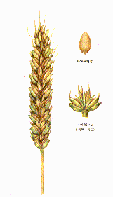
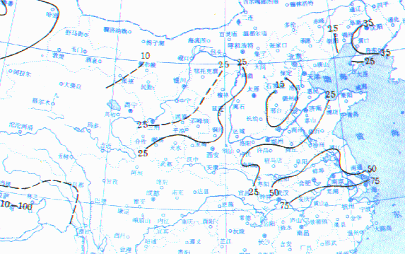
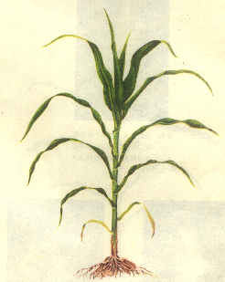
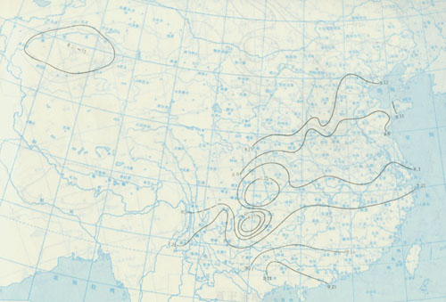
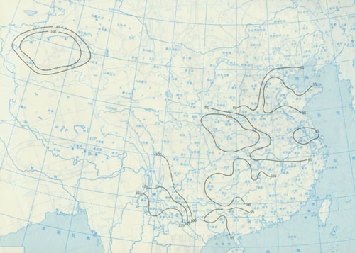
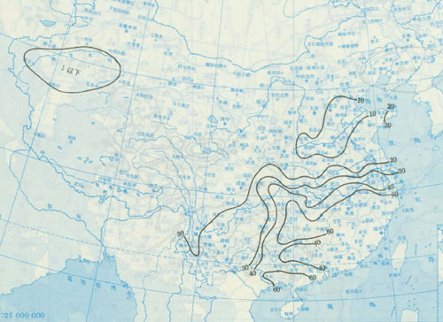

[TOC]
小麦知识

hello world
田间管理
播种前准备
做好生产计划，尽早腾地，保好底墒，精耕地，细整畦，搞好渠系配套工作，增施有机肥，合理施用底化肥，选用良种，检修好农机具，准备好农药和化肥，清除田间杂草。
播种-出苗
生育特点
秋分播种的麦种，当日平均气温为 15-18 度时，3 天左右就开始萌芽，7 天左右就能出苗，气温越低，播种越深，种子萌发和出苗越冬慢，立冬播下种子，越冬前积温达不到 110 度，当年就不能出土。墒情不足时，小麦出苗率低，出苗也不整齐。
主攻目标
苗全，苗均，苗齐，苗壮
主要措施

1.精选种子，选用干粒重高、发芽率 90%以上、发芽势强的大粒饱满种子。 2.药剂伴种，用 75%的“3911”乳油 2-3 公斤，喷伴麦种 1000 斤，拌匀后堆闷 12 小时，晒干播种。 3.浸种催芽。 4.适时播种 5.合理密植 6.提高播种质量
出苗-越冬
生育特点
麦苗出土后半月左右进入三叶期，三叶一心时，从分蘖节处长出 1-2 条次生根，同时长出第一个分蘖。以后，随着叶片数的增加，分蘖数和次生根数也相应增加。主茎冬前叶片数与单株茎数的关系（主茎叶数/单株茎数）：3/1，4/2，5/3，6/5，7/8，8/13.
主攻目标
促根增蘖，培育壮苗，保苗安全越冬。
主要措施
1.中耕松土：二叶后的土壤湿版、盐碱地中耕，三叶前后适当清垅。 2.追肥浇水：底墒和肥力不足、干旱的，追分蘖肥（每亩氮氨 30 斤或氨水 40 斤）。 3.苗期镇轧。 4.因苗管理。 5.预防病毒 6.及时冬灌：粘壤土土壤含水量<20%、二合土<18%，都需冬灌水。
返青-起身
生育特点
二月底、三月初开始返青。三月中下旬，新生一片叶伸长，春季分蘖和次生根也开始增长。三月底到四月初，二片叶露尖儿并伸长，中肥麦田，春分蘖的增长率约占冬前总茎数 10-20%；四月上旬，第三片叶露尖儿，基部第一节伸长，麦苗开始起身。新生分蘖停止，分蘖开始向两极分化。
主攻目标
早发稳长，蘖壮穗足，争取大穗儿。弱苗：促根、增蘖、争取早发；中等苗：增加春蘖；壮苗：促进大蘖稳长、控制小蘖孳生、防止群体过大、争取冬前分蘖成穗率达到 60%以上；旺苗：促冬前分蘖健壮成长。
主要措施
1.搂麦松土。2.因苗管理。弱苗：试过冬水肥、墒情好的松土；其他结合中耕及早施有机与无机混合肥，墒情查的结合灌水；中等苗：先浇水；壮苗：早春，深搂松土；三月下至四月初，亩总茎>100 万，深中耕；其他追肥浇水；旺苗：早春搂麦松土。3.防治虫病。4.防除杂草。
起身-挑旗
生育特点
四月上旬起身后，植株生长发育加快；至四月中旬，春季新生的第四片叶露尖、伸长，第一节显著伸长，第二节露头，即通常所说的拔节期。四月中至四月底，春生第五叶至第六叶露尖、伸长，第一、二节定型，第三节间开始伸长，第四节开始露头，幼穗分化进入雌雄蕊分化和药隔形成期。
主攻目标

协调群体发展和个体生长之间的关系，控制合理的株型，保持适当的叶面积和节间长度，巩固大穗成穗，小穗促花，保花增粒。
主要措施
1.因苗施肥水。群体够数、植株健壮；起身蹲苗，拔节追肥浇水；蓄水保肥性强、底肥足、墒情好；起身蹲苗、控叶、蹲节，拔节追肥浇水；肥力较差、群体不足的：起身亩总茎<80 万的，砂岗薄地和失墒明显弱苗，四月中提前施拔节肥、水。2.镇轧培土预防倒伏。3.预防锈病。
抽穗-成熟
生育特点
挑旗后十天左右抽穗，后三、四天开花。开花十天左右，籽粒外形长成。此后开始灌浆、加速沉积淀粉，随着植株体内贮存物质向籽粒运转，茎、叶干重减少，干粒重急剧增加。开花二十五天后，进入蜡熟期。从籽粒形成到蜡熟初期，要求要有较充足的水分供应。此后，逐渐进入完熟期。
主攻目标

养根，护叶，增粒，增重。
主要措施
1.浇好灌浆水。地势较低、保水力强的及挑旗水浇的晚的，五月二十五日浇足一次；高岗、砂地和挑旗水浇的早的，在五月十五至二十日浇扬花水，五月底、六月初再浇灌浆水；保水力差的，又遇干旱多风时，在成熟前七至十天补浇水一次。2.叶面喷肥。3.防治病虫。4.留选良种。
收获和脱粒
生育特点
进入蜡熟中期至晚熟期间的三、四天内收获，干粒重最高，品质也最好。进入完熟期，茎秆变脆，失去弹性，收获时易掉头。进入蜡熟末期，籽粒含水量降至 20%以下，茎叶的含水量降至 30%左右，全田呈现黄色，植株仅有上部一个结及附近仍呈绿色，叶片、叶鞘及节间全部转黄。
主攻目标

收好脱好，颗粒归仓，及时腾茬。
主要措施
1.收获方法：机械收获分联合和分段，联合收获最适宜时间是蜡熟末期至完熟期。 2.脱粒与干燥：收割的麦子应带杆晒干后再脱粒，以充分发挥小麦的后熟作用。干燥时，种子含水量 18%左右，温度>50 摄氏度，会降低发芽率。 3.入库贮存，入库小麦的含水量应小于 13.5%。
灌水技术
地面灌水
膜上灌

套棉套采用三麦一棉套种法，在棉行覆盖膜，在膜上输水，利用覆盖棉花膜输水，一方面水漫过沟顶向两侧麦田灌水，另一方面在输水前进过程中水沿放苗孔下渗浸润棉苗，大部分水下渗为棉田利用，一水两用，膜上单沟流量 0.8 公升/秒，每亩灌水可节省。
间歇沟灌
利用灌水后土面形成的坚实层，可减少水分下渗，避免深层渗透的原理，进行间歇灌水，单流量 0.8 公升/秒，灌前 0-40cm、土壤平均含水量 17.4%时流速较快，比连续沟灌节水 20%左右。主要适用于玉米和棉花。
间歇畦灌
畦长 55 米、65 米，畦宽 1.4 米。间歇畦灌在纵断面上灌水均匀。间歇畦灌土壤含水量占田间持水量的 85-79%，而连续畦灌 97-80%，提高灌水均匀度 10%，主要适用于小麦。
管道灌水
管道类型及布置

固定式：管灌的管网是将输水和配水管全部埋入地下，常年不动，官网布置分大面积管灌系统和小面积单井管灌系统；半固定式：输水管埋入地下，铺放在地表并与地下不分出水口连接的配水管道采用移动形式：移动式：管道全部布在地表，首端与水泵出水口联通，末端出水灌溉。
管道材质及管件

素混凝土连续现场浇注地埋管道、薄壁 PVC 塑料管、薄壁红铝 PVC 塑料管、双壁波纹 PVC 塑料管、薄壁聚乙烯 PE 塑料管、外加保护的地埋聚乙烯软管等；管件包括硬塑弯头、三（四）通；出水口多为金属（主要铸铁）件加上橡胶止水，或硬塑件加上橡胶止水。
管道系统的保护

为防止停泵后管输系统中的水流倒入井，致使管内产生真空负压并为防止气堵现象，在其首部要安装进排气装置，将管道的纵坡做成波浪式，为防止管堵或出水口未开引起的管内压力猛增，在管输系统中要安装必要的压力保护装置，过去用来作压力保护装置的有水泵塔和调压井两种。
管道系统的配水

固定式系统的配水：全部管道埋入地下，防水口间距一般为 50 米左右，标准越高，每亩的管道长度越长，半固定式系统：管道为移动式软管，防水口间距等于（沟）畦面宽度或二倍畦的宽度；移动式系统：达到田间后进行退管浇灌或进管浇灌。
灌水模式

施肥技术 （图片）
氮肥
碳酸氢铵
氨水
尿素
硝酸铵
氯化铵
硫酸铵
磷肥
过磷酸钙
重过磷酸
钙镁磷肥
骨粉
钢渣磷肥
脱氟磷肥
磷矿粉
钾肥
氯化钾
硫酸钾
窑灰钾肥
草木灰
复混肥
硝酸磷肥
磷酸铵
多磷酸铵
偏磷酸铵
硝酸钾
磷二氢钾
微量元素肥
锌肥
硼肥
钼肥
锰肥
铁肥
铜肥

矿质肥
石灰
石膏
硫肥
镁肥
硅肥
病虫防治
小麦病害
小麦赤霉病
症状 赤霉病俗称红头瘴、烂麦头等，作物生长的各阶段都能受害，引起苗腐、穗腐和根腐．穗腐发生初期在小麦颖壳上出现水浸状淡褐色病斑，逐渐扩展变黄褐色或呈青枯状，以后在病穗上可形成黑色小颗粒．苗腐、秆腐发生时，被害部变褐色，节上产生红霉，严重时全株枯死。
流行规律 一．气候条件：１．气温：温度影响赤霉病毒潜育期，平均气温＞１５度，温度越高，潜育期越短；２．湿度：影响大于温度．土壤湿度＞３０％，湿度越大菌量越多．二．与初侵染的菌量有一定关系．三．生育期：齐穗后２０天内最易感病，而以开花期的感染率最高，连续阴雨是关键。
防治方法 开深沟降低水位，减小田间湿度；２．选用抗、耐病品种．３．抽穗扬花期药剂保护：８０％多菌灵粉剂，每亩５０克，加水７５公斤喷雾；８０％多菌灵微粉剂２５克＋１５％粉锈宁粉剂２５克，加水７５公斤喷雾，兼治锈病、白粉病；７０％托布津粉剂８０克，加水７５公斤喷施。
小麦锈病
症状 锈病共有三种：即条锈、叶锈、秆锈，症状特点是受害叶片或茎秆上出现鲜红色、红褐色或深褐色的夏孢子堆和夏孢子．后期发病部位又产生黑色冬孢子和冬孢子．三种锈病的区别，根据夏孢子堆排列形状和颜色．条锈叶锈以为害叶片为主，秆锈主要为害叶鞘和茎秆为主。
流行规律 锈菌是随气流传播的病菌，当菌源量和气流很大时，可使几百公里甚至更远以外的小麦受侵染．锈菌夏孢子的寿命与日光照时间及湿度有密切的关系．条锈菌的夏孢子怕热，２３度以上就不能存活；秆锈菌怕冷，发生较晚；叶锈菌对环境适应性较强，常发于条锈病之后；３－４月易流行。
防治方法 选用抗、耐锈丰产良种；２．药剂防治：早期：３月中下旬喷施２０％粉锈宁乳油，每亩２５克，加水６０公斤；中后期：４月中下旬病叶率达２０％，喷施１５％粉锈宁粉剂５０克或２０％粉锈宁乳油４０毫升，加水７５公斤，兼治白粉病；３．加强栽培管理，提高抗病力。
小麦黑穗病
症状 主害穗部．病株抽穗期常略早于健株．初期病穗外面包有一层灰白色薄膜．病穗在未出苞叶以前，内部就已完全变成黑粉，薄膜也破裂，隔着苞叶有时可看到隐约的灰色．病穗尖端略露出苞叶时，即有黑粉散出．病穗上的小穗多全部被毁，有时只有下部的小穗被毁，上部留有少数健全小穗。
流行规律 抽穗、扬花期间的气候，对黑穗病的侵染有很大影响。风有利于病菌孢子的飞散和传播；大雨易将孢子淋落土壤中，使它们有机会飞落柱头；空气过干不利于孢子萌发。小麦扬花时如空气湿度大、多雾或经常小雨，则有利于病菌孢子的萌发和侵入，当年种子带菌率就高，次年发病就重。
防治方法 种子处理：湿热处理：将种子在４４－４６度温水中浸种３小时，保持水温，取出冷却晾干播种；药剂伴种：用１５％粉锈宁粉剂，每１００公斤种子用２００克；或用２０％粉锈宁乳油，１５０毫升；或用２５％ Panoram 乳油，２００－３００毫升；２．抽穗前检查并立即拔除病株。
小麦丛矮病
症状 特征是上部叶片有黄绿相间的条纹，分蘖显著增多，植株矮缩，冬前感病的植株大部分不能越冬．轻病株返青后分蘖继续增多，表现细弱，病株严重矮化，一般不能拔节抽穗或早期枯死。部分感病较晚及早春感病的植株，在返青和拔节期陆续显病。拔节以后感病的，能抽穗，而籽粒秕瘦。
流行规律 间作套种麦田病重：此时灰飞虱极易从秋作物及杂草转移到刚出土的小麦上，导致小麦丛矮病发生．２．早播麦田病重：小麦出土正值灰飞虱四代活动高峰．３．夏秋多雨，冬暖春寒年分病重：夏秋多雨，杂草繁茂，有利灰飞虱繁殖；冬暖有利灰飞虱越冬；春寒会降低小麦的抗病力。
防治方法 栽培管理：播种前全田翻耕灭草；适时播种，不在前茬套种小麦；加强麦田管理，灌冬水．２．药剂防治：小麦播种前用种量的０．２－０．３％三九一一伴种；播种后出苗前在间作麦田喷药；返青期治虫．药剂使用：４０％乐果或５０％辛硫磷乳油１５００倍液，亩１５０公斤。
小麦白粉病
症状 在小麦整个生育期内都能发生．主要为害叶片，严重时可为害叶鞘、茎杆、穗和麦芒．发病部位的表面覆盖有长圆形的白粉状霉层，严重时连成一片，成为白色至灰褐色的霉层．早期发病看不到明显的变化，随者病势的发展，叶片发生褪绿、发黄，严重时枯萎，致使早衰，容易倒伏。
流行规律 冬季和早春气温较常年偏高，雨日及降水量较常年偏少的年分，最适于白粉病发生．一般而言，田间潮湿，麦株过密互相荫蔽、通风透光不良的麦田发病严重；氮肥施用过多或氮磷施用不平衡的发病严重．施肥不足，管理不良，田间杂草很多，或在干旱缺水情况下，白粉病也可能严重发生。
防治方法 选用抗病、耐病丰产良种：如豫麦１２、郑州６８３、陕农７８５９等．２．栽培管理：在秋季播麦前，尽量消灭自生麦苗；氮磷钾要平衡施用，适当增施磷钾肥；３．药剂防治：一般在拔节至孕穗开始用药，每隔７－１０天喷１次，共２－３次；用１５％粉锈宁粉剂，每亩５０克；
毒麦
分布为害 黑龙江、吉林、甘肃、青海、新疆、湖北、江苏、浙江、山东、河南、安徽等省(区)都有发生。毒麦是混生在麦地里的一种有毒杂草，分蘖较多，繁殖较快，几年之内混杂率可高达 60—70％，使小麦产量遭受严重损失。毒麦籽粒中含有毒麦碱，人吃了含 4％毒麦的面粉，会出现头晕、昏迷、恶心、呕吐、痉挛等症状，几天内不能劳动。猪、马、鸡吃了混有毒麦的饲料会中毒晕倒，鸡甚至死亡。
识别 毒麦幼苗基部紫红色，后变绿色(小麦不变色)，成株茎秆坚硬，在肥田内比小麦矮，瘦田内比小麦高，穗形狭长，波浪形弯曲，每穗有 8-19 个小穗，每小穗有 2-6 个籽粒，互生于穗轴上，所以俗名小尾巴麦子。籽粒带壳和芒，长椭圆形，灰褐色，坚硬无光泽。毒麦还有变种：长芒毒麦，芒长，每小穗有 9-11 个籽粒；田毒麦，芒短，每小穗有 7-8 个籽粒。
发生传播 毒麦在士内 3 寸深处还能发芽出土。结籽多，繁殖力比小麦大 2-3 倍。成熟籽粒容易脱落田间，传播为害，但较远距离的传播还是由于调运混杂有毒的小麦种子所引起。
防治方法 (1)严格执行检疫制度：加强调查，进行检疫检验，不从有毒麦地区调种；发现麦种内混有毒麦，坚决不用来做种，集中加工处理。已发生毒麦地区，采取防治措施，加以消灭。(2)选种和建立无毒麦留种地：① 麦收前后在田间或场院穗选或在无毒麦地块片选；选出的无毒麦种子要单收单藏，防止混杂。② 种子可用硫酸按 25 公斤或硝酸按 30 公斤加水 50 公斤，使溶液比重达到 1．18 以上进行漂选，捞去漂浮毒麦。漂选过的麦种用清水选两遍，洗一次换一次水，以免影响发芽和幼苗生长。用清水选、筛选等方法也可清除一部分毒麦。② 建立无毒麦留种地，繁育良种。(3)耕作防治：在春麦地区进行秋耕翻地，使毒麦露出士面，当年发芽，经冬冻死。春耕效果不如秋耕。在春麦和冬麦地区，与中耕作物如玉米、高粱、甜菜等进行两年以上的轮作，通过间苗、中耕、除草、培土等措施，消灭毒麦．
小麦根腐病
分布和寄主植物 东北、西北和华北发生较多。除为害小麦外，也能侵染大麦、黑麦、燕麦和一些禾本科杂草。
症状 小麦根腐病也称斑点病、黑点病、青死病。在华北地区主要表现为苗期根腐。苗期发病，芽鞘和根变褐腐烂，严重时不能出士。较轻的生长瘦弱，苗基部叶鞘上发生褐色病斑。病苗矮小丛生，无效分蘖多，麦株逐渐萎黄，有时变成褐色或紫色，不能抽穗而枯死，或部分捆穗结实不良。在东北主要表现为叶斑和穗枯。叶上病斑深褐色，长圆形，或较长不规则形，病斑互相愈合成为大块枯死斑。叶鞘上病斑较大，长形，边缘不明显，灰色，其中掺有褐色斑点。在穗上，多为害几个小穗，小穗梗和颖片先变褐色，以后表面密生黑色霉。病穗所结种子胚部变黑。在西北干旱地区主要表现为茎基腐和根腐，轻的有黑褐色病斑，重的植株矮小，地下部变黑腐烂，籽粒秕瘦，甚至成为白穗。
发病规律 主要侵染来源是土壤里病残组织中的菌丝体和带病种子内的菌丝体或分生孢子。病残组织腐解后，病菌在士中即不能存活。受病组织和病株残体上产生的分生孢子借风雨传播为害。连作麦田发病常较重。此外，耕作粗放、播种过深过晚也都易于发病。不同品种的抗病性有差异，抗寒力强的品种，苗期受害轻。
防治方法 (1)选用无病种子和进行种子处理。(2)在重病区可与非禾本科作物轮作。(3)麦收后及时翻耕灭茬，清除田间禾本科杂草。深耕细耙，施足底肥，适期播种，注意浅播，促进出苗。(4)用 25％羟锈宁粉剂、15％粉锈宁、50％扑海因、50％福美双和 50％退菌特可湿性
粉剂等药剂拌种，用药量为种子重的 0．2—0．3％。在成株期抽穗期，每亩用 25％敌力脱 40 毫升或 25％粉锈宁可湿性粉剂 100 克，兑水喷洒 1-2 次。
小麦杆黑粉病
分布和寄主植物 全国各麦区都有发生，北部较南部发生多。只侵害小麦。
症状 小麦拔节后，症状逐渐明显。病株在叶片、叶鞘和茎秆上有灰色凸起的长条病斑，以后逐渐破裂，散出黑粉(病菌厚垣孢子)，所以俗称乌麦、黑疸、黑枪、麦疸、枪杆、黑铁条。病株较健株矮小，病叶卷曲，分蘖增多。严重时大部分不能抽穗；少数能抽穗的也多不结实而卷曲在旗叶叶鞘内，畸形扭曲，个别抽穗的虽能结实，但穗小，籽粒秕瘦。
发病规律 北方冬麦区以土壤传染为主。小麦收获前，病株上的厚垣孢子有一部分落人士中，收获后，大部分病株遗留田间，随麦茬翻入地下。病菌孢子在干燥地区的土壤中能存活 3—5 年。打场时种子上粘附的病菌孢子也能传染。此外，一部分病菌抱子还可通过麦秸、麦糠、打场土等混入粪肥而传染。病菌孢子随种子萌发而发芽，并侵入小麦幼芽，逐渐蔓延到生长点，第二年春天显现症状。平均土温在 21 度以上或 14 度以下都不适于病菌侵入。因此，早播或过晚播种的小麦发病都轻。病菌只能侵染未出土的小麦幼芽，整地粗糙、播种时墒情不好、播的深，都会加重病害发生。夏季田间长期积水可加速土壤中病菌孢子的死亡率，因此，发病地经过水涝或种过水稻再种小麦，病害发生轻。
防治方法 (1)用种子重量的 0．03％(有效成分)粉锈宁、0．2％的 40％拌种双或 0．2％的 70％甲基托布津拌种，或用 0．3％的 50％六氯代苯或 0．2％的 70％五氯硝基苯拌种。用 1％硫磺粉拌种或 1％石灰水浸种对消灭种子上的病菌也有效。在重病田，如用六氯代苯或五氢硝基苯拌种，还需施用六氯代苯毒士或饼肥(见小麦散黑穗病)。(2)不同小麦品种对秆黑粉病的抵抗能力相差很大，可因地制宜地选种抗病品种。
小麦杆枯病
分布和窝主植物 华北、华东和西北局部地区有零星发生，只为害小麦。
症状 小麦出土一个月后，土面下的幼芽鞘或叶鞘上就开始发病，出现灰白色菌丝块，以后在周围形成有褐色边缘的椭圆形病斑，逐渐蔓延到地上部分。返青后病斑扩大成云块状斑纹，有时互相连接，有些植株在叶鞘内出现白色菌丝层。拔节后病斑继续扩大，时鞘有明显椭圆形病斑，剥开叶鞘，茎秆中下部常有灰色菌丝层，上有小黑点(子囊壳)。病重的在幼苗到抽穗阶段，陆续死亡；病轻的可以勉强抽穗，但因茎部受害，在第一、二节处弯曲倒折，多不结实或种子秕瘦。
发病规律 收割后，小麦残株碎裂成块，混入士中，其中的菌丝和子囊壳所产生的子囊孢子在土中可以存活三年以上，成为侵染来源。病株种子不带菌。春天，病菌自下而上，由外层向深层发展。但一般很少发生株与株之间的二次传染。平均地温在 10 一 15 度，土壤湿度较大时适于侵染，小麦在三叶期以前很易受害，以后抵抗力逐渐增强。因此晚播小麦发病较重，而早播小麦由于在土温下降至侵染适温时往往已超过三叶期，发病较轻。缺肥、管理不好、小麦生长瘦弱时，发病也较重。
防治方法 (1)适时播种，加强栽培管理提高小麦生活力，可以减轻为害。(2)用 50％福美双 500 克拌种 100 公斤，可以减轻病害。(3)在播种沟内施人粪尿或豆饼 20—30 公斤，可以收到一定的防治效果。
小麦红矮病
分布和寄主植物 在西北地区的高原和丘陵地带发生。除为害小麦外，还侵害燕麦、水稻、黑麦、糜子、高梁、画眉草、狗尾草、雀麦、白草、赖草、稗子和旱芦苇等。
症状 小麦感染红矮病主要在秋苗时期。感病后，植株会变红的品种上，先由叶尖或叶基部出现黑绿色的斑块，以后变成紫红色，最后全株变成紫红色，叶片变厚变硬。在不变红品种上则变黄色或轻微变红。小麦返青后，叶片短而直立变为黑绿色，最后变为红紫色，叶鞘有时特别松张。病重的麦株不能拔节，心叶抽不出来，逐渐死去；轻病株虽能拔节，有的还能抽穗，但往往不能结实，即使结实，籽粒也很秕瘦。袖穗的病株比健株矮，株形不正常。根据以上症状，各地又有不同的俗名如：红病、金绛病、刷刷子、草胡胡子、从钵等。
发病规律 红矮病是一种病毒病，只能由时蝉传播，包括条沙叶蝉、黄斑角顶叶蝉和角顶叶蝉等，但以条沙叶蝉的传毒能力最强，是最重要的传毒介体。秋季成虫由杂草和自生麦苗向麦田迁移，刺吸毒苗传病，在旧麦茬叶鞘内或枯草隙缝中产卵、越冬。条沙时蝉在甘肃陇南一年发生 4 代，春季第一代在麦田中生活，产卵在时鞘内侧和叶子表皮内，到 7 月下旬开始产卵，不久就孵化为秋季一代若虫，到小麦播种出苗后迁入麦田为害。角顶叶蝉也以卵越冬，在甘肃一年发生 2 代。黄斑角顶叶蝉以成虫在麦田中越冬，一年发生 2 代。早播麦田和阳坡地叶蝉多，发病重。冬季雪少、春暖早和干旱都是有利于发病的条件。
防治方法 (1)种植抗病或耐病品种。(2)用 0．05％的一Ｏ五九或一六Ｏ五药液浸种 12 小时，捞出晾干后播种，或用种子重量的 0．3％三九一一拌种或三九一一粉剂 250 克拌麦种 50 公斤。在田间可用乐果、氧化乐果或敌敌畏等药剂喷雾防治。(3)清除杂草，及时浅耕灭茬，增加翻耕和中耕次数，适时晚播，冬前镇压麦田，春季及时耙磨，返青后追施肥料等。这些措施可以减少虫源，增强小麦抵抗力，减轻发病。(4)大网拉虫，集中消灭。
小麦黄矮病
分布和寄主植物 华北、西北、华东等地区都有发生。除小麦外，还能侵染大麦、燕麦、谷子、糜子和多种禾本科杂草。
症状 小麦从幼苗到成株期都能感病。苗期感病时，叶片失绿变黄，病株矮化严重，高度只有健株的三分之一到二分之一，甚至更矮。病重的麦苗往往不能越冬，或越冬后不能拔节、抽穗，能抽穗的籽粒也很秕瘦。感病较晚的麦株，矮化现象不明显，典型症状为：上部幼嫩叶片从叶尖开始发黄，逐渐向下扩展，使叶片中上部也发黄(发黄部分一般占全叶三分之一到二分之一)，发黄叶片呈亮黄色，鲜艳有光泽，叶脉间有黄色条纹，所以俗名叫做黄叶病。穗期感病的麦株仅旗叶发黄，症状同上。早期病株在田间呈点片分布，感病晚的病株常单株分散在田间。个别品种感病后，叶片变紫色。
发病规律 黄矮病是一种病毒病，由麦二叉蚜、麦长管蚜、禾缢管蚜、麦无网长管蚜和玉米蚜传播，以麦二叉蚜为最重要的传毒介体。麦田和附近杂草多少、虫口密度大小、带毒蚜虫迁飞早晚和小麦生长阶段的不同都与发病轻重有直接关系。气候条件有利于蚜虫繁殖时，常引起黄矮病严重发生。肥、水等栽培管理差的发病重。
防治方法 (1)选用抗耐病品种，如渭麦 4 号、5 号、G408、咸农 4 号等。(2)清除田间和附近杂草，注意适期晚播。(3)加强肥、水栽培管理，增强植株抗病力。(4)据西北地区经验，在重病区可推广药剂拌种。方法是用 75％三九一一乳油 100 克或 50％一六Ｏ五乳油 100 克，加水 3—4 公斤，拌麦种 50 公斤，边喷药液边搅拌均匀，堆闷约 12 小时，摊开晾干后播种；或用三九一一或敌死通粉剂 250 克拌麦种 50 公斤。在早春用药剂如抗蚜威或氧化乐果治蚜。
小麦黑颖病
分布和寄主植物 东北、华北和西北都有发生。除为害小麦外，也能侵染黑麦和大麦。
症状 病原细菌主要为害穗部，也能侵染叶片、穗轴和麦秆等部位。病部现褐色到黑色的条状病斑，逐渐合并，使颖片变黑。病斑初为水浸状，潮湿时分泌出黄色的菌脓。病穗种子干缩。叶片上的病斑为黄褐色条斑，穗轴和秆上的病斑则为长条状黑色条斑。
发病规律 种子带菌是初次侵染的主要来源。病菌也能在田间病残组织内存活并传病，但病残组织腐解后，病菌即难生存。在小麦生长季节，病斑上的菌脓含有大量病原细菌，能借雨水、昆虫和接触进行再侵染。高温、多湿的气候有利于发病。
防治方法 (1)选换无病种子。(2)合理轮作倒茬，清除病残物和杂草。(3)用 1％石灰水，在 30 度下浸种 24 小时,晒干后播种。用种子重量 0．2％的 40％拌种双干拌种，防效较好。用 0．03—0．1％的 15％叶枯宁胶悬剂喷洒，从孕穗期开始，每隔 7 一 10 天喷 1 次，连续喷 2—3 次，防病增产效果显著。
麦类麦角病
分布和寄主植物 在我国分布很广，以黑龙江、河北北部和内蒙古草原地带较多。麦角菌寄生于多种禾本科杂草上，农作物中主要为害黑麦，也侵害大麦和小麦。
症状 病菌主要侵害花部，先产生黄色蜜露状粘液，其后花部逐渐膨大，在结麦粒的部位形成紫黑色长角形菌核，叫做麦角。麦角的大小因寄主植物不同而有差异，大的可长达一寸以上。
发病规律 在土中越冬菌核一般只能存活一年，春季发芽出士，产生大量孢子(子囊孢子)，借风、雨、昆虫传播到寄主植物花部。被侵染的小花，经 7 天左右产生黄色蜜露状粘液，约半月后形成菌核。粘液内有大量病菌孢子(分生孢子)，再由昆虫携带、雨滴飞溅或病穗的直接摩擦碰撞扩大传播，不断侵染另外的小花。开花期愈长，侵染愈多。春季地面湿润，菌核易于发芽；寄主植物开花期间潮湿多雨有利于病菌传播和侵染。种子中混杂有菌核也能传病。
防治方法 (1)选择无病地块留种，或选用不带菌核的种子，如种子带有菌核，可用 20—30％食盐水进行汰除。(2)清除田间杂草和自生麦苗，消灭野生寄主植物。(3)秋季深耕。受害严重地块，可与非禾本科作物轮作。
小麦蜜穗病
分布和寄主植物 在小麦线虫病发生地区有零星发生。 只为害小麦。
症状 新叶卷缩，茎秆弯曲，常不能抽穗，即使抽穗也很瘦小，全部或一部分小穗不能结实。叶和叶鞘间及病穗颖片外部有黄色菌胶分泌物，所以有的地方把它叫作鸡蛋黄病。这种分泌物在小麦成熟后凝结硬化成为蛋黄色胶状小粒。
发病规律 此病是一种以小麦线虫病为传病媒介的细菌病害。病菌由线虫携带传播，在虫瘿内可存活二年半。
防治方法 防除小麦线虫病后，此病即可消灭。
小麦全蚀病
分布和寄主植物 山东、四川、云南、江苏、浙江等省均有发现。除为害小麦、大麦外，也能侵染黑麦、燕麦、稻、粟和一些禾本科杂草。
症状 苗期病株矮化，分蘖减少，下部黄时较多，根部变褐色。抽穗后，在湿度较大的情况下，病株开始发黄，以后叶、茎和穗迅速变白干枯。遇雨后，病穗发霉变灰褐色，茎基部 l 一 2 节处灰黑色或黑褐色，剥开叶鞘，可见黑膏药状的菌丝层，上面密生黑色小颗粒(病菌的子囊壳)。在较干燥的情况下，以上病状不明显，病株仅表现矮小、稀疏症状，但后期病穗仍变白枯死。全蚀病开始零星发生，二、三年后可发展到成片死亡。
发病规律 病菌在土壤中的病残组织上越夏，成为冬麦播种后的主要侵染来源。病菌孢子也能粘附在种子上，随小麦播种后发芽侵入幼苗为害。病菌以菌丝体在麦苗组织内越冬，春季再行发展。麦田施用混有病残组织的粪肥也能传病。春麦发病的菌源与冬麦相同。病菌侵入适温为 12—16 毒，发育适温为 15—24 度。不同品种感病程度有明显差别。
防治方法 (1)选用无病种子。(2)调整作物布局，搞好短期轮作，坚持 l 一 2 年换种一次非寄主作物。(3)增施有机肥和磷肥。(4)麦收后及早浅耕灭茬，尽早深翻晒土，加强水肥管理，不用带病残物积肥，施用净肥。(5)用种子重量的 0．03％(有效成分)粉锈宁干拌种。在早春拔节期，每亩用 15％粉锈宁可湿性粉剂 150—200 克或 20％粉锈宁乳油 100 一 150 克，兑水 50—60 公斤喷浇麦苗。
小麦线虫病
分布和寄主植物 全国麦区都有发生，过去苏北、皖北、豫东南、冀中及鲁西南等地区发生严重。除小麦外，还能侵害黑麦，略能侵害燕麦。
症状 病株在分蘖期表现时鞘松弛，茎秆肥肿弯曲，叶片皱缩捻曲;孕穗期以后，表现茎秆肥大、弯曲，较健株矮小，除少数受害严重的不能抽穗外，一般仍能抽穗，但麦穗的一部或全部不结子实。变成病粒，即病瘿。所以又称为马连子、变麦、胡椒子、铁乌麦、麦疣子。虫瘿球形，油绿色，后变紫褐色，较麦粒短而粗。病穗颖片被挤向外张开，瘿粒可从缝间看到。虫瘿很坚硬，副开后，内部充满白色絮状物，就是线虫幼虫。
发病规律 混杂在小麦种子内的虫瘿是传染病害的主要来源。每个虫瘿内有 8000—25000 条休眠幼虫。虫瘿随小麦种子播人士中，吸收水分，里面的幼虫逐渐苏醒，钻出病粒，侵入幼苗，逐渐向上转移，最后达到花部，使花部受到刺激，不能正常发育，变成虫瘿。虫瘿内幼虫迅速长大变为成虫，经交配、产卵，再孵化成幼虫，以后在虫瘿中休眠。当虫瘿发育晚时，幼虫可在相对保持正常的种子中生存。到收获，虫瘿与种子混杂或落在土中，瘿内幼虫在干燥条件下可存活几年。
防治方法 (1)与非寄主作物轮作 2 年。(2)选用无病麦种做种。(3)用胶泥水、食盐水和清水选种：胶泥水为 30—40％，食盐水为 20％。选种时，将种子盛在细密的箩筐内，放入胶泥水、食盐水和清水中，使水面没过种子，边搅动边捞出上浮水面的虫瘿。清水选种，动作应迅速，以免瘿粒吸水下沉，影响汰除效果。用食盐水选的种子宜用清水漂洗干净。(4)种子在 54 度温水中浸泡 10 分钟，可杀死轻度受害种子中的幼虫。
颖枯叶病
小麦颖枯病 > 分布和寄主植物 主要发生在东北春麦区，长江流域冬麦区也有发生。只为害小麦。
症状 主要为害穗和茎秆，也能侵害叶和叶鞘。穗部症状在乳熟期最明显，多在穗的顶端或上半部小穗上先发生，在颖壳上先产生深褐色斑点，后变枯白色，扩展到整个颖壳，上长满菌丝和小黑点(分生孢子器)，病重的不能结实。叶上初期出现椭圆形谈褐色小点，以后扩大成不规则病斑，中间灰白色，上密生小黑点。有时没有明显病斑，全叶或大部分变黄。旗叶被害多卷曲枯死。叶鞘发病变黄，上生小黑点，常引起叶片早枯。茎节发病生褐色病斑，上生小黑点，往往病节以上的茎秆变灰褐色而枯死。
发病规律 病菌主要在田间残余病株上越冬，也可以附着在种子上越冬，成为第二年侵染来源。病株上产生的分生孢子可借风雨再次传播为害。湿度大、温度较高适于病害发生。土壤瘠薄，麦株衰弱，抗病力差，发病重。品种间抗病力有很大差异。
小麦叶枯病 > 分布和寄主植物 在东北春麦区、长江流域及华北冬麦区都有发生。除小麦外，还能侵染黑麦。
症状 主要为害叶片和叶鞘，在叶片上叶脉间出现淡绿色卵圆形病斑，以后互相愈合成不规则淡褐色病斑，上生小黑点(分生孢子器)。一般先由下部叶片开始发病，逐渐向上发展。在早春和晚秋，如病菌侵入根冠部分，下部叶片可以枯死，常引起植株衰弱甚至死亡。偶尔也有在穗和茎秆上发生的，但颖片、籽粒和秆上病斑较小，小黑点也少。
发病规律 病菌在病株上或附着在种子上越冬。在冬麦区，病菌能在秋季侵入麦苗，以菌丝体在寄主组织内越冬，到第二年继续蔓延为害。病组织上产生分生袍子，借风、雨和水流继续传播为害。低温、多湿有利于叶枯病发生。一般连作地发病多。小麦品种间抗病力有一定差异。
防治方法 两病防治方法相似。(1)选用无病种子或进行种子处理(参考小麦黑穗病)。(2)深耕灭茬，清除田间有病残株。用病株沤肥应充分腐熟以消灭菌源。(3)在重病地进行轮作。(4)换种抗病力强的品种。
小麦虫害
麦粘虫

特征 粘虫种类很多，分布很广．３龄虫常将麦叶边缘咬成缺刻状，５－６龄幼虫进入暴食阶段，能将叶片全部吃光，并咬坏穗子，大发生时常吃光一块麦田后，成群地向附近田块迁移。
生活规律 粘虫喜潮湿，怕高温干旱，雨水多年分往往大发生．粘虫有假死性，它的成虫是一种夜蛾，对糖类及甜酸气味的发酵液有趋性，并有远距离飞翔的能力．喜产卵于禾本科植物枯黄叶上。
防治方法 糖醋液诱杀成虫．在发蛾盛期，用糖１份、醋３份、水１０份混合后，加入０．１％敌百虫晶体配成诱杀剂，置于田边地头，每４亩放１盆，６天一换．２．药剂防治幼虫．常用有５％马拉硫磷粉剂，每亩１．５公斤喷粉；或５０％辛硫磷乳油６００倍液，亩用药７５－１００公斤。
麦蚜虫
特征 蚜虫在全国各麦区都有发生，主要有麦二叉蚜、麦长管蚜、无网长管蚜、麦禾缢管蚜，四种麦蚜均为害禾本科作物和杂草．其中仅缢管蚜在北方寒冷地区产卵于苹果属植物上，早春繁殖后迁飞至禾本科植物上．二叉蚜为害能力最强，在刺吸时并能分泌毒液，破坏叶绿素，形成黄色枯斑。
生活规律 二叉蚜喜在作物苗期阶段为害，小麦灌浆后多即迁飞；不喜氮素肥料，脊薄麦田为害严重；喜干旱，怕光照，多分布于植株上部叶片正面。长管蚜喜光照，较耐氮素肥料和潮湿；植株抽穗灌浆后，繁植量大增，并集中穗部为害．无网长管蚜介于上二者之间。缢管蚜怕光喜湿，为害茎杆。
防治方法 种子处理．用７０％灭蚜松可湿性粉剂０．５公斤，麦种５０公斤，堆闷１２小时后播种；２．田间防治．有蚜株率、百株蚜量：苗期５％、１０头，春季返青后２％、５头，孕穗期３％、１５０头，用４０％乐果乳油３０００倍液，或５０％辛硫磷乳油２０００倍液，亩５０公斤。
麦叶蜂
特征 成虫：雌虫体长８．６－９．８毫米，雄虫８－８．８毫米．全体除前胸背板、中胸前盾板和颈板为赤褐色外，均为黑色．翅近透明，上有极细之淡黄色斑。头部有网状花纹，复眼大，头部后缘曲折，头顶沟明显。幼虫：老熟幼虫体长１７．７－１８．８毫米，体细圆筒形，头深褐色。
生活规率 幼虫在４月上旬开始出现，至５月上旬，离开麦株，入土休眠，并分泌出一种粘液，把周围的土粘住，作成一个土茧，直至１０月中旬，再脱皮１次，变蛹越冬。幼虫共５龄，１、２龄时白天也在麦叶上为害，３龄以后，白天在土块下或麦丛附近隐蔽，黄昏后上升为害。幼虫为害２０天。
防治方法 农业防治：在种麦前深耕时，可把土中休眠的幼虫翻出，使其不能正常化蛹，以致死亡．有条件地区水旱轮作，进行稻麦倒茬，可消灭危害．２．药剂防治：每亩用１．５％乐果粉，或１．５％甲基一六Ｏ五粉，或７．５％敌百虫粉，早、晚进行喷撒。３．人工捕打：应在傍晚进行。
麦蜘蛛
特征 雌成虫体卵圆形，体长０．８毫米，呈黑褐色，体背有横刻纹８条，在第二对足基部背面左右两侧，各有一圆形小眼点，有足四对；幼虫有足３对，身体、口器及足均为红褐色。麦蜘蛛为害小麦、大麦等作物的叶片，先为黄白色小圆斑，后使麦叶变黄，严重时为害叶鞘和茎，甚至枯死。
生活规律 我国常见的麦蜘蛛有麦圆蜘蛛和麦长腿蜘蛛．麦长腿蜘蛛主要发生在黄河以北旱作麦区；麦圆蜘蛛发生在黄淮及长江流域各省麦区。麦长腿蜘蛛喜温暖干燥，一般白天到叶片上吸食为害，傍晚后下降到麦株基部土块下潜伏；麦圆蜘蛛喜潮湿，怕高温，干燥，傍晚爬到麦叶上活动为害。
防治方法 灌水灭螨：在两种麦蜘蛛潜伏期，分别灌水，振动麦叶使麦蜘蛛假死落地，并在水口搅动流水，使其遇泥水即被粘附致死。２．药剂防治：用４０％氧化乐果乳油２０００倍液，或５０％久效磷乳油２０００倍液，或５０％溴螨脂乳油２５００倍液等，每亩用药液５０－７０公斤。
蝼蛄

特征 蝼蛄是一种全国性地下害虫，各地都有分布，麦田中发生的有非洲蝼蛄和华北蝼蛄两种。一般河流沿岸，低洼潮湿区，轻砂土、砂壤土和盐碱土地区发生较重。成虫和若虫都能为害，春秋两季为害最盛。
活动规律 蝼蛄用前器口和前足将麦根茎咬撕成乱麻状，造成植株枯死，或咬食发芽种子，造成缺苗断垄．蝼蛄在表土层活动时，由于造成纵横隧道，使幼苗与土壤分离，引起幼苗失水枯死．成虫夜间活动，有强烈趋光。
防治方法 １．灯光诱杀：在蝼蛄盛发期，每天晚上８－１０点用黑光灯诱杀。２．药剂防治：用４０％甲基异硫磷乳油５０毫升加水５公斤，小麦种子５０公斤，晾干后播种。３．土壤处理：用３％辛硫磷等，每亩２－２．５公斤药液，加细土２５公斤，在犁地前均匀撒施田间，随犁翻入土中。
朝鲜金龟子
分布为害 北起黑龙江，南到长江沿岸，西至陕、甘等地都有发生。幼虫(蛴螬)主要为害麦类、玉米、大豆、高粱、甜菜等根茎部，造成缺苗断垅；还能为害花生、薯类的地下部分，造成减产。成虫取食叶片，主要为害大豆、甜菜、花生及较矮的树木。
识别 成虫：体长 16-21 毫米，宽约 8．2-11 毫米，体长椭圆形，黑褐色，有光泽。前胸背板有刻点，鞘翅上有数条隆起暗纹。腹面节间分界线中间断开不明显。卵：乳白色，椭圆形，长约 3．5 毫米。幼虫：老熟时体长约 35 毫米，头部黄褐色，体乳白色，密生黄白色细毛，尾节肛毛排列不规则，肛门开口在腹面。蛹：长约 20 毫米，体黄色，头部褐色。
生活习性 东北及晋东南两年发生 1 代；北京约 430 天；黄淮地区一年发生 1 代。以幼虫和成虫在土中越冬。成虫 3、4 月开始出现，盛期在 4-6 月间，昼伏夜出，产卵在 2、3 寸深的土中，卵期 10-15 天。幼虫在土中的活动为害与温度有重要关系，据在北京观察当 10 厘米土温 5℃ 时开始上升，平均在 13 一 18℃ 时是活动为害盛期，5℃ 以下时越冬。幼虫老熟后在土中作士茧化蛹，蛹期 14—30 天左右。
沟金针虫
分布为害 河北、河南、山西、山东、辽宁、内蒙古、安徽、江苏、陕西、湖北等省(区)。为害麦类、玉米、高粱、谷子、甘薯、甜菜、马铃薯、麻、蔬菜等。
识别 成虫：体长 16-17 毫米，浓栗色，全身密生黄色细毛。雌虫前胸背板呈半球形隆起。卵：椭圆形，长约 0．7 毫米，乳白色。幼虫：体长 20—30 毫米，黄色，有光泽，体背中央有一纵沟。尾节深褐色，末端有二分叉。
生活习性 约三年完成 1 代。幼虫期很长，老熟幼虫 8 月化蛹，成虫羽化后即在土内越冬。春季开始活动，产卵在土中。幼虫在黄淮地区于 3 月初(10 厘米土温平均 5．7—6．7 度)开始活动，4 月间(土温 10．8-17 度)是为害盛期，夏季气温高，金针虫向深土层移动，停止为害。秋季气温降低，小麦播种后又为害幼苗。
黄吸浆虫

分布为害 主要发生在甘肃、青海、宁夏等省(区)。与麦红吸浆虫的并发区有四川、贵州等省。高原和山区盆地发生较重。为害情况与麦红吸浆虫大体相似。不同的是侵入麦壳后多停留在小麦柱头端毛或腹沟中，常影响麦花的正常发育甚至吐不出花药，以后逐渐转移到麦粒背面基部继续为害。
识别 黄吸浆虫与红吸浆虫不同点是：成虫：大小和形态虽然相似，但体色不同，姜黄色，极易区别。翅膜质透明，微带淡黄色。雌虫腹部末节细小，形成伪产卵管，能伸缩，管端尖细如针，约为腹长的两倍。卵：细小，长圆形，末端收缩成细长的柄。幼虫：体色姜黄或淡黄绿色，表面光滑，胸骨片前端凹陷较浅。蛹：初化时嫩黄绿色，后逐渐加深，临羽化前复眼和翅芽均呈黑褐色。
生活习性 与麦红吸浆虫相似，不同点为卵期、蛹期均较长，卵期 7—8 天，蛹期 12 一 15 天。产卵管自内外颖尖端扣合孔处插入，将卵直接产在内外颖中间，每处约 5—6 粒。
防治方法 (1)选种抗虫品种，经鉴定，咸农 151、陕农 1 号、洛阳 851、丰产 1 号、徐州 2111 等均有一定抗性，可因地制宜进行试种；结合作物布局，实行大面积轮作倒茬。(2)在作好虫情测报基础上，于蛹盛期撤施毒土。可用 6％林丹粉、3％甲基一六Ｏ五、1％乙基一六Ｏ五、4．5％甲敌粉、4％敌马粉、5％西维因、0．04％除虫晶粉等任选一种，每亩 1．5 公斤，均匀拌入 20—25 公斤细士中，撤于麦田地面。亦可用辛硫磷、氧化乐果，甲基一六Ｏ五等乳剂 100—200 毫升加水 2 公斤，均匀喷拌细士 20—25 公斤，撤于土面上。成虫期喷药可用 1％林丹粉或上述几种粉剂任选一种，每亩喷 1．5—2 公斤。土壤处理每亩用 6％林丹粉 1．5 公斤兑细土 25 公斤，在秋播前均匀撤施士面随即耕翻土中，能杀死大量幼虫，抑制成虫羽化，并可结合防治地下害虫、麦蜘蛛、麦茎叶甲等。
麦蝽象
分布为害 分布在宁夏、新疆、甘肃、吉林、河北、山西、陕西、江苏、浙江、江西等省(区)。在西北荒砂地区发生严重。为害麦类、水稻、禾本科植物、苜蓿等。用刺吸式口器吸食叶片汁液，被害麦苗出现枯心，或叶片上显现白斑，以后扭曲为辫子状，严重时麦苗叶子好象被牛羊吃去尖端一样，后期被害可造成白穗及秕粒。
识别 成虫：体长 9-11 毫米，黄褐色，有黑白纵条纹，头向下倾，前端尖而分裂，所以也叫尖头蝽象。小盾片发达如舌状，长度超过腹背中央。卵：红褐色，馒头形。若虫：全体黑色，复眼红色，腹节间黄色。
生活习性 宁夏一年发生 2—3 代，成虫集中在芨芨草基部越冬。越冬成虫 4 月底开始活动，5 月初迁入麦田为害麦苗，5 月上旬在麦苗下部、叶尖或地表面枯枝残叶上产卵，每 11—12 粒排成单列。5 月中旬若虫孵化继续为害，小麦成熟时成虫迁回芨芨草等杂草上，约 10 月间潜伏越冬。
防治方法 (1)在西北地区麦蝽象主要在麦田周围的杂草下越冬，清除并烧毁杂草和枯枝落叶可消灭大量越冬成虫。(2)小麦收割后深耕可大量杀死尚未外迁麦蝽象。(3)成虫盛发初(小麦返青以后)每亩喷撒 2．5％敌百虫粉或 4．5％甲敌粉或 4％敌马粉，每亩 l.5—2 公斤。
黄麦秆蝇
分布为害 内蒙古、河北、山西、陕西、甘肃、宁夏、青海、新疆、河南、山东等省(区)。除为害小麦、大麦外，也寄生在大麦草、细叶苔、雀麦等杂草上。以幼虫蚊食小麦幼苗心叶造成枯心，后期蚊食幼穗基部造成白穗。
识别 成虫：体长 3—4 毫米，淡黄绿色，胸、腹背面都有 3 条褐色纵纹，胸背面两侧纵纹后端各有一分支. 足绿色，后足腿节显著膨大。卵：长椭圆形，白色不透明，长约 1 毫米。幼虫：为黄绿色的蛆，长 6—7 毫米，腹末中央有一深的纵沟，将末端分成两半。蛹：长椭圆形，黄绿色，长 4—5 毫米。
生活习性 春麦区每年发生 2 代。第 1 代成虫 5 月下旬在麦田出现，6 月上中旬是发生盛期，第 2 代从麦田转移到杂草上。以幼虫在杂草根茎部越冬。冬麦区如晋南一年发生 4 代。麦田内第 l 代羽化盛期在 4 月中、下旬；第 2—3 代在杂草上生活；第 4 代成虫盛期约在 9 月下旬，以幼虫在麦苗和杂草上越冬，如冬前天暖，也可造成为害。成虫活跃，羽化半天后即开始产卵，卵散产在麦叶正面基部。初孵幼虫从穗节的叶鞘缝隙侵入，沿着麦秆以螺旋形式向下取食，直达穗节基部。老熟幼虫爬至叶鞘上半部的缝隙内化蛹。
防治方法 (1)加强抗害丰产栽培技术，提高小麦对其危害的抗耐机能，减轻受害程度。(2)调整播期，适期早播。(3)选种抗虫品种。(4)在作好测报基础上，成虫盛发期喷撤 2．5％敌百虫粉每亩 1．5—2 公斤或 50％辛硫磷乳剂 3000 倍液，每亩喷 75 公斤左右。
麦茎谷蛾
分布为害 主要发生在山东、苏北，河北、山西及辽宁等省亦有分布。为害大麦、元麦和小麦。以幼虫蛀食穗节基部造成白穗、枯孕穗或虫伤株。
识别 成虫：雄蛾体长 5．9-6．6 毫米，翅展约 10．4 毫米；雄蛾 7．1-7．9 毫米，翅展约 13．5 毫米。全体密布粗鳞片。前翅长椭圆形，灰褐色，上有 2—3 条深黑色斑块。后翅稍宽于前翅，黑灰色，沿前缘有白色剑状纹。腹部粗肥，背面第 5 节白色，余为黑色；腹面黄褐色。卵：长椭圆形，长约 1 毫米。幼虫：初孵幼虫乳白色，后变浅绿色，2 龄以后黄白色。老熟幼虫体长 11-15 毫米，细长圆筒形。胸、腹部气门周围有黑斑，腹部第 9 节背面有 4 个小黑点，排成一横列。末节臀板上有 6 根刚毛。蛹：体长 7 一 10．5 毫米，初为黄白色，后变黄褐色，腹端有短刺 6 根。
生活习性 据山东记载，一年发生 1 代，以低龄幼虫在麦苗心叶中越冬。返青后开始为害，拔节期造成心叶枯心；抽穗期幼虫蛀食麦穗柄节基部，造成白穗或枯孕穗。幼虫能转株为害，每头幼虫可为害麦茎 2—3 株。5 月上中旬幼虫老熟，在剑叶鞘结薄茧化蛹。5 月末至 6 月上旬三麦成熟期成虫羽化。6 月中旬成虫盛发，上午 9 时开始活动，11 时最盛，下午 3 时潜伏。成虫不取食，有假死性，成群趋集荫蔽场所如屋檐、墙缝、门窗边、草垛和老树皮内越夏。秋季在麦田中产卵为害。一般以离村近和抽穗早的麦田受害较重。
防治方法 (1)在成虫盛发期，大量成虫趋集荫蔽场所时，发动群众捕蛾。并可在屋檐下挂麻袋诱蛾趋集。清早扫落杀死。(2)4 月上、中旬幼虫大量爬出活动及转株为害时，喷撒 1％林丹或 2．5％敌百虫粉每亩 1．5 公斤或 50％敌敌畏乳油 1500 倍液，每亩 60 公斤左右。
麦茎甲虫（钻心虫）
分布为害 华北、西北与内蒙古都有发生，以山西南部至甘肃平原一带发生较重。主要为害小麦，其次是大麦。以幼虫蛀入麦茎基部，造成枯心死苗。
识别 成虫：雄虫体长 6—7 毫米，前胸背面黄褐色，上横列三个黑褐色斑纹，翅鞘翠绿色，色泽鲜明，密被黄色细毛。雌虫体长 7—9 毫米，体色较暗。卵：椭圆形，橙黄色，长约 0．8 毫米。幼虫：初孵时青灰色，老熟时体长 10.5-12.5 毫米，黄褐色，前胸盾板与臀板黑褐色，身体各节背面有大小不等的暗褐色斑点整齐排列。蛹：米黄色，长约 6-9 毫米。
生活习性 山西南部每年发生一代，以卵在士中越冬。3 月下词到 4 月初孵化为幼虫，从表土下 1-1.5 厘米处蛀入麦茎内食害心叶基部造成枯心。幼虫有转株为害习性，一头幼虫可为害 7-12 个麦茎，4 月中旬为害最烈。5 月初幼虫老熟，在地下 l-2 寸深处作土室化蛹。5 月中、下旬是成虫羽化盛期。成虫早、晚在植物上静止不动，中午活跃飞翔，有假死性，喜食刺儿菜，亦食桐把叶片。卵多成堆产在 1 寸左右深的土缝中或松土中。水地、洪水地、低洼下湿地和刺儿菜多的麦田发生较重。
防治方法 (1)幼虫盛发初期用 1．5％甲基一六Ｏ五粉或敌马粉或 2．5％敌百虫粉，每亩 1．5 公斤喷粉；亦可兑细土 10－15 公斤撒施毒土。(2)播种前每亩用 6％林丹粉剂 1.5 公斤喷于地面或兑 2-3 倍细土撒于地面，浅耕耙入土壤，可兼治地下害虫、吸浆虫和麦蜘蛛等。
皮蓟马
分布为害 新疆自治区普遍发生，以北疆的新垦区发生最严重。为害花器，灌浆乳熟时吸食麦粒的浆液，轻者使麦粒不饱满，严重时麦粒空秕。还可食害麦穗的护颖和外颖等，受害的护颖和外颖皱缩、枯萎、发黄、发白，甚至呈现黑褐斑点而腐败，易遭病菌侵害，造成霉烂。
识别 成虫：黑褐色，体长 1．5—2．2 毫米。头部略呈方形，触角 8 节。中胸与后胸愈合，前胸能转动。翅两对，翅缘均有缨毛。前足腿节粗壮，跳节很短，末端呈泡状。腹部 10 节，末端延长成管状，叫做尾管。卵：乳黄色，长椭圆形，一端较尖。若虫：无翅，触角 7 节。初孵化时淡黄色，随着龄期的增大逐渐转变为橙色，鲜红色。触角和尾管黑色。前蛹和伪蛹的体长比若虫略短，谈红色，四周生有白毛。前蛹触角可见 3 节，进入伪蛹后、触角分节不明显，紧贴在头的两侧，翅芽较前蛹期有增长。
生活习性 每年发生 1 代，若虫在麦茬、麦根、麦场等处土下 10 厘米左右处越冬，深的可达 15 厘米以上。北疆地区越冬若虫 4 月上、中旬日平均气温达 8 度时，即开始活动，5 月上甸在土中化蛹，5 月中旬为化蛹盛期，5 月中、下旬羽化，为害冬小麦。6 月上旬为羽化盛期，6 月中旬大量向春麦上迁移为害。从发生密度看，春麦常大于冬麦。成虫羽化后 7—15 天开始产卵，卵产在麦穗上的小穗基部和护颖的尖端内侧。卵期 7 天左右。6 月上中旬冬小麦灌浆期，为害最严重。7 月上中旬起陆续离开麦穗进入越冬场所。
防治方法 (1)清除麦场周围杂草，破坏越冬场所，造成越冬虫的大量死亡。(2)小麦孕穗期，大批蓟马迁飞至麦株时耳、叶片部位为害时，每亩喷施 80％敌敌畏或 90％敌百虫或 40％乐果乳油 2000 倍液 75 公斤左右。喷撒 2．5％敌百虫或 4％敌马粉等，每亩 1．5—2 公斤。视虫情发展趋势，每隔数日连续喷药 2—3 次，即可控制为害。
铜绿金龟子
分布为害 辽宁、河北、河南、山东、山西、江苏、安徽、陕西中甘肃、福建、浙江等省(区)。幼虫为害麦类、玉米、高粱、大豆、花生、马铃薯、甘薯等地下棍茎部。成虫为害核桃、梨、苹果、榆、杨、豆类等叶片,是果树和林木的大害虫.
识别 成虫：体长 18—21 毫米，宽约 8-10 毫米，体铜绿色，有光泽。前胸发达，两侧近边缘处为黄褐色。鞘翅上有三条隆起纵纹。腹部深褐色，有光泽。卵：椭圆形，长约 1．5 毫米，乳白色，后变淡黄色。幼虫：体长 23-25 毫米，腹部末节中央有两列肛毛，约 14-15 对，周围有许多不规则刚毛。蛹：长 18—21 毫米。
生活习性 江苏、安徽、华北等地一年发生 1 代。以幼虫在土中越冬。5 月开始化蛹，成虫 5 月中下旬出现，直至 9 月上旬，6—7 月是发生盛期。傍晚从土中飞出，群集在果树和林木上交配并取食为害，能将树叶吃光。成虫趋光性强，有假死性。卵散产在土中，以豆地为最多。卵经 10—32 天，即孵化为幼虫，先为害大豆、甘薯等，以后为害秋播小麦。
红吸浆虫
分布为害 主要发生在陕西、山西、河南、江苏、安徽、江西、浙江、河北、山东、内蒙古等省(区)。以黄、淮海流域的低湿或水浇地发生较重。主要为害小麦，在青海也为害青稞。幼虫在小麦穗期侵入麦壳，吸食正在灌浆的麦粒浆液，使麦粒受损而不饱满甚至空秕，大发生年常造成严重减产。
识别 成虫：桔红色，复眼黑色。雌虫体长 2—2．5 毫米，翅展约 5 毫米，触角 14 节；雄虫体稍小，触角比雌虫长，也是 14 节，看似 26 节。翅一对，膜质，薄而透明,有紫色闪光。后翅是平衡棍。卵：淡红色，长卵形，肉眼不易看清。幼虫：为橙黄色小蛆，老熟时体长 2．5—3．0 毫米，略扁平，有鱼鳞状突起。前胸腹面有 Y 形剑骨片，前端凹陷较深，是它的重要特征之一。休眠幼虫反卷在圆茧内，直径约 1 毫米，也有小至 0．5 毫米的。蛹：长 2 毫米左右，头前部有呼吸管一对。蛹色因发育阶段不同而有明显变化，初化时与幼虫体色相同，临羽化前复眼呈黑褐色，翅芽深褐，腹部浅褐，可据此预报成虫羽化出土期。
生活习性 一年 1 代或多年 1 代。以老熟幼虫结成圆茧(环境不适时结长茧)在土中越夏越冬。干燥时呈土色，很难辨认，需沾水后才能透视其中虫体。3—4 月因雨雪或灌溉使休眠体接触足够水分时，幼虫开始破茧上升到离土面 2—3 厘米处，直接在土中化蛹，或结成长茧后化蛹，蛹期 7 一 10 天。成虫羽化后爬上麦茎基部栖息展翅，待翅干硬后开始飞动。寿命约 3—4 天。白天在麦丛中交尾。雌虫在早晨或傍晚飞到抽穗而未扬花的麦穗上产卵，每处 1-2 粒，每雌可产卵 30—40 粒，以护颖内、外颖背面为多。卵期约 3—7 天. 幼虫共 3 龄，孵化后钻人麦壳内为害，老熟后，麦壳内有足够水分湿润虫体才能脱去蜕皮爬出麦壳落地入土，结茧休眠。
防治方法 和麦黄吸浆虫相同。
棕金龟子
分布为害 陕西泾、渭河地区，山西潞安盆地，河南。幼虫为害小麦、玉米、高粱、谷子、糜子、甘薯、甜菜、马铃薯、花生、大豆等。成虫取食榆、槐、月季等植物。为害习性和朝鲜黑金龟予相似。
识别 成虫：体长 22—24 毫米，宽 11—13 毫米，茶褐色。鞘翅上有 4 条隆起暗纵纹。前胸背板淡茶褐色，中央有一线状突起，但不明显，密生刻点，两侧边缘有缺刻，上生细毛。腹部橙黄色。幼虫：腹部末节中央有两列肛毛，周围有不规则排列的肛毛。
生活习性 在陕西武功，约 750 天完成一代。以成虫和幼虫在土中越冬。4—5 月间成虫出现。6 月上旬幼虫孵化，幼虫期约 406 天。
非洲蝼蛄
分布为害 全国都有发生，南方较北方为多。食性杂，为害麦类、玉米、谷子、高梁、水稻、薯类等多种作物，在土里咬食种子、幼苗，受害的根茎部成纤维状。另外，蝼蛄还串土活动，使劲苗和土壤分离，干枯而死。
识别 成虫：体长 30-35 毫米，后足腔节背侧有棘 3-4 个。卵：椭圆形，长约 2 毫米。若虫：形态和成虫相似，翅末长大。
生活习性 1-2 年完成 1 代，以成虫和若虫在土里越冬。3-4 月气温升高，蝼蛄开始上升活动，在土面洞顶壅起一堆虚士或较短的虚土隧道。春、秋两季是活动为害盛期。5 6 月是产卵盛期，卵产在 5 一 10 厘米深处士中。成虫趋光性强，喜在潮湿环境发生，以低湿和较粘土壤
中发生最多。
气候图谱 （图片）
播种期
播种期
出苗期
出苗期
出苗日数
日照时数
积温

降水量
分蘖期
分蘖期
分蘖日数
日照时数

积温
降水量
越冬开始期
越冬开始期
越冬日数

日照时数
积温
降水量
返青拔节期
返青期
拔节期
返青拔节日数
日照时数
积温

降水量

抽穗期
抽穗期
抽穗日数
日照时数

积温
降水量
成熟期
成熟期
成熟日数

总辐射量
日照时数
积温
降水量

玉米知识
田间管理
播种前准备
主攻目标
创造良好的土、肥、水、种等条件，奠定高产稳产的物质基础。
主要措施
1．种植方式 一般采用 7．2—7．5 尺畦，埂宽 1．8—2 尺。畦内播种小
麦，五月份在畦埂上套种双行玉米，麦收后在畦内直播或移栽高梁等下茬作
物， 中下茬作物相距 2 尺以上。
2．施足底肥 冬前或春季化冻后，用大摇头破埂施肥，每亩有机肥
4000—5000 厅，过磷酸钙 50—80 斤(事先混合沤制) 结合搂麦覆土 培埂。
3．处理秸秆 处理越冬寄主是消灭玉米螟的重要措施，可结合作燃料、
饲料和高温堆肥处理玉米(高梁)秸秆和穗轴。到五月上旬处理不完的要用
泥封垛， 防止害虫羽化逃出。
4。制作颗粒 冬春季利用炉渣砖渣为原料， 制成小米粒一半大小的颗
粒(即过 20 号和 60 号两道筛子)，每亩 6—8 斤， 以备作颗粒剂用。
5。深翻破埂 五月上中旬用锹翻埂，深 5—6 寸，把畦埂放平， 高出
畦面 2—3 寸， 增强土壤吸水、保水和透气的能力。地不平的深翻时还要破
埂为沟， 作成小畦，便于浇水。
6．浇足底墒水 临套种前，结合浇麦引水浇埂， 水量要大， 力求把整
个畦埂浇匀浇透。待地皮稍干后再松士保墒。
7．选用良种， 积极推广杂交种 肥水条件较好的宜采用高产、抗病的
“黄自 l 号”、“丰收 105”等，小斑病轻轻地区可采用“白单 4 号”，肥水条
件较差的以稳产性较好的“小八趟”等农家种为主， 低洼易涝地区采用复壮
“白马牙”等中晚熟种， 并注意放大埂宽和早套早管。
8。种子准备 果穗中部种子， 粒大而整齐， 一般都比顶部和基部的种
子早熟和增产。农家种脱粒前可先去掉两头籽粒，已经脱粒的可进行筛选。
做好发芽试验，要求种子发芽率不低于 90％，播前摊晒两、三天，并用磷酸
二氢钾拌种，每百斤种子用 2—3 两，用少量水化开喷洒种子，拌匀后播种。
播种-出苗

生育特点
具有发芽力的种子，征适宜的温度、水分、中气条件下，吸水膨胀，呼吸增强，胚乳内的贮藏养料不断被分解和利用，幼胚迅速生长，逐步发育成幼苗。玉米籽放大，胚芽鞘尖陋，根茎有很强的伸长能力，因而较其他作物容易出苗和更能适应深播。适于种子发芽条件足：播种层地温 20 度以上，土壤疏松透气，含水量壤土为 17 一 19％，砂壤土 12 一 14％，粘壤土 18—20％。麦田气候燥热，播后一周耕作层土壤含水量大约降低一半。水分不足是造成缺菌断班最主要的原因。所以，播种时必须紧紧抓住水分供应这个主要矛盾，为种子发芽创造一个湿润、疏他的土壤环境。
主攻目标
一次全苗。
主要措施
1．适时套种 一般情况下，中熟品种于五月十五日至二十五日套种。在这个范围内，早春作物地，长势差的小麦地，埂宽 2 尺以上及下茬计划移栽高梁、玉米或种大豆、绿肥的地块，可适当早套；北部山区和低洼易涝地区，提早到五月上旬套种。高产麦田、畦埂过窄的、下茬直播高梁、玉米的地块，以及无霜期较长的地区，则酌情晚套。
出苗-拔节
生育特点
第 3 片叶展开后，种子内的养料耗尽，这时的幼苗完全靠自己制造养料生活。但由于根、叶不发达，制造养料的能力弱，生长很慢，主要是生根长叶，大约每隔五、六天才长一片叶。每长二片叶才形成一层新次生根。同时，处于地表下的生长点不断进行幼叶和茎节的分化，直到拔节以前幼苗主要由根、叶组成，茎秆还没有伸长，所以受伤后仍然能恢复生长。根系是这个阶段的主要生长中心，第 l-6 片叶是新器官形成的营养给源。保持这些叶片的完整和深绿色，促进根系发达是培育壮苗的关键。套种玉米共生期间受“欺”，幼苗十分瘦弱，麦收后又临近拔节，晚管十天或中个月，每亩减产百斤左右，成熟延迟。因此，必须早管紧管，抢在拔节穗分化前培养起一个根深叶茂、能充分吸收肥水和大量制造养料的营养体。
主攻目标
促苗早发，苗齐苗壮。壮苗的标准是：植株近正方形，基部偏宽，叶片宽、厚，叶色深绿，心叶重叠，根系发达。
主要措施
1．及早间定苗 玉米苗期对苗荒、草荒特别敏感，定苗不及时，幼苗细弱，且易伤根。早套的应在麦收前 5 片可见叶时一次定苗；晚套的麦收前 3 一 4 片时间苗，麦收后尽早定苗。定苗时以选留壮苗为主；并尽量做到株距均匀。
2．合理密植 中等地力中熟品种每亩留 2400—2500 栋，生产条件好的可增至 2600—2700 株；株距 6—7 寸；生产条件差的适当稀些。
3．浇麦黄水 六月上旬麦田烤苗严重，耕作层土壤含水量一般下降到 10％左右(指壤土)，这时浇水保菌每亩可增产 20—30％，而且能为抢种下茬备足底墒。浇水时间以不影响割麦，又能保证下茬出苗为原则。低洼地及粘土地在麦收前七、八大浇水，壤土和砂壤士在麦收前四、五天浇水，比较合适。
4．防治虫害 首先力争把粘虫、蚜虫消灭在小麦上，同时麦收前后也要加强对套种玉米的虫情测报。对粘虫可用 2．6％敌百虫粉防治，每亩 3—4 斤或用 25％敌百虫油剂进行超低量喷雾，每亩 75—100 毫升。对蚜虫和蓟马则用 40％乐果乳剂 1500—2000 倍液喷雾或用 25％敌百虫油剂进行超低量喷雾，每亩 50—75 毫升。
5．中耕松土 玉米对土壤通气要求较高，经常保持土壤疏松，可促进根系生长和吸收活动。麦收前结合间苗进行浅锄，定苗后拔节前，用小镐“穿膛过眼”进行深刨，促使根系下扎。深刨应在六月底前完成，过晚效果差，伤根多。
6．早追、重追拔节肥 为了弥补共生期所受的不利影响，促进壮菌早发，定苗后 6 片展开叶前，每由应追碳酸氢按 40 斤左右或氨水 60—70 斤； 底肥足、菌子壮的，每南减为 25—30 斤；化肥量不足的要“抓青”，每亩施优质圈肥 2000—3000 斤。严格掌握“弱茁多施，壮苗少施”的原则，促使全田生长整齐。肥料一律在行侧 6 寸左右处用子沟深施，并立即用犁覆士。土壤墒情不足的，追肥后必须浇水。
拔节-抽雄



生育特点
展开 6 片叶时，所有叶片都已分化完成，开始拔节，这时候，幼苗已具有 4 层(16—20 条)次生根和一个比较发达的叶面积，吸收肥水和光合作用能力大为增强，生育速度显著加快。大约一个月内，茎秆就由地表一直伸长到 20 厘米上下，叶面积迅速扩大，干物质重大约增加 20—30 倍，要求有充分的肥水供应，特别是第 12 一 13 片叶展开后的大喇叭口期，正是雌穗小穗小花分化和雄穗花粉形成的重要阶段，上部叶片和节间生长迅速而集中，对肥水条件的反应非常敏感，应该肥水齐攻。否则这个阶段如果于旱、缺肥，必然造成根、茎、口十长势减弱，使营养物质制造较少，从而引起雌穗小花退化和雌雄穗花期不遇，最后导致严重减产。营养生长和生殖生长同时并进，是这个阶段生长发育上的—个重要特点。拔节刚开始后，茎端生长点就伸长，并转向雄穗的分化。大约再过 7 一 10 天中部茎节上的腋芽生长锥也开始进行雌穗的分化。据对“丰收 105”、“白单女号”、“黄自 l 号”及“小八趟”等中熟品种的观察，穗分化叮分为以下
主攻目标
促秆壮穗。
主要措施
1、中耕培土。主要作用是疏松土壤、消灭杂草、蓄水保墒、改善土壤通气和水分供应状况，防治倒伏。主要是在玉米大喇叭口期进行。
2、水肥管理。可以在大喇叭口期结合中耕每亩追施纯 N10-12 公斤。随肥进行穗期灌溉。
3、防治病虫害
玉米穗期病虫害主要有：玉米螟（钻心虫）、大小斑病、黑粉病等。一般在玉米小喇叭口和大喇叭口期分别撒施颗粒剂一次。大、小斑病及黑粉病多在抽雄后发生，此期以预防为主。大小斑病可用 50%多菌灵、65%可湿性代森锌 400~500 倍液喷雾。黑粉病可及早割除病瘤，带出田间深埋。
抽雄-成熟

生育特点
抽雄后，根茎叶基本上停止生长，植株进入以开花结实为主的生殖生长阶段。授粉时，花粉粒从雄穗散落到雌穗花丝上，经 5—6 小时萌发出花粉管，钻入花丝内壁，大约经 24 小时即进入子房胚囊内完成受精过程。接着，新的种子开始发育，并成为全株的生长中心，叶片和其他器官内的营养物质源源不断输向果穗，种子的体积和重量不断增加。授粉后 20 天内果穗的穗轴和苞叶生长很快，种子各部分逐步分化，并具有初步的发芽力，但胚乳内含水多而干物质少。以后的一个月左右是籽粒干重增长最快的时期，玉米的产量主要是在这一期间形成的，其中绝大部分是灌浆期间叶片的光合作用产物。因此，狠抓后期管理，最大限度保持绿叶面积，增强叶片的光合作用强度，尽量延长灌浆时间，是实现粒饱高产的关键。脱肥、旱涝灾害、倒折、叶斑病危害、打时削尖，过早收获以及其他任何削弱光合作用的因素，都会影响籽粒灌浆，降低粒重，造成减产。
主攻目标
促进灌浆，增加粒重。
主要措施
1.补施攻粒肥 吐丝后如叶色转淡，每亩补追硫按 10 一 15 斤，或采用叶面追肥，每亩用磷酸二氢钾 2—3 两或尿素 1 斤兑水喷施增强叶片光合作用能力。
2．排涝防倒 七月下旬至八月上旬常有暴风雨，严重影响土壤通气。雨后应逐块检查，及时排水，发生倒伏时应及早抉直培土。
3．防治三代螟虫 抽雄后如发现三代螟害，应于授粉结束后在果穗顶
灌水知识
需水规律
总需水规律
玉米与其他作物相比，用水比较经济，但植株高大，绝对需水量较多，掌握玉米需水规律是合理灌溉的基础。据研究亩产籽粒 500kg，需水量在 250-300 立方米.影响需水量的主要因素是气象、土壤、栽培措施和品种等，玉米生育期内积温高，相对湿度小，光照强，日照时数长，风力强，需水量就大。凡生长期长，叶面积大，气孔数目多的品种，蒸腾量较大，因而需水量也大。随着深耕深度、栽培密度和施肥量的加大，玉米需水量有增加趋势。此外土壤质地、水分及地下水位也影响玉米需水量。玉米各生育时期的需水量，春玉米比夏玉米耗水量较多，但各生育时期的需水规律基本一致。
各生育时期适宜土壤水分状况
种子萌发需要吸收自身干重的 48％-50％的水分，土壤水分不足，难以萌发。出苗到拔节，耗水量不大，约占总需水量的 17.8％-15.6％。拔节到孕稳期对水分要求比较高，约占总需水量的 29.6％-23.4％。抽穗到灌浆期的需水量，夏玉米大于春玉米，每日的需水量是一生最高值。在籽粒成熟期，为了使有机物充分向籽粒运输和保持叶片功能、仍需相当量的水分。
玉米不同生育时期受到水分胁迫对产量的影响不同。一般认为，玉米从抽雄前 10 天到抽雄后 20 天约一月左右的时间对水分最敏感，是玉米需水临界期，缺水对产量影响最大。但是不同品种由于耐早程度不一，产量下降的幅度亦有很大差异。
据研究玉米各生育时期维持正常的生长发育，土壤水分必须达到田间最大持水量的以下指标：出苗-拔节 65％-70％；拔节一抽雄 70％-75%；抽雄-开花末期 75％-80％；灌浆期 70％-75%，当土壤水降到下限值时应进行灌溉。
从生理指标来说，当土壤水分不足，不能满足玉米蒸腾消耗的生理需要时，在晴日玉米上下部叶片出现萎蔫现象，但到了夜间气温下降，蒸腾减弱时，又能恢复正常膨压，这种萎蔫现象叫做”暂时萎蔫”，要立即进行灌溉。如夜间不能恢复呈”永久黄蔫”时，对作物已影响严重。
各生长期需水规律
播种出苗期
1．播种出苗期 玉米从播种发芽到出苗，需水量少，占总需水量的 3．1%-6．1%。玉米播种后，需要吸取本身绝对干重的 48%-50%的水分，才能膨胀发芽。如果土壤墒情不好，即使勉强膨胀发芽，也往往因顶土出苗力弱而造成严重缺苗；如果土壤水分过多，通气性不良，种子容易霉烂也会造成缺苗，在低温情况下更为严重。播种时，耕层土壤必须保持在田间持水量的 60%-70%，才能保证良好的出苗。
出苗拔节期
2．出苗拔节前 玉米在出苗到拔节的幼苗期间，植株矮小，生长缓慢，叶面蒸腾量较少，所以耗水量也不大，约占总需水量的 17．8%-15．6%。这时的生长中心是根系，为了使根系发育良好，并向纵深伸展，必须保持表土层疏松干燥和下层土比较湿润的状况，如果上层土壤水分过多，根系分布在耕作层之内，反不利于培育壮苗。因此，这一阶段应控制土壤水分在田问持水量的 60%左右，可以为玉米蹲苗创造良好的条件，对促进根系发育、茎秆增粗、减轻倒伏和提高产量都起到一定作用。
拔节孕穗期
3．拔节孕穗期 玉米植株开始拔节以后，生长进入旺盛阶段。这个时期茎和叶的增长量很大，雌雄穗不断分化和形成，干物质积累增加。这一阶段是玉米由营养生长进入营养生长与生殖生长并进时期，植株各方面的生理活动机能逐渐加强。同时，这一时期气温还不断升高，叶面蒸腾强烈。因此，玉米对水分的要求比较高，约占总需水量的 29．6%-23．496。特别是抽雄前半个月左右，雄穗已经形成，雌穗正加速小穗、小花分化，对水分条件的要求更高。这一阶段土壤水分以保持田间持水量的 70%-80%为宜。
抽穗开花期
4．抽穗开花期 玉米抽穗开花期，对土壤水分十分敏感，如水分不足，气温升高，空气干燥，抽出的雄穗在 2-3 天内就会”晒花”，造成有的雄穗不能抽出，或抽出的时间延长，造成严重的减产，甚至颗粒无收。这一时期，玉米植株的新陈代谢最为旺盛，对水分的要求达到它一生的最高峰，称为玉米需水的”临界期”。这时需水量因抽穗到开花的时间短，所占总需水量的比率比较低，约为 13．8%-27．8%。这一阶段土壤水分以保持田间持水量的 80%左右为最好。
灌浆成熟期
5．灌浆成熟期 玉米进入灌浆和乳熟的生育后期时，仍需相当多的水分才能满足生长发育的需要。这期间是产量形成的主要阶段，需要有充足的水分作为溶媒，才能保证把茎、叶中所积累的营养物质顺利地运转到籽粒中去。所以，这时土壤水分状况比起生育前期更具有重要的生理意义。灌浆以后，即进入成熟阶段，籽粒基本定型，植株细胞分裂和生理活动逐渐减弱，这时主要是进入干燥脱水过程，但仍需要一定的水分，约占总需水量的 4%-10%来维持植株的生命活动，保证籽粒的最终成熟。
灌溉技术
播种期
1．播种期 灌水玉米适期早播，达到苗早、苗全、苗壮，是实现高产已产的第一关。春玉米在冬春进行蓄水灌溉和耙耱保墒的基础上，土壤水分一般可以满足全苗、壮苗的要求。但是土壤保水性能差或耕作措施不良，也易形成播种期缺墒，影响播种和出苗。夏玉米因土壤中的水分被前茬作物吸收利用，特别是小麦生长后期消耗的水分很多，收获后土壤比较干旱，同时夏玉米播种时期一般缺雨，如不进行播种期灌水，难以达到适时早播和全苗、壮苗的要求。各地可因时因地制宜，灵活运用”巧灌麦黄水”、”渗墒灌”和”原茬畦灌”等灌水方法，掌握适当比例和灌水技术，保证苗全、苗壮，夺取高产。
出苗期
2．出苗期 幼苗期耗水量较少，而且这一阶段降水量与需水量基本平衡，加上播种期灌溉所蓄积的底墒，完全可以满足幼苗期需水的要求。因此，苗期控制土壤墒情进行”蹲苗”抗旱锻炼，可以促进根系向纵深发展，扩大肥水的吸收范围，不但能使幼苗生长健壮，而且增强玉米生育中、后期植株的抗旱抗倒伏能力。所以，苗期除了遇到底墒不足而需要及时浇水外，在一般情况下土壤水分以保持田间持水量的 60%左右为宜。但是在麦田套种玉米，玉米和小麦共生期间，小麦对玉米存在着荫蔽和争夺肥水的矛盾，水分则往往成为主要矛盾。因此，对麦田套种玉米采取”明浇小麦暗润玉米”，浇小麦麦黄水，以促进套种玉米的健壮生长和提高产量，是解决小麦与玉米争水矛盾，成为套种玉米一项必不可少的主要增产措施。
拔节孕穗期
3．拔节孕穗期 灌水拔节后要求有充足的水分和养分。这个阶段日耗水量很大，特别是夏玉米一昼夜每亩要耗水 4 立方米。由于拔节孕穗期耗水量的增加，这个阶段的降水量远远不能满足需水要求，必须进行人工灌溉。抽雄以前半月左右，正是雌穗的小穗小花分化时期，要求较多的水分，适时适量灌溉，可使茎叶生长茂盛，加速雌雄穗分化进程，如天气干旱出现了”卡脖旱”，会使雄穗不能抽出或使雌雄穗出现的时间间隔延长，不能正常授粉，这对于玉米产量会发生严重影响。玉米拔节孕穗期间加强灌溉和保墒工作，是争取玉米穗多、粒多，提高产量的关键环节。
抽穗开花期
4．抽穗开花期 灌水玉米雄穗抽出后，茎叶增长即渐趋停止，进入开花、授粉、结实阶段。玉米抽穗开花期植株体内新陈代谢过程旺盛，对。水分的反应极为敏感，加上气温高、空气干燥，使叶面蒸腾和地面蒸发加大，需水达到最高峰。这一阶段灌水很重要，是玉米增产的关键。如果这时土壤墒情不好，天气干旱，就会缩短花粉的寿命，推迟雌穗抽花丝的时间，授粉受精条件恶化，不孕花数量增加，甚至造成”晒花”，导致严重减产。据调查，花期灌水，一般增产幅度 11%-29%，平均增产 12．5%。
成熟期
5．成熟期 灌水玉米受精后，经过灌浆、乳熟、蜡熟达到完熟。从灌浆到乳熟末期仍是玉米需水的重要时期。这个时期干旱对产量的影响，仅次于抽雄期。实践证明，这期间维持土壤水分在田间持水量的 70%，可避免植株的过早衰老枯黄，以保证养分源源不断向籽粒输送，使籽粒充实饱满，增加干粒重，达到高产的目的。
田间排水
玉米虽然需水量比较多，但不耐涝。如果土壤湿度超过田间持水量的 80%以上时，就会造成玉米生长不良。尤其在幼苗阶段，土壤水分过多，影响更为严重。水分过多所造成的危害，主要不在于水分本身，而是由于土壤孔隙为水分所饱和，形成了无氧环境，玉米根部吸收水分和养分很困难。同时在缺氧状态下，不利于土壤好气性细菌的活动，这样就会影响矿质营养元素的分解和供应。反之，嫌气性细菌的活跃，会使土壤中有机酸、无机酸增加，增强了土壤溶液的酸度，直接影响了玉米对矿质营养的吸收。另外在嫌气条件下，还会产生一些有毒的还原物质，如硫化氢，它会直接毒害玉米的根部，使根系死亡。所以在玉米的生育后期，如遇到高温、多雨，常常会形成玉米的根部因缺氧而窒息，并迅速造成整株黄枯死亡，或者使玉米生活力很快衰退，对玉米产量影响很大。
我国大部分玉米产区，在玉米生育期间正是雨季，尤其是黄淮流域夏玉米产区，雨量多集中在 7-8 月份，如无排水准备，低洼地区很容易遭受涝害，因此必须采取有效措施，做好排水防涝工作。
施肥知识
需肥规律
春玉米
玉米一生中吸收的氮素最多，钾次之，磷较少;而在不同生育阶段，对氮、磷、钾的吸收是不同的。
苗期对氮的吸收量较少，只占总氮量的 2.14%，拔节孕穗期吸收较多，占总量的 32.21%，抽穗开花期吸收占总量的 18.95%，籽粒形成阶段吸收量占总量的 46.7%。对磷素的吸收，春玉米在苗期只吸收 1.12%，拔节孕穗期吸收占总量的 45.04%，其余的在抽穗受精和籽粒形成阶段吸收。对钾素的吸收，春玉米 70%以上在抽穗前已被吸收，剩下 30%在抽穗受精时吸收。因此，钾肥一般要在生育前期施用。
玉米对氮、磷、钾吸收数量受土壤、肥料、气候及种植方式的影响。每生产 100 千克玉米籽粒，需要从土壤中吸收氮 2.84 千克，磷 1.21 千克，钾 2.52 千克。其比例为 2.3:1:2.1。其中春玉米每生产 100 千克籽粒吸收氨、磷、钾分别为 3.47 千克、1.14 千克和 3.02 千克，其比例为 3:1:2.7。
夏玉米
夏玉米由于生育期短，吸收氮素的时间较早，吸收速度较快，苗期吸收占总量的 9.7%，拔节孕穗期吸收占总量的 76.19%，夏玉米在抽穗受精前，已吸收总氮量的 85%。夏玉米对磷素的吸收也较早，苗期吸收 10.16%，拔节孕穗期吸收 62.96%，抽穗受精期吸收 17.37%，籽粒形成期吸收 9.51%，表明 70%的磷素在抽穗前已被吸收。对钾素的吸收，夏玉 70%以上在抽穗前已被吸收，剩下 30%在抽穗受精时吸收。因此，钾肥一般要在生育前期施用。
玉米对氮、磷、钾吸收数量受土壤、肥料、气候及种植方式的影响。每生产 100 千克玉米籽粒，需要从土壤中吸收氮 2.84 千克，磷 1.21 千克，钾 2.52 千克。其比例为 2.3:1:2.1。夏玉米分别为 2.59 千克、1.09 千克和 2.62 千克，其比例为 2.4:1:2.4。
施肥与产量的关系
在施用磷肥的基础上，每亩施用氮肥 4 千克-12 千克(一般为 8 干克)，每千克氮增产玉米 13.4 千可。在施用氮肥或氮钾肥的基础上，每亩增施磷肥 3 千克-9 千克(一般为 6 千克)，每千克磷可增产玉米 9.7 千克。在施用氮磷肥的基础上，每亩施钾肥 2．5 千克一 10 千克，每千克钾增产玉米 1．6 千克。但由于我国不同地区的气候、土壤、种植制度等差别，肥料增产效果也有很大差别。
总体上看，氮肥肥效大于磷肥，磷肥肥效大于钾肥。氮肥效果近年来有下降趋势，磷肥的效果在南方增产效果不如北方。北方玉米施磷，肥效不仅没有下降，还有上升趋势。钾肥的效果在南方趋于明显，而在北方效果不明显。从不同土壤肥力看，磷肥以施用在低产地区的增产效果大，但随着磷肥用量的增加，每千克磷肥的增产效果迅速下降。玉米施肥效应，同其他作物一样，不仅与施肥量有关，也与其他因素密切相关。
施肥技术
基本技术
玉米施肥要根据玉米的需肥规律，氮、磷、钾等养分在玉米不同生长发育过程中的作用，以及各地生产实践灵活掌握。施肥方法应掌握以基肥为主，追肥为辅；有机肥为主，化肥为辅；氮肥为主，磷、钾肥为辅；穗肥为主，粒肥为辅等基本原则。施肥量和施肥期，要以产量指标、地力基础、肥料种类、种植方式以及品种和密度等作为施肥依据。
1．基肥 以厩肥、堆肥、土杂肥和秸秆等有机肥料为主，一般占施肥总量的 70%左右。大部分的磷、钾化肥应结合基肥施入。春玉米基肥最好是在头一年结合秋耕施用，在春播前松土时可以再施用一部分。基肥应与土壤均匀混合，用量较少时做种肥沟施。夏玉米基肥可在前茬作物收获后结合耕翻施入。有机肥，磷、钾肥和少量氮肥均可作基肥施用。
2．追肥 玉米追肥是丰产栽培的一项重要措施。追肥可以采用有机肥或各种化肥。尤以速效化肥效果好。迫肥首先是攻穗，保证穗大粒多；其次是攻粒，保证籽粒饱满。
春玉米
春玉米由于生育期较长，一般都在秋季或春季耕地时施入有机肥作基肥。经过冬春分解根容易为玉米幼苗吸收利用，保证苗期有一定的养分供应。据安徽省资料，一般亩产 500 干克春玉米，需要施农家肥 2500 千克-3000 千克，尿素 25 千克-32．5 千克，磷肥 30 千克-50 千克，钾肥 15 千克-20 千克。产量再高，施肥量还要相应增加。由于春玉米生长期较长，苗期生长缓慢，吸收养分少些，因此春玉米追肥多采用”前轻后重”的施肥方式。即在玉米拔节前期施入追肥的 l／3，在抽穗吐丝前 10-15 天施入另外 2/3，满足玉米雌穗小穗、小花分化以及籽粒形成阶段对养分的需要。春玉米采用”前轻后重”的施肥方法，比采用”前重后轻”的施肥方法每亩增产 13．3%。
夏玉米
夏玉米由于播种时农时紧，无法给玉米整地和施入基肥。但玉米幼苗需要从土壤中吸收大量的养分，追肥宜采用”前重后轻”方式，占追肥总量的 2/3 在拔节前期施入，抽穗吐丝前再施入 1/3，着重满足玉米雌穗分化所需要的养分。全国化肥网试验结果表明，夏玉米亩产 350 千克-450 千克，每亩尿素用量为 30 千克-40 千克，按前重后轻原则，即在玉米拔节期施入 20 千克-25 千克，大喇叭口期再施用 10 千克-15 千克较好。”前重后轻”的追肥方式比”前轻后重”追肥方式增产 12．8％。
套种玉米
套种玉米是黄淮海平原玉米产区主要种植方式。由于玉米在小麦收获前 25-30 天套入，两种作物共生期较长，小麦、玉米争夺水肥现象比较剧烈，需要提早追施肥料。追肥方式上采用”前重后轻”比”前轻后重”产量高，平均每亩玉米增产 9.6%-14.5%。
叶龄追肥
玉米是高产作物，需肥量较大，出苗以后单靠底肥和种肥，不能满足其营养生长和生殖生长的需要。因此，看苗按叶龄追肥，能根据植株叶片的出生时间，判断玉米穗分化的时期，是充分利用肥效，提高玉米产量的有效途径之一。
苗肥 苗肥指出苗至拔节前追施的肥料。夏播玉米因套种或铁茬抢种未来得及施底肥的，在叶龄指数达 30%(即 5 叶展开)前，结合定苗普施一次有机肥，追施全部磷、钾肥。幼苗既能早发，又能稳长。施肥方法为集中条施或穴施。拔节前。每亩用硫酸锌 100 克喷雾，可防止花叶白苗，增产 13.3%。
拔节肥 又叫攻秆、攻叶肥，指拔节后 5 天追施的肥料。这时玉米处于雄穗生长锥伸长至雌穗生长锥伸长前期，以营养生长为主的并进阶段。拔节肥服能促进中上部叶片增大，增加光合面积，又能延长下部叶片的功能期，为促根、壮秆、大穗打好基础。枝节肥在叶龄指数达 30%-35%(即 5-6 片叶展开)时追施，追肥数量占氮肥总量的 60%。施肥方法：在玉米根际周围穴施或放射状条施。
穗肥 拔节后 10 天至抽雄前 15 天追肥的肥料。此时玉米正处于大喇叭口期，雌穗的小穗小花分化最盛，营养生长也最快，追肥既能满足穗分化养分的要求，又能提高叶片的光合效率。当叶龄指数达 60%-70%(即 12-13 片叶展开)时，追下 40%的氮肥。施用方法：此期田间已经封垄，用长柄铁铲在株旁掘坑丢施，应避免或减少叶片损伤。
为防止后期脱肥，加快灌浆速度，当吐丝后主茎叶色变淡时追施 1 次攻籽肥。每亩用磷酸二氢钾 250 克，尿素 500 克，加水 10 千克-12 千克低容量喷雾可增粒增重。
夏玉米穗肥
夏玉米生育期间正值高温多雨季节。发育进度快，吸肥高峰来得早，特别是穗期(拔节至抽雄)，不仅叶片、茎秆等营养器官生长旺盛，而且雄穗、雌穗也在强烈分化，植株对养分的需要量大而迫切。因此，施好穗肥对提高产量十分重要。它既可促进雌穗的小穗小花分化，减少小花退化，又可促进穗位叶及其上位叶的扩大，提高光能利用率，从而达到穗大、粒多、粒重。为了提高穗肥的增产效果，在施肥技术上应做到”准”、”重”。
1．施肥时间要准在玉米的不同叶龄期施用穗肥，产量差异较大。试验证明，在鲁玉 2 号玉米(全生育期 20-21 片叶)第 11-12 叶展开时，苏玉 1 号玉米(全生育期 19-20 片叶)第 10-11 叶展开时追施穗肥，效果最佳，产量最高。这时施肥，鲁五 2 号比第 8 叶展开和第 14 叶展开时追肥分别增产 14．6%和 8．7%，而苏玉 l 号则分别比第 8 叶和第 14 叶展开时追肥增产 10．2%和 16%。关于玉米植株叶龄的识别，可通过叶片”5 光 6 毛”(鲁玉 2 号)或”6 光 7 毛”(苏玉 l 号)的特征加以鉴定，从而确定施肥时间。也可以在见展叶差为 5 时追施穗肥。
2．穗肥用量要重 穗肥是实现夏玉米穗大、粒多、粒重的一次关键性肥料，在用量上要做到重攻。一般肥力水平田块，在前期已施基、种肥和苗肥的基础上；穗肥每亩宜施碳酸氢铵 40 千克-50 千克。肥料入土要深。穗肥施用期正处夏季高温时节，为了减少氮素化肥的挥发损失，提高肥料利用率，穗肥必须做到开沟或刨窝深施。深度一般为 10-15 厘米：据田间调查，穗肥碳酸氢铵深施 10-13 厘米，比浅施 4-5 厘米的增产 7．3%-9%。如土壤干旱，须带水追肥，施后随即覆土踏严。
夏玉米追施穗肥还应注意如下问题：施肥时，开沟或刨窝不能距植株太近，以免伤根，施肥部位以离植株 12-15 厘米为宜。如采用碳酸氢铵作穗肥，最好在施肥前用潮细土，与其拌和均匀后再深施，尽量减少氮素损失；磷钾化肥作为穗肥施用，施肥时间应提早。
地膜玉米施肥
地膜玉米为低温冷凉、春旱频繁、无霜期不足地区粮食生产创出了一基高产途径。当前，地膜玉米施用化肥一般采用扎眼追肥的方法。此法往往覆土不严，肥料容易挥发损失；化肥集中在一点，也不利根系普遍吸收；费工费时，存在与其他大田作物田间管理争工的矛盾。为此，地膜玉米应采用化肥一次底施技术。具体作法是：根据作物品种、密度、土壤肥力水平和目标产量，确定化肥施用量，于覆膜前作底肥一次施入。先用犁开沟，深 15-17 厘米，把化肥均匀地施在沟底，上施农家肥，盖住化肥，然后覆土合垄，整地作床，最后喷施除草剂并覆膜。到播种时，在施过肥料的部位扎眼点种。实践证明，地覆玉米化肥一次底施技术，不仅起到了提高肥效和增产的作用，而且不需专门施肥机具，简便易行，颇有推广价值。
锌肥施用技术
锌在玉米体内参与光合作用有关酶的组成成分，直接影响光合作用过程。锌在玉米植株中的含量随着土壤施锌量的增加而随之增加。玉米不同部位叶片含锌量有自低位向高位递增的趋势，顶部叶片含锌量最高。中国农科院土肥所试验统计结果表明，施锌平均每亩增产玉米 38．2 千克，增产率为 11%左右。其中吉林省平均增产率为 10.1%，山东省为 12.8%，陕西省为 8.1%，北京为 13.1%。锌肥可以做基肥施用，也可以拌种、浸种或根外喷施。据全国微肥协作组试验结果，锌肥基施，玉米增产 13%，喷施增产 10．4%，浸种增产 11．4%，拌种增产 8．9%。各种方法均有良好增产效果，各地可根据当地实际情况灵活采用。喷施是玉米出现缺锌症时的一种良好的补救措施。锌肥的用量因施用方法而异。基施用量以每亩用 1 千克-2 千克硫酸锌为宜；浸种以 200-800 毫克/升硫酸锌溶液处理种子，能明显提高玉米发芽率和增产；拌种时每千克玉米种子用 2-3 克硫酸锌加少量水稀释后与种子拌匀即可。如喷施，则以 0．2%硫酸锌溶液喷施增产效果较好。苗期、拔节期、大喇叭口期、抽穗期均可喷施，但以苗期和拔节期喷施效果较好。
化肥常识
却肥症状及防治


症状 一、缺氮 幼苗矮化、瘦弱、叶丛黄绿；叶片从叶尖开始变黄，沿叶片中脉发展，形成一个”V”形黄化部分；致全株黄化，后下部叶尖枯死且边缘黄绿色；缺氮严重的或关键期缺氮，果穗小，顶部籽粒不充实，蛋白质含量低。二、缺磷 嫩株敏感，植株矮化；叶尖、叶缘失绿呈紫红色，后叶端枯死或变成暗紫褐色；根系不发达，雌穗授粉受阻，籽粒不充实，果穗少或歪曲。三、缺钾 下部叶片的叶尖、叶缘呈黄色或似火红焦枯，后期植株易倒伏，果穗小，顶部发育不良。四、缺镁 幼苗上部叶片发黄。叶脉间出现黄白相间的褪绿条纹，下部老叶片尖端和边缘呈紫红色；缺镁严重的叶边缘、叶尖枯死，全株叶脉问出现黄绿条纹或矮化。五、缺锌 严重的幼苗出土后在 2 周内显症，叶片具浅白条纹，后中脉两侧出现 1 个白化宽带组织区，且中脉和边缘仍为绿色，有时叶缘、叶鞘呈褐色或红色。六、缺硫植株矮化、叶丛发黄，成熟期延迟，与缺氮症状相似。七、缺铁 上部叶片叶脉间出现浅绿色至白色或全叶变色。八、缺硼 嫩叶叶脉间出现不规则白色斑点，各斑点可融合成白色条纹；严重的节间伸长受抑或不能抽雄及吐丝。九、缺钙 当土壤缺钙时，幼苗叶片不能抽出或不展开，有的叶尖粘合在一起呈梯状，植株呈轻微黄绿色或引致矮化。十、缺锰 幼叶脉问组织慢慢变黄，形成黄绿相间条纹，叶片弯曲下披，别于缺镁。少土壤易发病；五、缺锌 系土壤或肥料中含磷过多，酸碱度高、低温、湿度大或有机肥少的土壤易发生缺锌症。六、缺硫 酸性沙质土、有机质含量少或寒冷潮湿的土壤易发病。七、缺铁 碱性土壤中易缺铁。八、缺硼 干旱、土壤酸度高或沙土易出现缺硼症。九、缺钙 是因为土壤酸度过低或矿质土壤，pH5．5 以下，土壤有机质在 48mg／kg 以下或钾、镁含量过高易发生缺钙。十、缺锰 pH 大于 7 的石灰性土壤或靠近河边的田块，锰易被淋失。生产上施用石灰过量也易引发缺锰。病因防治方法 (1)应根据植株分析和土壤化验结果及缺素症表现进行正确诊断。(2)提倡施用日本酵素菌沤制的堆肥或腐熟有机肥。采用配方施肥技术，对玉米按量补施所缺肥素。(3)也可在缺素症发生初期，在叶面上对症喷施叶肥。用惠满丰多元素复合有机活性液肥 210 一 240ml，对水稀释 300-400 倍或促丰宝活性液肥 E 型 600-800 倍液、多功能高效液肥一万家宝 500-600 倍液。
农药知识
玉米除草剂使用
生产 A 级绿色食品禁止使用的农药
有机氯杀虫剂 农药名称：滴滴涕、六六六、林丹、甲氧 高残毒禁用作物：所有作物禁用原因：高残毒 有机氯杀螨剂农药名称：三氯杀螨醇禁用作物：蔬菜、果树、茶叶禁用原因：工业品中含有一定数量的滴滴涕
有机氯杀虫剂农药名称：甲拌磷、乙拌磷、久效磷、对硫磷、甲基对硫磷、甲胺磷、甲基异柳磷、治螟磷、氧化乐果、磷胺、地虫硫磷、灭克磷（益收宝）、水胺硫磷、氯唑磷、硫环磷、杀扑磷、特丁硫磷、克线丹、苯线磷、甲基硫环磷。禁用作物：所有作物禁用原因：剧毒高毒
氨基甲酸酯杀虫剂农药名称：涕灭威、克百威、灭多威、丁硫克百威、丙硫克百威禁用作物：所有作物禁用原因：高毒、剧毒或代谢物高毒
二甲基甲脒类杀虫杀螨类农药名称：杀虫脒禁用作物：所有作物禁用原因：慢性毒性、致癌
拟除虫菊酯类杀虫剂农药名称：所有拟除虫菊酯类杀虫剂禁用作物：水稻及其它水生作物禁用原因：对水生生称毒性大
卤代烷类熏蒸杀虫剂农药名称：二溴乙烷、环氧乙烷、二溴氯丙烷、溴甲烷禁用作物：所有作物,禁用原因：致癌、致畸、高毒
阿维菌素禁用作物：蔬菜、果树禁用原因：高毒
克螨特禁用作物：蔬菜、果树禁用原因：慢性毒性
有机砷杀菌剂农药名称：甲基胂酸锌（稻脚青）、甲基刖酸钙胂（稻宁）、甲基胂酸铵（田安）、福美甲胂、福美胂禁用作物：所有作物禁用原因：高残留、慢性毒性有机汞杀菌剂农药名称：三苯基醋酸锡（薯锡）、三苯基氯化锡、三苯基羟（毒菌锡）禁用作物：所有作物禁用原因：剧毒、高残毒
有机磷杀菌剂农药名称：稻瘟净、异稻瘟净禁用作物：水稻禁用原因：异臭
取代苯类杀菌剂农药名称：五氯硝基苯、稻瘟醇（五氯苯甲醇）禁用作物：所有作物禁用原因：致癌、高残留
二、四-D 类化合物农药名称：除草剂或植物生长调节剂禁用作物：所有作物禁用原因：杂质致癌
二苯醚类除草剂农药名称：除草醚、草枯醚禁用作物：所有作物禁用原因：慢性毒性
植物生长调节剂农药名称：有机合成的植物生长调节剂禁用作物：所有作物
除草剂农药名称：名类除草剂禁用作物：蔬菜生长期（可用于土壤处理与芽前处理）
以上所列是目前禁用或限用的农药品种，该名单将随国家新规定
玉米药害
症状 使用农药或除草剂，超过一定浓度，能形成颜色不正常的叶斑，如白斑或褐斑。幼芽及根卷曲或变粗，植株生长受抑，苞叶缩短或穗粒外露。播种时化肥施用过量或杀虫剂施用过多，会抑制种子萌发或出土后死亡，残存苗矮化 4 叶片变黄或枯死。病因 敌敌畏、敌百虫、辛硫磷、功夫、2，4 一 D 及化肥等施用过量，均有可能产生上述症状。过多的可溶性氮、钾等肥料接近种子时，会抑制种子发芽或致幼苗出土后死亡；施用或飘移过来的 2，4-D，可使叶片卷曲成洋葱叶，下部茎叶丛生在一起，气生根上卷不与土壤接触；施用辛硫磷
病虫害防治
玉米病害
黑穗病
(一)症状表现 玉米丝黑穗病菌是在茵期侵入到植株生长点，在内部系统扩展，在不同阶段外部有不同症状表现，到穗期表现出典型的症状。幼苗期首先表现为分蘖增多，植株丛生，节间缩短矮化，幼叶叶色暗绿。有些感病品种叶片呈黄色条纹，幼苗心叶卷缩而弯曲。后期出现病穗，病穗成为黑粉包，并残存寄主的丝状维管束。有的病穗因受病原菌的刺激，雌穗表现为畸形，长出管状的刺状物。(二)病原菌 玉米丝黑穗菌是一种真菌丝轴黑粉菌，常见的黑粉状物是病菌的冬抱子，冬抱子为球形、黄褐色或赤褐色，表面有细刺，它们在米成熟之前集聚在一起成为抱子球，是越冬的一种菌态。黑粉球常被一种由菌丝体组成的气膜包围住，当孢子球成熟时，冬孢子分散，萌发产生一种更小的担孢子，这类孢子可以芽生出次生担孢子，形成菌丝体，侵染玉米植株。
(三)侵染过程 玉米丝黑穗病菌的冬孢子夜土壤、粪肥或种子表面越冬。土壤内的冬抱子能存活 2-3 年之久，是玉米丝黑穗病的初次侵染来源，种子带菌是传播扩散的重要途径。玉米播种后，冬孢子也开始萌发，并且产生担孢子，担孢子再长出侵染丝，从玉米的胚芽侵入，根系也能被侵染。侵入一般是在玉米 3 叶期之前，在后期玉米长在 7 叶以后不再能侵入。侵入胚部的病菌到达生长点，然后随生长锥生长，在玉米花芽分化进一步进入花器，使玉米的雄穗及雌穗发病。这种情况说明菌丝体只是在植株体内生长发展，成
为植株内部的系统侵染，而没有体外的再侵染过程。
(四)发病条件 玉米丝黑穗病的发病决定于三个条件，即寄主的抗病性、病原菌的数量与土壤环境。 1.寄主的抗病性 玉米不同品种对丝黑穗病菌的抗性有明显的差异，在同样的环境条件下，感病品种发病率很高，而抗病品种很少发病。这些抗性表现在玉米品种胚根受侵时间短，而且有抵抗菌丝入侵能力；另外也表现在病菌侵入胚根后，抗病品种体内能分泌一种生化物质，抑制菌丝体的发展。
2．土壤中的含菌量 连作的玉米地由于士内病原菌积累数量大，所以发病较重。因土壤含菌量高的玉米地，种子胚根发育阶段接触病原菌的机率高，受浸染率就增加。
3．土壤环境条件 土壤温度在 15-30℃ 范围内都能受病菌侵入，但以 25 度为最适宜温度。土壤湿度过高或过低都不适于病菌侵入，而在 20%时发病率高。
(五)防治措施
1．种子药剂处理 玉米种子药剂处理，既可杀伤附着在种子上的病菌，又能防止土壤中病菌的玉米胚芽的入侵，是当前采用的主要防治方法，并且效果显著。常用拌种药剂有每百斤种子，拌竟羟锈宁 60 克，或粉锈宁 80-100 克(有效成份)，大面积应用的防效为 60%-80%。另外用 0．3%的氧环宁乳剂拌种有很好的防治效果。对于土壤病原若用上述杀菌剂加上杀虫剂做成种衣剂施用，有使药剂缓释、持久并兼治病虫作用。
2．抗病品种应用 应用抗病品种是防治玉米丝黑穗的经济有效措施。据全国玉米丝黑穗病防治研究协作组的鉴定，在 4507 份中，抗病类型达 12．8%，所以我国抗源材料是丰富的。现在推广应用的有吉单 101、中单 2 号、四单 8 号、铁单 4 号、陕单 9 号等，但推广中要注意兼抗大、小斑病的问题，避免因推广单抗丝黑穗品种，而造成小斑病的流行为害。
3．农业防治 农业防治主要有轮作(轮作 3 年以上才有较好效果)、调整播期(采用夏播和麦套)、及时拔除病株等，能起到减轻病害的作用。作好选种和晒种，保证种子发芽势强;作好整地保墒，覆土不要太深，使种子出土快，幼苗生长好，能减轻发病。
黑粉病

(一)症状表现
1．幼苗上症状 幼苗在 3 叶时就能显症状，病时矮化扭曲，表现畸形。在幼苗的茎基部能出现瘤状物。
2．茎部症状 在各节茎的基部能产生瘤状物，病瘤大小不一，如蛋状；早期表面为银白色，发亮，内部呈肉质状、白色，后期由自色转变为灰色，进而变成灰黑色；病瘤成熟后破裂，放出包在内部的黑粉状物，为病原孢子。
3．穗部症状 雄穗和雌穗都能发病；雄穗发病时局部花器变为角状小瘤，有时成丛的长出角状瘤子，使整穗畸形，角状小瘤内部包有黑粉，成熟时破裂散出。雌穗得病多表现在病穗上部长出病瘤，严重时能使整个果穗不结实。病瘤一般很大，外有白色包膜，圆形或不规则形，内部初期白色，后呈灰色，成熟时形成大量黑色孢子体。
4．叶部症状 多表现在中脉两侧成串的出现病瘤，叶鞘上也能生瘤，严重时叶片扭曲。
(二)病原茵
玉米黑粉病的病原属于真菌中的玉米黑粉菌，病瘤内的黑粉状物是病菌的厚垣孢子，它为黑褐色，球形或椭圆形，表面上长有许多刺。这种厚垣孢子在温湿度适宜时能萌芽长出担子，担子的顶端再生出担抱子，担孢子是棱形，略弯曲，它们也可以萌发, 使出菌丝体或次生担孢子，菌丝体有”+” “-“两类，二者结合后成为双核菌丝，这类菌丝体侵染玉米植株的能力强，未经结合的菌
丝体侵染能力弱。
(三)侵染过程
病菌的厚垣孢子聚集在一起成为厚垣孢子团，它们能在土壤、病株残体、末成熟的肥料及玉米种子上越冬，成为第二年初次侵染的来源。春、夏季节，越冬的厚垣孢子萌发产生出担孢子和次生担孢子，这些饱子体由风雨及昆虫传播，到玉米植株的幼嫩叶片和时鞘上，在雨水滴情况下孢子萌发，长出侵染丝，从叶部表皮、气孔或伤口侵入，由于病菌入侵后能产生一种激素，使寄主的细胞增生并膨大，形成病瘤。病瘤内充满菌丝体，外面有一层白色包膜，是菌
丝与寄主组织共同组成的。病菌浸入茎秆后，一股 10 天左右能长出病瘤，20 多天成熟，然后包膜破裂，再散出成熟的黑色冬饱子，由冬孢子萌芽产生担孢子进行再次侵染。
(四)发病条件
玉米黑粉病发生条件主要决定于菌量、气候条件和植株抗性。 1.病原菌数量 一般连作重茬地中因病原的积累量大，所以发病率高。若能及时摘除病叶，收获后进行深耕，土内病原的量少，发病就轻。用病时沤肥，未经腐熟就使用，加重发病。用病秆作篱笆，增加了越冬菌源，附近地块发病就重。 2.气候条件 由于黑粉病菌组抱子浸入的适温为 26.7-35℃，所以在玉米生长阶段，前期干旱，后期高温多雨发病重，这是因为前期干旱使玉米抗性降低,而后期多雨又创造了病菌入侵条件。 3.玉米抗病性 品种之间存在抗性差异，已知马齿型玉米较病，甜玉米则较感病。
(五)防治措施
玉米黑粉病的防治由于目前尚没有高抗的品种，所以主要是减少病菌侵染来源，加强阻间管理。减少侵染来源的方法是，在病瘤破裂之前及时摘除，玉米收获后要清除田间病残体，对病秆沤肥必须充分腐熟，秋季进行深中耕，实行 2-3 年轮作。
田间栽培管理上，在抽穗期前要保证水肥，以提高植株抗性。施肥时不偏施氮肥，适当增施钾肥，也可加强抗性。在抽雄前后要加强水肥管理，勿使受旱，及时摘除病瘤，防止再侵染。
大斑病
玉米大斑病是玉米的重要病害，在我国玉米产区普遍发生，严重年份损失达 20%左右，70 年代东北的玉米产区曾因此病危害，使玉米严重减产，近年来由于推广丰产品种时不注意品种的抗大斑病性，此病又在回升。
(一)症状表现 玉米大斑病的症状主要表现在植株生长后期，当玉米抽穗后植株抗性降低，又遇到雨季，在叶片上就出现核形病斑. 病斑开始为灰绿色，后逐渐扩大，一般是长 5 一 10 厘米，宽 1—2 厘米，而大的可长到 15 厘米以上。病斑扩展到后期常常互相合并，叶肉枯死后若逢上下雨，湿度增大，病斑上能长出黑色霉层。发病严重时穗部的苞片上也能出现病斑。一般情况下，植栋的下部叶片先发病。
(二)病原菌 玉米大斑病菌是一种蠕孢菌，这是因为病菌分生胞子形态呈棱形，中部粗，两端渐细，有 2—8 个分隔，整体如蠕虫状而得名。分隔后的分生抱子呈多细胞， 两端的细胞稍尖。这类分生抱子长在成丛的分生袍子梗上；而抱子中的每个细胞都能长出芽管，侵染叶片，形成病斑。根据病菌致病力及寄生的专化程度，在病菌的种以下，又分成玉米专化型、高梁专化型、混合专化型等几种专化型，再以对寄主的致病力， 划分为 1 号、2 号、3 号三个生理小种。我国玉米大斑病以 1 号小种占优势，2 号小种仅仅在丹东有过报道。
(三)侵染过程 病原菌在病叶、病秆、未腐烂的病残粪料及带菌种子上越冬，成为第二年初次侵染的来源。由于村边常堆有玉米秸垛、篱笆及重茬的玉米地内有较多的病残体，使病菌大量积累，因此靠近村边及重茬玉米团常先发病。越冬的存活病菌分生袍子，借风雨、气流传播到玉米植株上，在夏季高湿低温度下抱子萌发，产生芽管，芽管顶端再产生附着胞，胞上有侵入丝，从表皮细胞浸入；病菌侵入后 7—10 天左右，出现病斑，那时遇到湿润的气候条件，再过 4—5 天就在病斑上产生大量霉层(即分生孢子)，孢子随着风雨、气流进行再侵染，使病害在田间逐渐扩散。
(四)发病条件
1．品种抗病性 大面积种植感病品种是玉米大斑病发生的主要因素。在杂交玉米中，利用感病品种作亲本，就能造成玉米大斑病的发生，如过去由于推广感病品种维尔 156 等，造成辽宁、河北、山东、河南等省玉米大斑病流行，是个很大的教训。
2．气候条件 大斑病流行的温度为 18—22℃，当温度高于 25℃ 时，对病菌侵入有抑制作用。在雨水多、湿度大时有利于传播和浸染，相对湿度越大，孢子萌发时间越短，侵染率也就越高。
3．栽培管理 轮作较连作的发病轻，因连作的玉米地土壤中病残体积累病原数量大。间作套种的玉米较单作的发病轻，是由于间作、套种情况下，行间通风透光好，湿度降低。北方春玉米或夏玉米晚播时发病较早播为重，是由于春玉米抽穗开花期抗病力下降阶段，刚好遇到发病盛期造成的。此外，地势低洼、肥力不足，玉米生长不良，抗性下降，发病也重。
(五)玉米大斑病的防治措施 1.选育抗病、高产、优质品种 选育抗病品种是防治玉米大斑病的主要措施，同时也是经济有效的防治途径。由于我国玉米品种资源丰富，其中也有一些抗性强的抗源材料，经过抗病性鉴定， 已经筛选出一批抗病品种，如辽 1311、凤白 29B、吉 7B、吉单 101、吉单 111、四单 12 等抗大斑病品种(系)。 2.加强栽培管理 主要从改善田间环境条件和提高植株抗病性着手。如适期早播，使植株生育期提前，使感病阶段躲开发病高峰；合理密植，种植不要过密，并及时摘治病叶，实行间作套种(如与豆科或棉花套种)使田间通风透光好，可减轻病害。
在施肥上注意加强拔节和抽穗期追肥，以提高植株抗病能力。不要大水满灌，注意排水通畅，避免田间湿度过大。有条件的地区，可实行轮作，因为连作的玉米田病菌在土壤中积累量大，发病就重。加强收获后的深耕，能够加速病残体在土壤内解。注意使用充分腐熟的肥料，可以减少团间病原体，减轻发病。
3．药剂防治 一般情况下并不采用，但对制种田，为了保持优良种质资源，也可用 50％多菌灵 500 倍液或 90％代森锰锌 1000 倍液。每亩药量随植栋大小、密度而异，一般为 100—150 公斤。喷洒 2—3 次，每次间隔为 7 天。
小斑病
玉米小斑病的发生与防治
玉米小斑病在全世界玉米产区都有发生，是玉米生产中很重要的病害。我国近年来由于高感病品种的大面积应用，在河北、河南、北京、山东、广东、广西等地区都严重为害，对产量影响很大。1970 年美国由于普遍推广一种感病类型配制的杂交种，遭到一种致病力强的病原菌 T 小种的侵袭，造成玉米小斑病大流行，损失达 165 亿公斤，是近几十年来国际上因植物病害流行造成巨大损失的一大教训。
(一)病害症状 玉米小斑病的症状主要表现为时部出现病斑，但严重时苞片、果穗及籽粒也能受侵害。小斑病表现较大斑病为小，它的病斑大小与色泽随品种抗病性状而有差异。感病品种叶部病斑因受叶脉限制，表现为病斑椭圆形或长圆形，黄褐色，边缘为深褐色。抗病的品种病斑表现为黄褐色坏死小点，边缘为黄绿死晕圈，病斑并不扩大。在高温等有利于发病的条件下，感病品种病斑周围能出现浸润区，使病叶枯死。后期病斑上能出现露状物。
(二)病原菌 病原也是蠕虫孢菌，但与大斑病菌相比，玉米，小斑病菌的分生抱子呈月状弯曲，不如大斑菌中间肥大。这些孢子一般有 6—9 个分隔，呈褐色或褐绿色，长在从气孔穿出的分生孢子梗上。病菌的有性世代能产生子囊壳，这是一种球形、黑色、顶端长有略尖的远禚喙的子实体，内部包藏有子囊和子囊孢子，病菌的分生孢子和子囊孢子都能萌芽，长出菌丝体，侵染玉米植株。小斑病菌有明显的生理分化，存在有不同毒性的生理小种，1970 年造成美国小斑病大流行的是一种 T 小种，我国目前存有 T、O 和 C 三类小种。据中国农业科学院作物品种资源研究所报道，以 O 小种占优势，在 583 个标样中占 98．43％，T 小种占 1．4％，C 小种只占 0.17％。
(三)侵染过程 玉米小斑病的侵染过程与大斑病相似，主要靠病菌的菌丝体在病叶、病秆上越冬。这类带菌病残体内的病菌在田间能存活 1 年以上，但如果病时腐烂，菌丝体就不能存活。越冬的病菌在第二年遇到适宜的温湿度，产生大量分生抱子，分生孢子靠风雨传播到玉米时上，然后萌发浸染，引起发病，出现病斑，病斑上的病菌遇潮湿多雨气候，再次产生分生孢子，进行再侵染，使田间病害扩大。由于早播春玉米上的小斑病菌能够侵染夏玉米，所以，春夏玉米混播地区发病就重。
(四)发病条件
1．品种抗病程度 玉米对小斑病菌抗性差异很大，采用感病品种作杂交亲本，后代多表现为感病。当大面积推广应用这些感病的后代时，就容易引起小斑病的流行为害。
2．气候因素 同小斑病发生密切的气候因子是温度、湿度、雨量、雨日。气温在 25℃ 以上适宜于小斑病发生，在这种温度下如果雨量大，雨日多，田间湿度较高，则小斑病就容易发发。在有同样病原存在的情况下，在 15—20℃ 之间，病害虽也有发生，但发病较慢。在华北地区，常年 7—8 月间，气温已能达到 25℃，那么雨量和雨日就成为发病的关键因素，此时连续下雨，就有大发生可能。3．病菌存在数量 虽然种植了感病品种，也有了发病条件，但如果没有一定数量的病菌存在，病害也不会较大的发生。因此，在重茬、春夏玉米复种、秸秆还田、田间有大量病残体的情况下，因田间病菌数量大，就容易发生小班病。根据上述三个因素，河北省农业科学院植物保护研究所提出，当切问病株率达到 70％以上，病叶率达到 20％，在 7—8 月中如气象预报中有中雨至大雨，半月后田阎病情将会很快发展。
(五)防治方法 基本上同玉米大斑病，但对抗病品种更为重视。河北省农业科学院选出的保玉 1 号具有抗大斑、小斑、青枯病能力，并中抗玉米丝黑穗病。其它高抗的杂交种有 H84、C103、S25、330、黄 3—4、凤白 29 等，抗病的杂交种有吉单 101、吉双 147、四单 8、郑单 2 号、承单 3 号、京黄 113 等。但在应用抗病品种时，必须注意各地的病原种类，避免单一品种大面积的推广应用。
其它防治方法见玉米大斑病的防治。
霜霉病
玉米霜霉病又称玉米白苗病。
（一）症状识别
玉米幼苗期和成株期都可发生；病菌主要侵染叶片，也为害叶鞘和苞叶。苗期发病，全株淡绿色至黄白色，后逐渐枯死。成株期发病，多由中部叶片基部开始，逐渐向上蔓延。发病初期为淡绿色条纹，后即互相连合，叶片的下半部或全部变为淡绿色至黄白色，以致枯死。在潮湿的环境下，病叶的正背两面均长白色霉状物，这是病菌的孢囊梗和孢子囊。重病植株不结苞，轻病植株能抽穗结苞，但籽粒不饱满，产量低。
（二）病原及侵染途径
据资料记载，引起玉米霜霉病的病原菌有霜霉菌科中的 3 个属 9 个种。分生孢子梗无色，基部细，具一隔膜，上部肥大而分枝，长 150—300 微米，分枝为双分叉，小梗近圆锥形，弯曲，每小梗顶生 1 个孢子。分生孢子无色，长椭圆形或长卵形，顶端稍圆，基部较尖，大小 16—22×28—45 微米。
病菌主要在病残株上越冬，但种子也可以传病。第二年春天温湿度条件适宜时产生孢子囊，借风雨传播，成为初次侵染源，引起玉米初次发病。发病后不断产生孢子囊，进行再侵染。
玉米霜霉病菌除侵染玉米外，还为害甜根子草及老鼠蔗等杂草。而且甜根子草是其重要的越冬寄主。
（三）发病条件
玉米五、六叶期，温度 25—30。C，相对湿度 80％，最容易发病。广西早玉米在 4 月、晚玉米在 8—9 月为发病盛期。早玉米在惊蛰前播种的发病轻，清明后播种的发病重；晚玉米立秋前播种的发病重，立秋后播种的发病轻。一般雨水多、排水不良和靠近河岸的地块最容易发病。
（四）防治方法
消灭越冬病原，适时播种，加强田间管理，结合药剂防治，是控制病害流行的主要措施。
(1)消灭越冬病原。玉米播种前，清理田间的病残株，铲除田边寄主杂草，并集中烧毁或沤制堆肥。
(2)种子处理。用 50％瑞毒霉 0.5 公斤加水 250 公斤浸种 24 小时，然后洗净晾干播种。
(3)适时播种。春玉米在惊蛰前、晚玉米在立秋前后播种。
(4)清沟排渍。玉米生长过程中，结合中耕除草，清理畦沟，防止雨后渍水，降低田间湿度。
(5)药剂防治。发病初期，用 50％瑞毒霉 l00 克加水 100 公斤，或用 1:1:150 的波尔多液喷雾，每 7 天喷 1 次，连喷 2—3 次。若先拔除病株后喷药，瑞毒霉的防治效果可达 92.9％。波尔多液中加大蒜液可以提高药效。
干腐病
(一）症状识别
玉米整个生育期都可受害，而以后期的茎秆和果穗受害较重。幼苗自种子萌发就能被感染，受害的幼芽及幼根产生褐色、干缩病斑，有时能看到少量白色、紧密的菌丝层，病苗常常枯死，不能出土；能出土的，生长也很瘦弱。茎秆和叶鞘受害，一般多在植株近基部的 4-5 节或病穗附近的茎节间产生褐色、紫红色或黑褐色的大形病斑。寄主组织死亡后产生大量黑色小点，为病菌的分生孢子器。叶鞘和茎秆间常有白色菌丝，严重时引起茎秆折断而倒伏。病叶背面形成褐色不规则的长形病斑，大小约 5×l-2 厘米，一般不产生分生孢子器。果穗受害，穗的下端或全穗籽粒皱缩，呈暗褐色，无光泽，粒间常有许多干燥紧密的白色菌丝体。严重受害的籽粒基部或全粒产生许多黑色分生孢子器，并有少量的白色菌丝体。苞叶与穗间也充满白色菌丝体，以至粘连，不易剥离。
（二）病原及侵染途径
玉米干腐病有 3 种致病菌，同为真菌中的半知菌球壳孢目球壳孢科色二胞壳属。以第一种病原菌为主要种。病菌所产生的分生孢子器黑色，扁形、球形、梨形或不规则形。分生孢子有 2 种：一种为浅褐色圆筒形或椭圆形，有 1 个隔膜，少数有 2 个隔膜，大小 15-33×3-7 微米；另一种为无色透明线状不分隔孢子，大小为 18-27×l 微米。病菌生长的最适温度为 28-30 度。分生孢子器在吸收水分后放出孢子。孢子发芽的最适温度为 20 度。
病菌以菌丝体和分生饱子器在病残株和种子上越冬。第二年春天，病组织上原有的分生孢子器或新产生的分生孢子器吸水膨胀，释放出大量新生孢子，借气流传播，为害春玉米。
（三）发病条件
温湿度和玉米生育期与本病的发生关系极为密切。5-6 月，春玉米生长后期 9 气温高，雨水多，有利于病菌传播、萌发和浸入。玉米开花时，叶鞘变松，病菌孢子落入叶鞘内，在有水分的条件下，萌发侵入叶鞘；或从花丝、穗梗、果穗的苞叶间及裸露果穗直接侵入，造成严重发病。
（四）防治方法
实施检疫，杜绝病菌传播是防治本病的关键。
(1)检疫。疫区的种子严禁外调，稿秆不外运；无病区调入种子，实行严格检疫，防止带病种子传入。
(2)消灭病原。玉米收获后，彻底收集病残株烧毁。
(3)精选和消毒种子。在无病区建立留种田，在留种田内选无病果穗作种。播种前，种子用 200 倍福尔马林浸种 1 小时，然后洗净播种。
(4)实行轮作。在病区用玉米与甘蔗、花生等作物实行 2 一 3 年的轮作。
(5)加强田间管理。结合中耕培土，疏通排水沟，排除渍水；剥除下部老叶，降低田间湿度。
锈病
玉米锈病在我国主要分布于南方各省区。广西各地都有发生。北方的辽宁、河北、陕西等省也偶有发现。
（一）症状识别
病害主要发生在叶片上，严重时，果穗、苞叶及雄花也会受害。叶片两面初生淡黄白色小斑，后变成黄褐色或褐色突起，散生或聚生，圆型或长圆形，表皮破裂后散出铁锈色的粉末，这是病原菌的夏孢子。生育后期，病斑上产生黑色突起，长圆形，表皮破裂后散出黑褐色粉末，这是病原菌的冬孢子。被害叶片往往变色干枯。 ．
（二）病原及侵柒途径
玉米锈病病原属真菌中的担子菌锈菌纲目柄锈菌科柄锈属。玉米柄锈病菌在侵染过程中可以产生两种孢子类型。一种是夏孢子，单胞，黄褐色，球形或椭圆形，表皮有小刺，大小 24—32×20—28 微米。另一种是冬孢子，双胞，分隔处溢缩，深褐色，长圆形，表面光滑，有柄，大小 28—43×13—25 微米。孢子萌发适温是 20-30 度，最适为 25 度左右，要求高湿。
病菌以夏孢子或冬孢子在病残株上越冬，成为第二年的初次侵染源。越冬孢子在适宜的温湿度条件下萌发，然后从叶片的气孔侵入，引起玉米初次发病。病组织上的菌丝体又产生新的夏孢子，借气流传播，进行重复侵染而蔓延扩大。
（三）发病条件
由于玉米锈病是通过重复侵染而蔓延扩大的，所以玉米生育后期发病较重。尤其是偏施氮肥，中后期气候温暖潮湿，更会加重病害的发生。玉米品种间的抗病性差异明显，大面积种植感病品种，会导致病害较重发生。
（四）防治方法
(1)选用抗病品种。一般马齿形玉米和玉米杂交种较抗病，甜玉米感病。
(2)加强肥水管理。合理施肥，不偏施氮肥，磷、钾肥配合施用。
(3)药剂防治。发病后每亩用 20％萎锈灵乳油 175 克对水 70 公斤喷雾，施药后可使病斑干枯，失去产生孢子的能力，达到治疗的目的。此外，在发病初期，用 50％代森铵 100 克加水 80-100 公斤，或 65％代森锌 200 克加水 100 公斤，或 40％福美砷 100 克加水 50-80 公斤，或波美 0．2 度石硫合剂喷雾，每隔 7 天喷 1 次，连续喷 3—3 次。
纹枯病
玉米纹枯病是一种普遍性的病害。我国的华北、西北、华东、西南各省区发病日趋严重，已逐渐成为玉米上的主要病害。
（一）症状识别
玉米纹枯病主要为害叶鞘、茎秆和叶片，严重时引起茎腐、倒伏；也能侵害果穗以至穗粒，影响籽粒充实，甚至霉烂。基部叶鞘先发病，逐渐向上部叶鞘、叶片发展。病斑水渍状，灰绿色，椭圆形，边缘有褐色晕纹，以后病斑扩大愈合呈云纹状或不规则形大病斑。空气潮湿时，病部长出稠密的白色菌丝体。菌丝集结成多个白色的小绒球，继而变成褐色的菌核，落入土中越冬。
（二）病原及侵染途径
病原属真菌中的担子菌纲伞菌目革菌科薄膜霉属。病菌的无性时期产生菌丝和菌核，有性繁殖体是担孢子。菌核初期白色，后逐渐变褐色，扁圆形，大小似萝卜种子，表面粗糙。菌核在 12—15 度时开始形成，30-32 度形成最多，超过 40 度不能形成菌核。担子无色，多为倒棍棒状，上生 2—4 个小梗，每小梗顶端生担孢子 1 个。担孢子单胞，无色，卵圆形。
病菌除侵染玉米外，还能侵染水稻、小麦、高梁、甘蔗、花生及其他多种杂草。
病菌主要以菌核在病残体上或随病残体落入土壤中越冬，同时也可以菌核和菌丝在田间杂草上越冬。第二年温湿度适宜时，越冬茵核萌发长出的菌丝，侵入植株引起发病。病斑再长出新茵丝，形成新茵核，进行反复的再侵染，不断扩大为害。
（三）发病条件
玉米拔节期开始发病，中后期为发病盛期。在这一期间，天气干旱很少发病。若玉米拔节时，气温在 26—28 度以上，长期阴雨，旬降雨量达 39．3 毫米以上，发病严重。土壤肥沃，偏施氮肥，植株生长过旺，田间郁闭，地势低洼，排水不良有利于发病。
（四）防治方法
消灭菌源，加强田间管理，提高植株抗病力，并结合喷药等为防治的基本措施。
(1)消灭菌源。玉米收获后，彻底收集田间的病残株烧毁。
(2)合理施肥，开沟排水。在施足基肥的前提下，适当追肥，氮磷钾合理配合，切忌偏施氮肥。结合中耕培土，开沟排水，降低田间湿度。
(3)药剂防治。发病初期，剥除病叶病鞘并烧毁，然后每亩用 5％井岗霉素 100-125 克，或 70％甲基托布津 60 克，或 50％退菌特 50-75 克，或 20％稻脚青 50 克加水 60-75 公斤喷雾。喷药时注意把药液喷到玉米苞以下的茎秆上。
茎腐病
玉米茎腐病在广西以及河南、山东、江苏、四川等玉米产区均有发生，是由细菌引起的病害。玉米根腐病是缺钾引起的一种生理性病害。
（一）症状识别
玉米茎腐病多在玉米 60 厘米高时发生，开始在植株中部或基部的叶鞘上出现淡黄色水渍状棱形或不规则形病斑，以后病部透过叶鞘侵入茎秆，茎壁呈现水渍状褐色病斑，发病部位黄褐色或黑褐色，软化渍烂，发粘，有腥臭味，重的病部凹陷，茎下垂折倒。有时玉米顶部也能发病，心叶失绿萎蔫、腐烂，易拔出。茎腐病发病迅速，由发病到倒折仅 2-3 天。倒折时，其他部分常不表现症状。
玉米根腐病在玉米幼苗期至抽穗吐丝期均可出现症状，整株植株茎叶暗绿。病叶自叶尖向下或从边缘向内逐渐变黄干枯。病株的叶片由下而上发展而呈焦枯状；须根初期表现水渍，变黄，后腐烂坏死，根皮容易脱落。轻病植株可抽穗，但籽粒不充实，甚至秕瘪，穗抽疏松，秃顶，减产 20-30％。重病植株可倒伏枯萎。
（二）病原及侵柒途径
玉米茎腐病是一种细菌性病害，有 2 种病原菌。病菌在土壤中的病残组织上越冬，第二年从植株气孔或伤口侵入。玉米根腐病是一种缺钾引起的生理性病害。
（三）发病条件
玉米茎腐病在高温高湿的条件下有利于发病。平均温度在 30 度左右，相对湿度在 70％以上时开始发病，在 34 度时发病最快。玉米生长中期最易感病。雨后积水，地势低洼排水， 不好；栽培技术不当，如过度密植，施氮肥过多，通风透光不良，以及植株受机械损伤都会加重发病。
玉米根腐病的发生与土壤含钾量的关系非常密切。土壤中速效钾含量在 50ppm 以下发病重，100ppm 以下病害中度发生，150ppm 以上病害少发生。缺钾土壤重施氮肥，病害趋重。
（四）防治方法
以上三种病害应该分别采取不同的防治措施。玉米茎腐病主要加强栽培管理，合理灌溉，注意雨后排除积水，及时中耕培土；收获后清除田间病残植株，减少越冬病原；发病初期，剥除叶鞘，在病伤部涂刷石灰水(1 公斤熟石灰加水 6-10 公斤)；及时拔除重病倒折植株。
防治玉米根腐病主要是追施钾肥。重病田每亩施氯化钾 7．5-10 公斤，或草木灰 100 一 150 公斤；轻病田每亩施氯化钾 3．5-5 公斤，或草木灰 50 一 100 公斤。石山地区应增施有机肥和钾素化肥，作基肥施用。
青枯病

(一)发生及危害 玉米青枯病又称玉米茎基腐病或茎腐病，是世界性的玉米病害，但在我国近年来才有严重发生。1981 年河南省大发生，全省被害面积 100 万亩以上，严重地块发病率达 80%-90%，甚至绝产；1985 年河北省涿鹿县发病面积在 10 万亩以上，每亩减产 50-100 公斤；1987 年吉林省怀德、榆树、扶余
等县，因此病减产达 0．75 亿公斤；1988 年广西省扶绥县，秋玉米上大发生，面积达 7 万-8 万亩，发病率为 70%-80%，损失严重。目前，我国在广西、湖北、四川、山东、山西、陕西、河北、辽宁、吉林、黑龙江、天津、北京等地，均有发生为害，已成为当前玉米生产上的一大病害。
(二)病害症状 玉米青枯病主要发生于玉米乳熟期。发病初期，植株的叶片突起，出现育灰色干枯，似霜害；根系和茎基部呈现出水渍状腐烂。进一步发展为叶片逐渐变黄，根和茎基部逐渐变褐色，髓部维管束变色，茎基部中空并软化，致使整株倒伏。发病轻的也使果穗下垂，粒重下降。
(三)病原菌 玉米青枯病的病原菌尚有争论，各地分离的病菌不同，有三种看法：1. 由真菌镰刀菌引起的；2. 由真菌腐霉菌引起的；3. 是由腐霉菌和镰刀菌复合侵染形成的。这三种情况是都存在的，由于各地生态环境不同，所以得出的结果不一。镰刀菌和腐霉菌二者都能浸染致病，引起玉米青枯病，只是环境不同，主次不一而已。
(四)发病条件
1．雨量 玉米茎腐病多发生在气候潮湿的条件下，如在北京地区，凡是 7、8 月间降雨多，雨量大，玉米青枯病发生就严重，因为此时降雨造成了病原菌孢子萌发及侵入的条件，使 9 月上旬玉米抗性弱的乳熟阶段植株大量发病。
2．植株生育阶段 玉米幼苗及生长前期很少发生茎枯病，这是由于植栋这一生长阶段对病菌有较强抗性，但到灌浆、乳熟期植株抗性下降，遇到较好的发病条件，就大量发病。
3．连作的玉米地发病重 这是由于在连作的条件下，土壤中积累了大量病原菌，易使植株受侵染。
(五)防治措施 目前国内尚未培育鉴定出高度抗病品种的情况下，加强栽培防病能减轻病害。如及时中耕及摘除下部叶片，使土壤湿度低，通风透光好。合理密植，不宜高度密植，造成值株郁闭。前期增施磷、钾肥，以提高植株抗性。在条件许可下，提倡轮作，以减少土壤中的病原菌，如玉米与棉花的轮作或套种等，都能减轻病害。
玉米虫害
玉米螟
玉米螟俗称钻心虫，玉米等作物的重要蛀食性害虫。
(一)分布与为害 我国玉米螟有两种，即亚洲玉米螟和欧洲玉米螟。亚洲玉米螟是优势种，分布最广，从东北到华南各玉米产区都有分布。尤以北方春玉米和黄淮平原春、夏玉米区发中最重，西南山地丘陵玉米区和南方丘陵玉米区其次。欧洲玉米螟在国内分布局限，常与亚洲玉米螟混合发生。一般发生年春玉米可减产 10%、夏玉米 20%-30%，大发生年可超过 30%。近几年还对棉花的为害日渐加重。
玉米螟以幼虫为害，心时期取食叶肉、咬食未展开的心叶，造成“花叶”状。抽穗后蛀茎食害，蛀孔处通风折断对产量影响更大。还可直接蛀食雌穗嫩粒，并招致霉变降低品质。
(二)形恋特征 成虫为中型蛾，体色淡黄或黄褐。前翅有 2 条暗褐色锯齿状横线和不同形状的褐斑，后翅淡黄，中部也有 2 条横线和前翅相连。雌蛾较雄蛾色淡，后翅翅纹不明显。卵略呈椭圆形，扁平。初产时乳白色，渐变黄。卵粒呈鱼鳞状排列成块。幼虫圆筒形，体色黄白至谈红褐。体背有 3 条褐色纵线，腹部 1-8 节，背面各有 2 列横排毛片，前 4 后 2，前大后小。蛹纺锤形，褐
色，末端有钩刺 5-8 根。
(三)发生过程和主要习性 一年发生代数，从北向南为 1-7 代。可划分为 6 个世代区，即一代区：北纬 45 度以北，东北、内蒙古和山西北部高海拔地区；二代区：北纬 40 度一 45 度间，北方春玉米区、吉林、辽宁及河北北部、内蒙古大部地区；三代区：黄淮平原春、夏玉米区及山西、陕西、华东和华中部分省区；四代区：浙江、福建、湖北北部、广东和广西西北部；五至六代区：广西
大部、广东曲江及台北；六至七代区：广西南部和海南。无论哪个世代区，都是以末代老熟幼虫在寄主秸秆、根茎或穗轴中越冬，尤以茎秆中越冬的虫量最大。
春玉米在一代区仅心叶期受害，在二代区穗期还受第二代为害。第一代在心叶期初孵幼虫取食造成“花叶”，其后在玉米打苞时就钻入雄穗中取食，雄穗扬花时部分 4、5 龄幼虫就钻蛀穗柄或雌穗着生节及附近茎秆内蛀食并造成折断。由此可见，做好心叶末期的防治对减轻这代为害很重要。第二代螟卵和幼虫盛期多在抽丝盛期前后，到 4、5 龄时又可蛀入雌穗穗柄、穗轴及着生节附近茎秆内为害，影响千粒重和籽粒品质。
夏玉米在三代区，心叶期受第二代为害，穗期受第三代为害，由于第二、三代螟卵发生期有交叉重叠，使抽穗初期仍有幼虫陆续侵入雄穗，其后发育到 4 龄时又能蛀茎，因此防治夏玉米上的玉米螟比春玉米困难。最好在心叶末期施用残效期长的颁粒剂。夏玉米上第三代螟虫的数量比春玉米穗期的第二代多,为害程度大，所以夏玉米穗期防治就更重要。
小麦行间套种玉米，因播期晚于春玉米早于夏玉米，心叶期可避开第一代为害，但到打苞露雄时正好与第二代盛期相通,脯穗期又道第三代初盛期孵化的幼虫为害，双重影响雌穗。
玉米螟幼虫趋糖、趋触、趋温习性，共 5 龄,龄前多在叶丛、雄穗苞、雌穗顶端花丝及叶腋等处为害，4 龄后就钻蛀为害。在棉花上初孵幼虫集中嫩头、时背取食，2-3 龄蛀入嫩头、叶柄、花蕾为害，3、4 龄蛀入茎秆造成折断，5 龄能转移为害蛀食棉铃。
玉米螟成虫趋光，飞行力强,卵多产在时背中脉附近，产卵对株高有选择性，50 厘米以下的植株多不去产卵。
玉米螟各虫态发生的适宜温度为 15-30℃，相对湿度在 60%以上。降雨较多也有利于发生。
(四)虫情调查和测报
1．调查越冬基数，预测第一代 在越冬后存活稳定时期，选择有代表性的越冬秸秆，随机取样剥查 100-200 株，检查活虫数，根据秸秆存量计算越冬总虫量，结合当年气象材料，预测第一次可能发生程度。
2．田间查卵、查化蛹和羽化进度，预测发生期和发生程度 选择不同播期玉米田，5 点取样，每点 2 行共 20 株，每 3 天查 1 次，记载有卵株数、百株卵块数。化蛹前 3-5 天剥查秸秆 1 次，剥查数 30 头，至羽化结束止。根据虫态历期推算各代各虫态发生期。
3．用黑光灯诱蛾，根据日蛾量及其消长，结合气象材料，预测当年各代发生时期和发生趋势。
(五)防治方法
1．改进种植制度，提高复种指数，压缩春播面积，切断第一代食料来源。 2.处理越冬秸秆、根茬、穗轴等，采取烧、铡、沤、药封切口等方法，压低虫源基数。
3．选育种植抗螟品种。
4．设置早播春玉米诱集团，加强肥水管理以吸引成虫产卵，集中处理。
5．药剂防治。心时末期颗粒剂防治，将药剂吸附在 20—60 筛目的颗粒载体上(砂粒、细土，煤渣)制成颗粒剂常用药剂有 50％1605 乳油 500 毫升加水 10 公斤，拌人煤渣 25 公斤，施用量每株 1．5—2 克，也可用 50％西维因可湿性粉，按 1：10 混细土配成毒土撒到心叶内，用量每株 2 克。用 5％甲基异柳磷，按 1：6 拌煤渣，每株 2 克。用 1．5％辛硫磷按 1：15 拌煤渣，每株 1 克。穗期防治可用 25％杀虫双水剂 500 倍液；50％敌敌畏乳油 800 倍液；90％敌百虫 800—1000 倍液，50％辛疏磷乳油 800 一 1000 倍液；50％甲胺磷乳油 2000—2500 倍液等灌注雄穗。
6．生物防治可人工繁殖赤眼峰，定期在田间释放。心叶中期用含菌量 50 亿/克一 500 亿/克的自僵菌抱子粉 500 克与 5 克过筛煤渣拌匀制成颗粒剂撒人心叶丛内，每株用量 2 克，或用 B.t 乳剂，每亩 15 克同 3．5 公斤细沙拌匀施用。
铁甲虫
除为害玉米外，还危害水稻、小麦、甘蔗及禾本科作物，是广西西南部春玉米的重要害虫，贵州黔南也有发生。幼虫潜入叶表皮内取食叶肉，使叶片仅剩下两层白色透明的表皮，每张叶片有幼虫十几至几十头。被害叶片呈许多白色斑块，俗称玉米“穿花衣”。严重时全株叶片都成白色，严重地影响玉米生长，甚至颗粒无收。
(一）形态识别
成虫体长 5—6 毫米，蓝黑色。触角黑褐色，头、胸、腹和足黄褐色，鞘翅蓝黑色。前胸背板和鞘翅上都长有刺。卵淡黄色，扁椭圆形，表面光滑。成熟幼虫体长约 7 毫米，头黄褐色，体扁平。黄白色或黄绿色。寡足型，有胸足 3 对，无腹足。腹部各节背面有横凹纹，两侧明显向两则突出。蛹约 6．5 毫米，裸蛹，扁长椭圆形，浅黄褐色。
（二）发生规律
1 年发生 1 代，少数 2 代。广西 1 年发生 l 一 2 代。以第一代为害为主。以成虫在玉米地附近山坡、沟边等隐蔽处越冬。每年 3 月当气温上升到 16℃ 以上，越冬成虫便开始活动，气温在 24℃ 左右活动最盛，成群飞迁到玉米苗上取食和产卵。成虫取食叶肉，常趋向生长嫩绿的玉米地为害，有假死性。卵散产在嫩叶表皮下，幼虫孵化后即潜食叶肉。5 月化蛹。6 月春玉米成熟，成虫羽化，飞回出上越夏。其中虽有少数成虫在秋玉米出苗后，飞至玉米上繁第二代，但因气温高、天敌多，发生量很少，所以，玉米受害极轻。
（三）防治方法
采取联防的办法，在大面积上短期扑灭群飞迁移到玉米地的成虫。药杀初孵幼虫。在 3 月下旬至 4 月中旬，每天上午 9 时前，人工连续捕杀成虫。在成虫产卵盛期用敌百虫结晶 75 克，加水 60 千克一 75 千克喷雾。
粘虫
粘虫又称天马、剃校虫。是我国历史性的大害虫，以为害粮食作物为主。多食性、迁飞性、暴发性害虫。
(一)分布与为在害 粘虫种类很多，通常所称的粘虫即分布广泛、为害最为严重的一种，有称“东方粘虫”。国内除新疆、西藏尚无记载外，各省区均有分布。主要为害禾谷类作物，取食叶部，发生重时可将叶片、叶脉全部吃光。大发生时连枝条、穗部都取食，造成大面积的灾害。为害玉米尤以小麦套种玉米田块
受害更重。
(二)形态特征 雄蛾体长 10—14 毫米，翅展 20—26 毫米，黄褐色。前翅有暗褐色波状、锯齿状纹，中央近前缘有 2 个淡黄色圆斑，外缘有 1 列黑点，自顶角处有 1 条向内斜走的暗黑色纹。雌蛾较肥大，体色略浅。卵呈馒头形，稍有光泽,表面有网状脊纹，卵粒粘在一起成不规则鱼鳞状卵块。初产时乳白色，其后变黄。幼虫体色多变，灰褐、红褐、黄褐，体背有多条纵线，体节生有毛瘤。蛹纺锤形，体色黄褐至红褐，尾端有粗大的刺。
(三)发生过程和主要习性
粘虫在生长发育过程中，如条件适合可终年繁殖。我国各地一年发生代数，因纬度不同而各异，纬度愈高世代愈少。我国东半部地区,大体可划为 5 种类型。
(1) 2—3 代区：北纬 39 度以北，以第二代发生量最大，主要为害玉米、小麦、谷子、高梁。
(2) 3—4 代区：北纬 36—39 度间，以第三代发生量最大，主要为害玉米、谷子、高梁和水稻。
(3) 4—5 代区：北纬 33-36 度间，以第二代发生量最大，主要为害小麦，有的年份也为害玉米、谷子。
(4) 5—6 代区：北纬 27-33 度间，以第五代发生量最大，主要在 9—10 月为害水稻。
(5) 6—8 代区：北纬 27 度以南，主要以第一代为害小麦、玉米。西北、西南高原地区发生也相当严重，常年 6—7 月间为害玉米、水稻。在高寒地区常年 7 月份为害玉米。
粘虫在我国北方不能越冬，越冬的北界大致在北纬 33 度，此线以南可以越冬(多虫态越冬)。北纬 27 度以南，可终年繁殖。
粘虫蛾有很强飞翔力，夜间活动，能作远距离集群迁飞，并具有春季由南向北，和夏季由北向南的季节性南北回迁特点，因此造成各世代区主要为害世代和为害作物的不同。
粘虫蛾羽化后喜取食蜜源植物得到补充营养，对黑光灯和糖醋酒混合液有很强趋性。繁殖力强，产卵部位有选择性，在玉米、高梁等高秆作物上卵多产在枯叶尖；在谷子上多产在上部 3、4 片叶尖端；在小麦上多产在枯心苗和中下部干叶的卷缝中；在水稻上多产在叶尖，尤其是枯黄稻叶。
幼虫低龄时食量，取食时肉，3—4 龄食叶成缺刻，5—6 龄食量最大，可将叶片吃光。在玉米、高梁上多栖息在喇叭口、叶腋和穗部苞时中。有假死性，3 龄后还可自残，4 龄以上能群集迁移扩大为害。
粘虫喜温暖高湿条件，发育适宜温度为 10—25℃，相对湿度在 85%以上。降雨一般有利于发生，大雨暴雨和短时间的低温，不宜成虫产卵。水浇地、多肥密植，生长茂密地势低的农田或杂草多的玉米、高梁地发生重。小麦套种玉米，因田间覆盖度大，且有利于取食小麦后转移到玉米上，故有利于粘虫的生长发育。
(四)虫情调查和测报
1．用黑光灯或糖醋诱蛾器或谷草把，诱集成虫或卵，根据成虫高峰期和卵高峰期，按历期推算 3 龄幼虫盛发期，指导防治适期。
2．根据诱蛾量和田间卵量，结合气象预报材料，分析发生程度的轻重。
3．选择有代表性玉米田 2—3 块，棋盘式取 10 个样点，每点 10 株，每 3 天查 1 次卵量和幼虫量(分析 3 龄幼虫所占比例)，用以指导田间防治及其适期。
(五)防治方法 目前以药剂防治为主。
1．诱捕成虫,诱卵采卵(人工摘除卵时，连续 3—4 次)。
2．用 90%敌百虫 1000 倍液，50%敌敌畏 2000 倍液，50%杀螟松和辛流磷 1000—2000 倍液或 50％西维因可湿性粉 200—300 倍液喷施。也有用“灭幼脲” l 号，含菌量 6 亿／克-100 亿／克的苏云金秆菌加水稀释成 2 亿／克喷雾，可减少对天敌杀伤。
小地老虎
鳞翅目，夜蛾科。小地老虎别名切根虫，土名叫地蚕、大口虫等。为害特点是：以幼虫咬断新出土不久的幼苗，使地里出现严重的缺苗断垄，为害甚大。除为害玉米外，也为害高梁、甘蔗、红薯、花生、豆类(大豆、豇豆等)、棉花、蔬菜类、绿肥等作物。
（一）形态特征
成虫：体长 17—23 毫米，翅展 40—50 毫米，全体灰褐色，有黑色斑纹。触角深黄褐色，雌为丝状，雄为羽状，复眼灰绿色，前翅深灰褐色，内横线与外横线弯曲呈“之”字形，将翅分成三部分，中室内有一环形纹，室端有肾形纹，两纹均为黄褐色，内心黑色。肾纹外侧伸出黑色长三角斑，尖端向外，与由外缘两个黑三角刺尖端相对，这是本虫的重要特征。后翅灰白色，近外缘处灰褐色。胸背灰褐，腹部浅灰。
卵：圆形，似橙果，直径约 0．5 毫米，表面有不甚整齐的方格刻纹，顶端有一尖小突起；初产时乳白色，渐转淡黄以至老黄，孵化前顶部变黑色。
幼虫：初孵时色灰黄，2、3 龄色带土黄或灰褐，4 龄以后色灰黄，有深灰色的纵纹。老熟幼虫体略扁，深灰褐色，有时带微黄，体长 55—57 毫米，表皮密布黑色小圆形突起。腹部各节背面有 4 个毛片，前 3 个小，后 2 个大，排成梯形。气门梭形，气门片黑色，气门节灰黑色。伪足趾钩有 16—21 个，排成半圆形。腹末肛上板黄褐色，有一对明显的黑纹。
蛹：体长雌 18—23 毫米，宽 6—7．5 毫米；雄 19.5—22 毫米，宽 6—7 毫米。赤褐或黄褐色。腹背第四至第七节前缘有排列不整齐的刻点，为圆形或椭圆形的小孔，周围深灰褐 包。腹末臀棘短，略呈“八”字形，后缘两侧各着生短棘一枚。雄生殖孔在第九节，雌的生殖孔在第八节。
（二）流行规律
小地老虎成虫活动在晚上，羽化后次晚即行交尾，交尾后次晚即开始产卵；唯在秋后气温下降，则有延至第八晚才开始产卵的，乃属于特殊情况。自开始产卵后，即每晚都产一次，最多可产 12 次，平均为 7 次。每次产下的卵数，少的数粒，多的有 1000 多粒。每雌的产卵量 9 最少为 41 粒，最多为 3012 粒，乎均是 1662 粒。多是产于近地面较荫蔽的青草叶上，大多为聚产，自数粒、数十粒至数百粒不等。成虫必须吸食糖蜜，产卵才多。据试验，食糖蜜液，每雌可产卵 1054—3048 粒；如只供清水让其吸食，则只能产 74—257 粒。
（三）防治方法
(1)冬闲的土地，应及早冬翻，使土壤疏松干燥，不利于幼虫生活；另一方面，土地耕犁，也会压死潜伏在其中的一些幼虫。
(2)堆草诱捕。特别是与冬作连栽，宜采取此措施。即当冬作收获后，经过犁耙开行，播下种子，即用柔软的青草，菜脚残叶或小灌木的叶片，置数堆于田间，堆的大小约 70 厘米左右。两日后即翻动检查，看有无小地老虎幼虫潜伏于堆内。若幼虫不少，说明该地留存幼虫不少，若不除去，不久幼苗出土，必会被严重为害，造成大量缺苗。应在种子出苗前增多草堆数，须达到每 11 平方米一堆，以后每日翻检一次，将潜在堆内的幼虫一起检去，直检至幼苗出土为止。如当时气温在 15—25 度之间，连检几天，地里的幼虫，90％以上可被检去。以后幼苗出土，受害便可减轻。
(3)毒饵诱杀。
鲜草毒饵：用幼虫喜食的植物，如玉米苗、牛皮菜、菠菜、甘蓝、蓖麻叶之类，每 10 公斤拌入敌百虫 50 克，搅匀后于傍晚撤于地里，晚上地老虎幼虫出来活动、觅食，即可将其毒杀。
糠麸毒饵：用麦鼓或米糠 13 公斤，淀粉 0．5 公斤，粗黄糖 0．5 公斤，白砒 0．5 公斤或氟矽酸钠 250 克制成毒饵。先将淀粉用开水调成稀糊状，趁热加入粗糖，溶化后，再将麦麸或米糠和毒药投入，然后充分搅匀，加水少可酌加。将毒饵做成花生米大小为度。做好后，于傍晚撤于被害地里，幼虫咬食，便可中毒而死。
(4)灌水淹杀。冬种田收获后，水利方便可先放水浸 l—2 天，可将田里幼虫全部淹死，然后放水后再进行犁耙。
大螟
鳞翅目、夜蛾科。大螟食性复杂，水稻、玉米、甘蔗、 高梁、小麦和棉花等水旱作物都可受为害国内则广布于中部与东南部。
（一）形态特征
成虫：体长 12-15 毫米，翅展 27-33 毫米，体躯肥硕，灰褐色；头和前翅淡黄，腹部和后翅淡灰白色。前翅短阔，沿中室至外缘色较浓，翅中有暗褐色纵线纹，纵线上下各有 2 个小黑点。雌比雄略大，雌触角鞭状，雄触角相齿状。
卵：扁球形，浅黄色，表面有放射状细隆线；卵聚产成块，无覆盖物，卵粒也不重叠，常排成 2-3 行。幼虫：老熟时体长 30 毫米左右，体形肥硕，背面谈红色，腹面黄白色，假足钩为单列眉状。
蛹：体长 13-18 毫米，体形肥短，头、胸部有白粉状分泌物，两翅近末端有小部分相接触。
（二）生活习性
大螟以幼虫和蛹在稻根、玉米、高粱、小麦等茎秆内过冬。玉米和小麦以受第一代幼虫为害最重。玉米受害出现枯心，严重时全株枯萎。发生期在 4 月。小麦受害成枯心或白穗，发生期为 2 月中旬至 4 月中旬，但以 3 月上中旬迟熟小麦抽穗时发生最多，常常造成大量白穗。成虫多在晚上活动，趋光性不强。成虫喜在玉米植株叶鞘内侧产卵，以靠基部第二片叶鞘内侧产卵最多，占 90％左右。卵成块，每块 30-70 粒，但也有少量散产的。气温在 25 度时，卵期 6 天。初孵幼虫群集于卵壳附近，几小时后在叶鞘内或爬至心叶取食；如玉米茎秆稍硬，需 l 一 2 天才能全部侵入。同一块卵孵化的幼虫，起初全部集中在同一株玉米上食害。幼虫长大后钻出植株，多认地面爬至另一株为害。被害株有较大的孔道，孔道内有大量的污白色稀虫粪。大螟在小麦上，也多产卵在叶鞘内侧。卵期最短 6 天，最长 24 天，平均 14 天。初孵化的幼虫常数十条集中在心叶的叶鞘内，长大后分散转株为害，每株小麦只有一条幼虫。幼虫期最短 25 天，最长 46 天，平均 35 天。在玉米上为害的则先从茎秆内钻出，多数在叶鞘内侧把茎秆咬一浅槽，并在槽内化蛹；少数在果穗与茎秆接缝处化蛹，留在茎秆内化蛹的很少。
（三）防治方法
(1) 铲除杂草，结合冬季防治三化螟等水稻螟虫进行。
(2)玉米、高梁、甘蔗收获后，及早收集玉米、高粱秆加以处理,叠成长方形堆，分层撒施石灰，最后堆顶盖一层厚土，经过堆沤，可杀死潜留茎秆内的幼虫。不留宿根的蔗地则应及早犁翻，使留在蔗根的幼虫无处藏身。
(3)螟卵孵化盛期，用农药喷杀，把药液喷到心叶上。每亩用杀螟松 50-75 克加水 7-10 公斤用弥雾机喷雾，或加水 50 斤用普通喷雾器喷杀。或用菊脂类农药如 20％溴灭菊脂乳油、或 20％速灭菊脂(即氰戊菊脂)乳油，用水稀释 2000-4000 倍喷杀。
大蟋蟀
直翅目、蟋蟀科。本虫又名花生大蟋蟀，土名大土狗或大头狗、是旱作的主要害虫。食性很杂，为害玉米、花生、高粱、小米、木薯、烟草、棉花、辣椒、茄子、各种豆类、瓜类和麻类等旱作，果苗和林木幼苗也可被它侵害。成虫和若虫将幼苗从基部咬断，造成大量缺苗。
（一）形态特征
成虫：体长约 41 毫米，宽约 12 毫米，黄褐或黑褐色；头部稍向后倾斜，头顶光滑，复眼半球形，单眼三个，排成一横列，正中的一个呈半月形；触角丝状，约与体等长。前胸背板发达，前部两侧稍外张，略大于头宽，正中有一细纵沟，沟的两侧有一浅色的桃形斑块。雌雄前翅的脉纹差别很大，雌虫翅脉斜直，互相交差，无盘曲的横脉，不能发音；雄虫肘脉粗糙，盘曲，构成发音镜，两前翅振动时互相摩擦而发出震耳的鸣声。前、中足等长，后足发达，适于跳跃，前足胫节近基部有一个听器，外侧开口宽，如长卵形，内侧开口。窄，为一小圆点。后足胫节背面各有 2 行能动的巨刺，每行 4 根，胚节端有 6 根端距，腹面的两根细小；各足跗节均为三节，第一、第三节较长，第二节细小；后足第一跗节背面还有两列细刺。雌虫腹末有一产卵管，很短，长约为尾须的一半。
卵：长肾形，长约 4 毫米，宽约 l.4 毫米，表面光滑，初产时青灰色，后变土黄色。
若虫：体形与成虫相似，初孵化时为乳白色，后渐变成黄褐或黑褐色，腹面颜色较浅，经 10 次蜕皮才变为成虫。自 7 龄起，翅芽开始出现，此时的雌雄两性易于识别。前胸背板斑纹与成虫相似，末龄若虫体长约 35 毫米，色多为黑褐，腹面则呈腊黄，翅芽可伸过第四腹节。触角长度约与体等长。
（二）生活习性
以若虫在洞穴内越冬。次年 3-4 月间，若虫开始活动，此时正是多种旱作幼苗出土与生长期，故也是本虫为害最严重时期。若虫经 10 次蜕皮，全过程约历期 290 天左右，至 6 月始羽化为成虫。成、若虫都善于挖土造穴，深约 30-70 厘米，白天均深藏穴内，洞口常堆有挖出的新土，极易识别。晚上天黑以后出来活动，寻找食料，将作物幼苗咬断，将断苗拖入洞中。造成大量缺苗。大约要到晚上 ll 时后，开始陆续返回洞中。雌虫在 6 月中开始产卵，产卵前在洞内营造 2-3 个支穴，卵则分产于支穴内，聚产成堆，每堆 30-100 多粒不等，7-8 月为产卵盛期，9 月以后成虫才陆续死亡，成虫寿命为 110 天左右。每头雌虫可产卵 90 粒左右。至 10 月中旬，卵陆续孵化，卵期约 24 天。初孵若虫有群集性，先食洞内的食料，数天后外出，自行觅食，逐渐分散，各自掘穴而居。洞穴深度依气温而有不同，一般穴深 70 厘米左右，冬季寒冷时，深度可达 l 米以上。若虫性好独居。
（三）防治方法
毒饵诱杀。可用敌百虫、甲胺磷、异柳磷白砒、菊脂类，与炒香的米糠、麦麸、红薯碎片或木薯渣等以适当比例混合成毒饵。白砒用 1／200，有机磷类用 l／400，菊酯类则可用 1／1000。将拌匀的毒饵撤于虫洞附近，每商撤饵料 l．3-2．5 公斤即可。
金龟甲
金龟甲又叫金龟子，土名夜模虫。常见的有中华阔头金龟甲、大棕金龟甲和褐条丽金龟甲。
（一）形态特征
(1)中华阔头金龟甲：体长约 10 毫米，茶褐色。全体密被黄白色扁短平卧的细鳞毛，另在眼侧、头下、鞘翅周缘、各足和腹末臀板上具有竖立的长毛。头宽广，前缘略内弯，唇基阔大，前缘拱弧形，略向上翘，翘折部颇宽，新月状，两侧向后弯，延伸至复眼的中间。复眼灰色，表面杂生有黑色短条斑。头、胸密布相连的刻点成许多不规则的皱纹。触角 10 节，柄节最长，末端粗大如锤状；鳃叶三节，长舌形，比前 6 节之和还长。下额须末端尖。头、胸正中鳞毛易脱落，常温光滑部分，呈散碎的褐色斑点。前胸宽约为长的 2 倍，仅侧缘有边框。鞘翅两侧略近平行，每个翅面中间有三条等宽的纵肋，肋上隐约现有由鳞毛聚成的白点，各条纵肋在近翅端处聚合，聚合处出现一个十分明显的白点。各足的爪一大一小，外侧的一个较大；前中足较大的爪末端分成 2 叉。
(2)大棕金龟甲：体长 18-24 毫米，黑棕色，有金属光泽。头、胸密布大小均匀的刻点。触角 10 节，末三节合成细小鳃片状，长卵形，稍短于前六节的总长。鞘翅两侧略近平行，有纵肋四条，中间两条较模糊；翅面刻点不匀整，构成许多不规则的皱纹。体末腹板短小，稍隆凸；臀板较狭小而：光亮，浅弧形隆凸，刻点匀整，后缘稀生细毛。各足的爪下面有直齿，稍近于爪端；后足跗节第一节短于第二节。
(3)褐条丽金龟甲：体长约 14 毫米，头部、前胸背板中心部分、小盾片、鞘翅边缘、腹部和各足跗节均为漆黑色；触角、前胸背板周缘、鞘翅和足土黄或铜黄色，有金属光泽。触角 9 节，鳃片部由末三节合成，长卵形，超过前五节的总长。鞘翅近末端有一黑点，翅面有 15-16 条由深褐色刻点联成的纵纹。前中足的爪，内侧的一个较大，有分叉，外侧的一个较小，不分叉。后足的爪大小相似，不分叉。中后足胫节外侧有两列斜行针刺。
（二）生活习性
以上三种金龟甲都以成虫为害作物；其各自的生活史与其各期虫态的生活规律尚未明了。每年 4-6 月间为成虫活动侵害玉米时期。晚上成群飞集玉米地，咬食叶片成缺刻或穿孔，严重的仅剩下中脉或茎秆。天亮后即飞离玉米植株，躲藏于地边的山坡杂草从间或土缝内，晚上则飞出为害。成虫有趋光性，常在灯下诱得。具有假死性，在植株上栖息时，稍受惊动便缩脚假死下坠。
（三）防治方法
(1)平坡荒地，铲草烧灰，以减少孽生基地。
(2)灯光诱杀成虫。天黑后至晚上 ll 时前，是成虫活动 盛时，用汽灯、电灯、黑光灯或火堆均可诱集，同时可兼用触杀剂喷杀。
(3)药剂防治。成虫盛发期间，用 90％晶体敌百虫 1000 倍或 50％1605 乳油 3000 倍喷杀。或用 1：1：100 波尔多液每 50 公斤加砒剂如砒酸铅或砒酸钙 250 克，于白天喷布于作物上，干后药液粘于叶上成一薄层，金龟甲飞来取食，中毒而死。此法的药效可保持半个月以上，但一定要害虫咬食叶片才会中毒而死。或用菊脂类农药如氰戊菊脂(速灭杀丁)、溴氰菊脂(敌杀死)、氰氯菊脂(安氯宝)等每亩用 50 克对水稀释 1500-3000 倍喷雾，均能收效。
东亚飞蝗
直翅目、蝗科。本虫是我国著名的、具有长距离迁飞性的大害虫。以”飞蝗蔽天空，千里。地为赤”来形容它的猖撅。历史上以鲁南、苏北、河南等省发生较多。主要为害甘蔗、玉米、高粱、旱稻、以及芦苇等禾本科杂草。
（一）形态特征
成虫：雌体长 39-51 毫米，雄体长 33-42 毫米。体绿色或黄褐色，头卵圆形，复眼下方有暗色条纹，后方有较狭的浅色纵纹。触角线状，浅黄色。前胸背板两侧有暗色纵条纹，前胸腹板平坦。前翅狭长，密生黑褐色斑点。后足腿节内侧有黑斑 2 个，近节端，是识别的重要特征。
卵：产成块。卵块圆筒形，稍弯曲，长 53-67 毫米；卵粒细长，土黄色；微弯曲，长约 6．5 毫米，有规则地斜排成 4 行。
若虫：又叫跳蝻，共有 5 龄。l 龄，体长 5-11 毫米、灰黑色，翅芽极小，几不可认，前胸背板后缘呈一直线，不向后突出。2 龄，体长 8-14 毫米，黑色，翅芽小，翅尖向下；前胸背板后缘稍突出。3 龄，体长 10-21 毫米，翅芽明显，黑褐色，翅尖向下方伸出；前胸背板后缘显著向后突出成锐角，益住中胸背面一部分。4 龄，体长 16-25 毫米，翅芽黑色，向上翻折；前胸背板向后延伸，盖住中胸和后胸背面一部分。5 龄，体长 25-40 毫米，翅芽长达腹部第四、五节，翅尖伸向后方；前胸背板后缘延伸成锐角。
（二）生活习性
蝗卵孵化出土盛期在晴天中午前后。蝗蝻有群集、迁移习性。1、2 龄蝗蝻常群聚于低矮植物上或枯草丛里。3 龄以后多于晴天弱风时在地面上群聚迁移；无数跳蝻排成单线，长可达数十至百余米，犹如一字长阵，朝同一方向跳跃前进。稍惊动，则分散乱跳，不久，又复排列整齐如初。取食时间多在日出后不久开始，夏季以下午 4 时至黄昏最盛。当大群蝗蛹进入作物地后，在短时间内，作物被食一空，仅剩光秆。成虫羽化后，常群集成群迁移；数量极多，则可高飞结成团块，有如云层飘移，穿州过省作远距离迁飞，呈飞蝗蔽天的现象。每当降落，则千万顷良田庄稼，数日内便会被食一空。若数目不多，虽也群飞，但不会太远，从荒坡就近飞入庄稼地，或食尽一片庄稼后又飞迁至另一片去，仅相距 1 公里左右，成虫取食为害约半个月后，便行交配和产卵。一般在土质较硬、土壤温度较大、地势低洼又向阳的地方产卵较多。耕熟的庄稼地，泥土疏松，成虫是不会在里面产卵的。每只雌虫可产卵 4-5 块，每块有卵 60 一 80 粒。总产卵量便有 300 一 400 粒。飞蝗还可以孤雌生殖，不过产下的卵块较小，卵粒也少得多，平均只 30 粒左右；且孵出的蝗蛹个为雌性。这些雌蝗尚可以孤雌生殖；与雄蝗交配，使可正常严卵繁殖。
飞蝗灾害的形成，必须具备两个重要条件：一是气候条件，当前一年 9-12 月降雨量要比常年平均值少 l0％以上，并在当年 3-6 月，降雨量少 30％以上时，8-9 月蝗害就会大发生。二是环境条件，易于受水涝淹浸、不大适于耕作的田地，飞蝗就容易发生为害。易于受涝，不适于耕作的荒坡，杂草丛生，为飞蝗的良好食料，土质上干下湿，上硬下软，极适于飞蝗产卵繁殖，暴发成灾。
东亚飞蝗的发育起点温度，卵为 15 度，蝗蝻为 18 度，温度过底，则会滞育。但如在高峰的时候，气温突降，无论卵与幼蝻，均会陷于死亡。而温度过高达到 45 度以上，对它也不利，也会引起死亡。其发育繁殖最适宜温度为 28-34 度。飞蝗产卵最适宜的土壤含水量为 10-20％，低于或高于此数时，产卵量则显著降低；同时土壤过湿对它卵的孵化也很不利。故多雨年份蝗害便可免除。
（三）防治方法
(1)造田造地，破坏飞蝗产卵繁殖的环境，改造飞蝗的发生基地，这是防止蝗害的最根本措施。在河泛蝗区与内涝蝗区，因时有洪涝，不适于耕种，遂致丢荒，飞蝗产下卵块后虽历时数月之久，因无人耕犁，翻动土块，遂使蝗卵得以安全孵化，酿成灾害。如将此类场地，加以改造，如修堤防洪，开沟排涝，将荒坡改造成耕作良田，便能杜绝飞蝗栖居产卵繁殖，可以永杜蝗患。
(2)蝗蝻发生时，选一片乱草较少的空地，撒披一小坪干草(干稻草最好)，然后组织人力将附近四周的跳蝻赶入草坪内，积集至相当数量后，即在四周同时点火，可将蝗蝻全部烧死。或不用火，直接用农药喷杀，也可将它全歼。
(3)如飞蝗已变成虫，飞入蔗林为害，则必须用药喷杀，因蔗株较高，喷头高举无论药粉或水剂，均会喷着身体，故应沿蔗行倒退喷射，边喷边退。用 50％甲胺磷，或 2，5％敌杀死，或 2.5 功夫，均用水稀释 1000 倍后喷杀。或者采用 20％灭扫利，或 5％来福灵，或 10％氯氰菊脂，或 20％氰果乳剂，均用水稀释 2000 倍喷杀。
白毒蛾
鳞翅目，毒蛾科。本虫过去统称为黑毛虫或玉米黑毛虫，70 年代初确定为玉米白毒蛾。 本虫幼虫冶身黑毛，与灯蛾科的幼虫相似，当其发生虫口较多，为害严重时，也常和其他两三种灯蛾幼虫混在一起。此外还有一种鹿娥科的黑腹鹿子蛾，幼虫满身黑毛，身体较小，易于区别。
(一)形态特征
成虫：雄蛾体长 12-18 毫米，翅展 34-36 毫米，雌蛾体长 16-2l 毫米，翅展 46-52 毫米。两性的头、胸、翅面以粉白色为主，头顶、领片、翅基片、胸部背面、各足腿节、胚
节，都生有粉白色长毛。雄蛾头部白色，复眼球形，黑色；胸代淡黄白色，腹背黑灰色，尾端尖细，被白毛。前翅粉白，用中微黄，中室下有两个淡褐色带方形大斑点，连成一宽阔斜带，伸达后缘，颜色亦逐渐加深。后翅纯白色，只翅基微染黄色。
卵：聚产成块，卵块椭圆形，长约 16 毫米，宽约 7 毫米。雌蛾产下第一块卵较大而整齐，第二、三块则小而不规则，卵块上覆有土黄色绒毛。卵粒扁圆球形，淡绿色，表面光滑。
幼虫：老熟幼虫体长 26-28 毫米，大体黑色。头黑、唇基浅黄色，弧形。前胸背板有 3 个鲜明的黄斑，前缘有 5 撮毛，向前形成毛角状(幼龄期更明显)。体背有 l 条黄色背线，正中为黑色细线，分开形成两条平行的黄色线。各体节长有 8 一 10 个毛瘤，上生长短不等的黑褐毒毛。气门下线的毛瘤红色，在体侧连成一条红色线纹，极明显。腹足灰白色，趾钩 43-47 个，排成单序中带。
蛹：体长约 16 毫米，栗褐色。触角扁阔，不达翅端；翅脉明显隆突。后胸背板与腹背第一至四节各有 4 个横排暗红褐色圆斑，中心稍隆突。第五节以后各节微带绿色，有不规则的暗色斑，疏生淡黄色长毛。尾部尖细，有臀棘约 19 根。气孔椭圆形，棕色。结白色薄茧。最后一龄皮脱后留于尾端。
（二）生活习性
本虫以末代各龄幼虫在玉米、蔬菜、荞麦、红薯、甘蔗等冬作物的地边越冬；无冬眠现象，气温升至 11 度以上，便会出来找食，就近如有蔬菜、荞麦之类便会遭受侵害。如温度更高，也可蜕皮，故冬季仍不停止发育，只是发育较缓慢而巳。
幼虫初孵化有咬吃卵壳习性，2 龄前常集中为害，咬吃叶片成缺刻，3 龄后才分散。幼虫龄期较多，可多至 10-13 龄。在温度 22-30 度范围内饲养观察，各龄经历日数最短为 3 天，最长可达 28 天。幼虫昼伏夜出，为害都在晚上，以上半夜活动较盛，取食为害也较严重，日间天阴，也见到幼虫山来取食。幼虫老熟，即在潜藏场所吐丝，结一薄茧，蜕皮化蛹。
成虫在日间羽化，以中午 12-14 时羽化最多。羽化后栖息于田埂石缝内，傍晚才飞出活动。当晚即可交尾，产卵前川为 3-5 天，一般是 3 天，卵聚产成块，上覆盖有雌蛾腹末脱下的黄色绒毛。产于寄主植物的叶片或土块上，每块有卵 11-469 粒，平均 94．3 粒。一雌可产 3-5 块，每雌产卵量为 50-898 粒，平均为 243 粒。成虫有趋光性，但无趋化性。寿命雌娥为 4-7 天，平均 6 天；雄蛾为 3-4 天，平均 3 天。卵一般于下午 3 时至晚上零时孵化，以晚上 8-10 时孵化为多。卵期第一代平均为 9.3 天，第二、三代为 8 天。
（三）防治方法
1、农业防治
（1）冬季清除田中杂草，消灭在其中潜藏越冬的幼虫。（2）清除田间散石、乱石和石岛；用石头砌造的田埂应平整，并用灰浆填糊缝隙，不让黑毛虫有藏躲的地方。（3）于田边散置一些用较柔软的树叶如香椿芽叶或杂草做成的草堆，大小约 3 米左右最好，毛虫便会躲于堆内，日后翻开草堆，将虫，检去。（4）玉米在中耕除草时，散堆一些杂草在行间，也能引诱不少幼虫来躲藏，将虫除去。
2、人工捕捉
（1）幼虫为害期间，夜间用灯火照明捕捉。因虫体刺毛有毒，能致皮肤红肿，故需带上胶手套。（2）早晨幼虫未离开植株时，用竹夹捕捉，集中坑埋。每年 3 月中至 3 月上旬为越冬幼虫侵害玉米幼苗盛期，人工捕杀以在此期间进行最为适宜。（3）用火麻子炒香，放入竹筒内，入夜放置田间，引诱幼虫来取食，白天将虫捕杀。
3、药剂防治：（1）用 90％晶体敌百虫 150 克，对水 75 公斤(即 500 倍)喷杀，以下午 4-6 时用药较好。（2）用菊脂类农药如 20％溴灭菊脂乳油，或 20％速灭菊脂乳油对水 2000-4000 倍于幼虫盛期喷杀。
以上的防治方法不仅适用于玉米黑毛虫，也适用于各种灯蛾与鹿娥。
红绿灯蛾
鳞翅目、灯蛾科。红缘灯蛾，又名红袖灯娥、赤边灯蛾，幼虫亦称为黑毛虫。食性很杂，除为害玉米外，也为害高粱、大豆、甘薯、棉花、红麻、马铃薯、向日葵、瓜类、蔬菜、芝麻、绿肥以及柑桔、杨柳、桑等木本植物。分布于东北、华北、华东、华南、西南及西北等地区。
（一）形态特征
成虫：雌峨体长 24—31 毫米，翅展 65—71 毫米；雄蛾体长 20 一 27 毫米，翅展 56—65 毫米。头红色，领片后缘深红色，两翅基片中前方各有一黑点。前后翅粉白色，前翅前缘鲜红色呈一条红边，前后翅中室端各有一黑点。雄蛾后翅外缘有两个黑点；雌蛾的有三个或一个，或一个也没有。腹部背面黄色，但第一节为白色。自第二节起每节基缘黑色带状，处腹背具 7 条黑色横带。腹面白色。前足腿节外侧红色，内侧白色；肠节外侧白色，内侧褐色；跗节白色，但基部黑色。
卵：产成块，无绒毛覆盖，淡黄色。卵粒扁圆形，大小约 0．7 毫米，表面有圆形微凹纹，卵顶有一个凹纹成孔状，黑色。
幼虫：幼小时体带黄色，毛瘤红色，体毛较稀。长大时毛长而密，老熟幼虫体长 45—55 毫米，体本色棕褐或黄褐，每节有 12 个毛瘤，上密生黑色丛毛，将虫体完全遮盖，连背中线也看不到。
蛹：体长约 26 毫米，黑棕色，形似橄榄。胸腹部交界处略缩成颈状。各节间紧密相接，平滑，有光泽，腹部几乎不能扭动。腹末有长短不齐的臀棘 8—10 条。腹部腹面第五、六节各有 2 个明显突起，中央凹陷。雌蛹生殖孔在第八腹节，雄的在第九节。蛹化于茧内，茧椭圆形，灰黄色，外围有幼虫的黑色体毛。
（二）生活习性
在南京一年有 3 代，以蛹在土下越冬。按此估计，在广西不会少于 4 代。越冬的蛹羽化后，第二天开始交尾，交尾后次日便开始产卵，不需要在产前先吸取补充营养。成虫白天在作物、茅棚等处所隐藏，入夜 9 时开始活动，10—11 时寻偶交尾，午夜后活动减弱。寿命一般为 6—7 天。雄娥活跃，飞翔与趋光性均较强。雌蛾飞翔力则较差，产卵 多在晚上，喜产于作物中上部叶背，卵粒排成多行、长条形，每块有卵 40—50 粒，每日可产 4 块，每雌产卵量 640 一 1112 粒，平均约 917 粒。卵期 4—6 天。幼虫孵化后，40—50 分钟就开始取食，先咬食叶片下表皮和叶肉，留下表皮和叶脉，叶面出现斑驳的枯斑。每遇振动即吐丝，下垂扩散为害。3 龄以后蚕食叶片，咬成缺刻。爬行迅速。l 头 3 龄幼虫，每日可食豆叶 1 张，3—5 龄可食 2 张，6 龄可食 6—8 张，一生可食 28—37 张。幼虫有转株为害习性，l 头幼虫一天可食害 4 株玉米雌穗花丝。一生有 7 龄，个别 8 龄。l 一 4 各龄历期 3—4 天，5—7 龄为 4—6 天，整个幼虫期约为 3l 一 45 天。性畏高温，每天 10 时前和 4 时后取食较盛，但明天可整日取食。幼虫临老熟，即爬至附近的旱沟、路边、泥墙等处的缝隙中吐丝作茧，化蛹其中。如为越冬代的蛹，还有群集性，一个洞孔中可有蛹 4—6 个，最多曾发现达到 6—7 个。其入土深度一般为 5—30 厘米；个别可达 70 厘米。越冬蛹的历期可长达数月；如在北方，最长可达 8—9 个月。
（三）防治方法
(1)人工捕捉。在其产卵期间，多检查作物中上部叶背，见有卵块，随时摘去，放入寄生蜂保护器内。幼虫分散后，虫体较大，易于见到，可随见随捉；为了避免幼虫体毛刺痒皮肤，可戴一胶手套。
(2)药剂喷杀。同玉米白毒娥。
拟瓢跳虫
（一）形态特征
成虫；体长 2，5 毫米，宽 2．1 毫米，近圆形，背面隆凸，很像小瓢虫。其区别乃本虫各足跗节明显可见 4 节，不似瓢虫只可见 3 节；瓢虫腹板第一节具有弧形亚基线，稍加细察，即可辨别。本虫的头、触角、前胸背板、鞘翅末端，足和体腹面为赭红色，眼、鞘翅黑色。触角 11 节，向后弯的长度可越过前胸，第一节最长，第二至五节细小，第六至十一节逐渐加粗，各节均着生黄色细毛，头、胸光滑，刻点微细；鞘翅刻点略粗于前胸，大小相混，分布也不规则。前胸腹板稍宽，微隆起，中间缢狭，后端平截；中胸腹板狭小，向后弓出似横脊；后胸腹板发达。前足基部窝后方开放；后腿肥大，腹面有凹槽，可以收纳胫节；各足胫节端膨润，有 l 小针刺，跗节 4 节，爪附齿。
卵：椭圆形，稍扁，长 0.3 一 0.4 毫米，初乳白色，后变深灰至黑褐色。
幼虫：老熟幼虫体长 4.3-6.7 毫米，淡黄褐色，头、胸色较淡。体扁，胸部最阔，前胸背板有纵沟纹；胸足 3 对淡黄色，体背各节有横凹纹，体侧也有纵横皱纹，使整个身体便显出许多大小高低不一的疣突。
（二）生活习性
本虫一年发生的代数尚未明。在 3 月下旬，成虫开始侵入玉米地，咬食玉米叶片成条状斑点，一天中以早露未干时为害最盛；上午 11 时左右可见到成虫交尾，卵散产于近叶尖处；成虫产卵时先咬叶片成凹口，将卵产于其中，然后用灰色的胶状物盖于卵面，使卵粘牢不致脱落。幼虫孵化后，即潜入叶片组织内来回蛀食，使叶面出现出回旋的黄白色条斑，严重影响玉米的生长。幼虫老熟后，咬破叶面薄膜，堕落于土表 l 一 2 厘米深的土中化蛹。
（三）防治方法
90％晶体敌百虫或 50％敌敌畏乳油，用水稀释 l000 倍喷雾；或用 20％溴灭菊脂乳油，或 20％速灭菊脂(氰戊菊脂、速大杀丁)乳油，用水稀释 2000-4000 倍液喷雾。每亩喷药液 50-60 公斤即可。
蚜虫
俗称”腻虫”、”麦蚰”。刺吸玉米等 禾谷类作物的蚜虫。
(一)分布与为害
是为害玉米的蚜虫中主要种 类。国内分布于东北、华北、华东、华中及西 南等地，除为害玉米外，还为害高梁、麦类、 粟、稻等。成、若蚜刺吸汁液，尤多群集心叶
为害，造成植株生长停滞甚至死苗。在菌期或 穗期为害时，还排泄蜜露在叶面，招致煤污病 发生，此外还可传播玉米矮花叶病毒。
(二)形态特征
有翅孤雌胎生成蚜，头胸黑色 ，腹部黄绿色，胸部背有隆突，带有光泽，腹 部第 3-5 节两侧具黑色小点。6 触角比体短，翅 透明。腹管长圆筒形，端部收缩。尾片圆锥形
，有曲毛 4-5 根. 无翅孤雌胎生成蚜体谈绿或 墨绿色，体上略有薄层白粉。腹管圆形，尾片圆锥形。
(三)发生过程和主要习性
一年发生约 10 余代 ，以成、若蚜在麦类及禾本科杂草心叶里越冬 。次年开始活动，先在麦类心叶处繁殖为害。 当麦类开始黄熟便陆续产生有翅蚜迁飞到玉米 、高梁等作物上，仍集中在心叶为害。玉米植
株抽穗后，又迁移到附近未抽穗的植株或无效 分蘖的心叶内继续为害。 在春玉米上，未抽雄前群集心时刺吸，孕穗打苞时群集剑叶正反面为害，抽雄后便分散 ，尤其在扬花期时气温较适宜，蚜量可迅速增
加，因此防治适期应在抽雄前为宜。当进入乳 熟期后，能产生有翅迁移蚜，形成切间第二次 迁飞高峰，陆续向夏玉米上转移，仍集中在心 时处为害。入秋后夏玉米逐渐枯黄，气温下降
，再次产生有翅迁移蚜向秋玉米、晚熟夏玉米 上转移为害。秋玉米黄熟时产生最后一次有翅 迁移蚜，向麦苗和附近向阳处杂草上转移，繁 殖 l-2 代后越冬。 旬乎均气温 23℃ 左右，相对湿度 85%左右
，如玉米又值抽雄扬花，最适于玉米蚜的繁殖 。大雨对玉米蚜存活不利。玉米地附近杂草多 有利发生为害。
(四)虫情调查和测报
在玉米出苗后，选择代 表性的玉米田 2 块，5 点取样，每点 10 株，3 天 调查 1 次，检查有翅和无翅蚜量，并统计有翅 蚜上升比例，结合气象预报和玉米生育阶段，
分析发生期和为害趋势，指导进行防治。尤其 注意有翅蚜几次迁飞高峰。
(五)防治方法
l. 结合中耕，清除杂草。 2. 掌握在玉米心时期，蚜虫盛发前用药剂 防治。可用 40%乐果乳油或 40%氧化乐果乳油或 50-80%敌敌畏乳油 1500-2000 倍液喷雾。也有
用 25%亚胺硫磷乳油 500 一 1000 倍液，2．5%溴 氰菊酯乳油 3000-3500 倍液，50%抗蚜威可湿性 粉 3000-3500 倍液喷施。这些药剂也可用以灌心。在玉米蚜始盛期，可用 40%氧化乐果乳油
50 一 100 倍液涂茎的中部节间，每株涂 30-40 平方厘米即可。
叶螨
玉米叶螨俗称火龙、火蜘蛛。刺吸为害的多食性害螨。在我国玉米产区为害的主要种类是朱砂叶螨，截形叶螨和二斑叶螨。
(一)分布与为害 朱砂叶螨在国内广泛分布于华北、西北、华东及华南等地。西南地区也有分布。截形叶螨分布也广，二斑叶螨在西北地区发生频率较高。叶瞒的寄主植物除玉米外，还为 害谷子、高梁、棉花、豆类、瓜类、芝麻及茹科蔬菜等多种作物。干旱的年份或季节发生轻重，近年来由于玉米和棉花种植面积有所扩大及与其他作物的复种指数提高，玉米叶螨为害有加重趋势。
(二)形态特征 雌螨体椭圆，体色锈红或深红，常随寄主而有变。体背侧有黑斑，有时分开为 2 对，体背着生刚毛。雄螨体呈梨形。足 4 对。卵球形，有光泽，初产时乳白色半透明，共后色渐加深乃至橙红。幼螨体近圆形，体色透明或淡黄，足 3 对。若螨与成螨相似，体较小，足也为 4 对。
(三)发生过程和主要习性 华北和西北地区一年发少 10-15 代，长江流域以南 15—20 代。以雌成螨在作物和杂草根际或土中越冬。第二年当 5 日平均气温达 3℃ 时开始活动取食。当发育至若螨或成螨时正值玉米出苗，便转移其上为害，可见玉米地的螨源主要来自地边附近杂草及其它早春寄主。叶螨由于发生代数 多，发育进度不整齐，因此常出现世代重叠。一般 5—6 月多在春玉米和麦套玉米切中点片发生，至 7、8 月可蔓延全田进入为害盛期。麦套玉米由于麦田越冬螨量大，春季食料充足，因此对在玉米上的发生为害有很大影响。
成、若螨的为害，多在玉米叶背活动取食，且由下向上扩展，被害叶片失绿干枯。 当时片变黄便转向附近其他绿色作物或杂革上去。时螨适宜发育繁殖的温度为 22—28℃，干旱少雨条件下发生数量迅速上升，降雨强度大可冲刷大量叶螨。
(四)螨情调查和测报
1．查螨源指导玉米苗期防治。在玉米出苗前，选择玉米田附近的杂草等寄主，调查 2—3 次，发现时螨及时防治。
2．选择代表性玉米田，尤其麦套玉米田，从出菌开始每 3—5 天检查虫情 1 次，可随取样 300—500 株，统计被害株率，发现有虫株后，立即普查并及时防治。
3．针对当地种植制度，结合天气预报，尤其是 6—8 月情况，进行分析时螨的发生趋势作好防治的准备。
(五)防治方法 采取农业防治与化学防治相结合的方法，具体措施是：
1．深翻和早春、秋后灌水，降低成螨存活率。
2．清除田间和田边杂草， 避免玉米和大豆间作。
3．药剂防治要控制在点片发生阶段，防止扩散到全田。常用农药有 40％乐果乳油加 20%三氯杀螨醇乳油和水，以 1：1：1500 比例配制后喷洒。也可用 20%杀瞒砚可湿性粉 800 倍液，20%双甲脒乳油 1000 一 1500 倍液，50%溴螨酯乳油 2000—3000 倍液喷洒。
旋心虫
为苗期蛀茎害虫，主要分布于山西、辽宁等地。小型甲虫，体被黄褐细毛，鞘翅翠绿有光泽。幼虫头褐色，胸腹姜黄色。各体节生有黑褐色斑。每年发生一代，以卵在土中越冬。成虫白日活动，夜间静止，产卵在玉米田疏松土中或根须上。有假死性，喜食薄荷。主要以幼虫为害玉米，白天潜伏玉米根际浅土中，傍晚和清晨从根茎交界处或近地面 2—3 厘米处蛀入玉米幼苗为害，造成花时、枯心或分蘖丛生。玉米拔节后从底部叶鞘内测向上蛀食，从节间蛀入茎秆内。降水多的年份，晚播玉米田，连作田受害重。采取轮作，早播，加强管理促苗早发，拔除虫苗，及在团间初见为害时用 40%乐果乳油 500 倍液灌注根部土壤防治。
蓟马

为害玉米的蓟马有黄朵蓟马、禾蓟马、稻管蓟马，以黄朵蓟马最为主要。
(一)分布与为害 黄朵蓟马在国内各大区及台湾都有分布，除为害玉米外，还为害麦、稻、高梁、谷子及其它禾本科植物。叶片被害后出现银灰色条纹，严重时使叶片枯干。
(二)形态特征 雌成虫分长翅型、半长翅型和短翅型。体小，暗黄色，胸部有暗灰斑。前翅灰黄色，长而窄，翅脉少但显著，翅缘毛长。半长翅型翅长仅达腹部第 5 节，短翅型翅略呈长三角形的芽状。卵肾形，乳白至乳黄色。若虫体色乳青或乳黄，体表皱榴有横徘隆起颗粒。蛹或前“蛹”(即第三龄著虫)体淡
黄色，有翅芽为谈白色，蛹块羽化时呈褐色。
(三)发生过程和主要习性 在玉米上发生 2 代，行孤雌生殖，主要是成虫取食玉米造成为害。在北京地区，盛发为害期约在 6 月中旬前后，该时正值麦收季节易被忽视而造成严重损害。
黄朵蓟马主要是苗期为害重，在玉米上以苗期和心时期发生数量较大，过此时期数量渐趋下降。春玉米和中茬玉米在 6 月下旬已过心叶期或心叶末期时，蓟马便转向处于苗期的夏播玉米和高梁上为害。
在春季，黄朵蓟马先在麦类等作物上繁殖为害，其后一部逐渐向春玉米菌上转移，由于麦类面积较大，因此春玉米和中茬玉米的虫源主要是来自麦类。一般在 5 月底至 6 月初，在麦类、春玉米上有一个若虫高峰，6 月中在麦类、春玉米、中茬玉米上又有一个成虫高峰，6 月下旬还有一个若虫高峰，7 月上旬在春玉米、中茬玉米和夏玉米上又出现一个成虫高峰。因此，这几次高峰的出现，在防治上要根据虫情及时采取措施。
蓟马较喜干燥条件，在低洼窝风而干旱的玉米地发生多，在小麦植株矮小稀疏地块中的套种玉米常受害重。一年中 5—7 月份的降雨对蓟马发生程度影响较大，干旱少雨有利于发生。一般来说， 在玉米上的发生数量，依次为春玉米＞中茬玉米＞夏玉米。中茬套种玉米上的单株虫量虽较春玉米少，但受害较重，在缺水肥条件下受害就更重。
成虫行动迟缓，多在时反面为害，造成不连续的银白色食纹并伴有虫粪污点，叶正面相对应的部分呈现黄色条斑。成虫在取食处的叶肉中产卵，对光透视可见针尖大小的白点。为害多集中在自下而上第二至第四或第二至第六叶上，即使新时长出后也很少转向新口中为害。
(四)虫情调查和测报 选择有代表性的麦田、麦套玉米田和冬茬玉米地，尤其注意环境较干燥的地块，在春季及其后若、成虫发生期间，5 点取样，每样点 l 平方米或 20 栋，检查虫量并记载若、成虫比例，结合气象预报材料，分析高峰期和发生趋势，用．以指导防治适期和确定防治地块。
(五)防治方法
1．结合间、定苗，注意拔除虫苗带出田外处理。
2．适时灌水施肥，加强团间管理， 促进玉米菌早发。
3．药剂防治首先注意在小麦地结合防治麦蚜、粘虫时兼治。在玉米上一般不需要专治，也可结合防治粘虫时兼治。少数严重地块可用 40%乐果乳油 1500 倍液喷雾。防治麦蚜、粘虫的药剂，一般也对蓟马有较好的效果。
其他危害
空气污染
随着工业的发展，城乡工业区或附近空气污染经常出现，使玉米生产受到较大损失。在工业生产中由于排出对作物有害的气体，如二氧化硫、氟化氢，此外在日常照射下，由氧化氨、碳化氢之间进行光合化学反应产生的臭氧、过氧乙酰硝酸盐也可对玉米产生毒害。
症状 一是臭氧 在甜玉米上的症状表现为暗色、灰绿色水浸状病斑，在叶片两面变为褐色至白色坏死斑。有些品种在叶片的一面或两面的横带上产生小的银灰色至褐色坏死斑。最老叶片在基部受毒害，次老叶片是中部受害，而幼嫩叶片则顶端受害。叶片的边缘受害最重，但中脉保持正常。由臭氧引起的毒害，与昆虫或蜗类的伤害、氯或氟的毒害以及自然衰老等症状不易区别。
二是氯气 玉米受氯气毒害后，在叶脉间出现黄褐色坏死条纹。中等叶龄或较老的叶片，常比幼嫩叶片容易受害。
三是二氧化硫 二氧化硫在玉米植株的各个阶段都能毒害。剧烈毒害时，叶脉间出现白色坏死斑。剧烈毒害或慢性毒害都能使顶端死亡和叶片早衰。
四是过氧乙酰硝酸盐 玉米对 PAN 的毒害往往具有忍耐性。叶片上有明显的白色与褪绿带。幼嫩叶片可能发生叶尖枯死。叶片如果严重受害在条带内叶细胞可能全部崩解并由此向下招合。迅速生长的幼株较老株容易受此毒害。
五是氟化物污染玉米受氰化物毒害后，沿着叶片边缘和叶尖呈现褪绿的斑驳或斑点，叶脉间出现小的不规则褪绿斑并能形成连续的褪绿条带。受害严重时，叶脉间和叶边缘有坏死斑。缺锌或缺钾、蛹类为害、遗传变异和自然衰老的症状，与氟化物毒害的症状相似。
病因 明确当地的污染源，观察症状出现时间，生产上甜玉米比普通玉米更加敏感。有的污染，如臭氧、氰化物毒害玉米后的症状常与缺钾或自然衰老相似，有的与药害类似。大气污染与环境因素有关，多数的严重污染，常常发生在大气以温暖、晴朗、无风、潮湿或高气压等为特点的停滞时期。其敏感性常与下列因素有关。一般规律是：在暴露于毒害前低温一至数天，可降低敏感性
防治方法 清除污染源。
玉米涝害
症状 地势低洼或大量降雨，致土壤含水量过多，是为害玉米生长发育和降低产量的一种自然灾害。北方玉米栽培区常发生在 7-8 月份。玉米受害后，表现为叶色褪绿，植株基部呈紫红色并出现枯黄叶，造成生长缓慢或停滞，严重的全株枯死。
病因 一次大量降雨，农田受淹积水或长期阴雨导致土壤含水量饱和，过多的水分排挤掉土壤空隙内的空气，造成土壤缺氧而产生一系列不良后果：
一是根系得不到生命活动必需的氧气，因此不能进行正常代谢。
二是好气性微生物活动受抑制，造成土壤中有机质不能正常分解为速效养分，使土壤中原有的硝态氮一部分被淋溶掉，同时经反硝化作用还原为游离氮逸入大气，因而降低了土壤中速效氮的数量。
三是在土壤缺氧时，利于嫌气性微生物的活动，产生的甲烷、氨气、硫化氢、硫化亚铁等对根系有毒害作用。
涝害对玉米影响因品种、生育期、环境条件及水淹持续时间不同而异。一般杂交种优于品种，品种又优于自交系。玉米一生中，种子吸水膨胀和主胚根开始萌动时最不耐涝，这时淹水 4 天，绝大部份种子不再发芽。出苗至拔节是第二个敏感期，此间受淹的幼苗生长迟缓，叶色变黄，生育期明显延迟。拔节后耐淹能力增强，进入乳熟期又不耐涝。温度明显影响涝害程度，高温使氧气在水中溶解度降低，且可加速根系的呼吸作用，从而加剧了需氧和缺氧的矛盾。
防治方法 (1)选用地势较高排水性能好的地块种植玉米。(2)在多雨易涝地区，搞好田间排水系统，在低洼地区提倡修筑台田或采用起垄栽培方法。(3)增施基肥可提高玉米抗涝能力。(4)已发生涝害，要组织人力、物力，干方百计排水，有条件的马上中耕松土并追施速效氮肥，促玉米尽快恢复生长。(5)在易发生涝害的地区，要注意选用耐涝的玉米品种。
玉米倒伏
症状 玉米在生长发育过程中，突然遇到大风暴雨或台风的袭击，而出现倒伏。倒伏有 3 种情况：一是玉米品种特性，一般株高 30-40cm 之前生长正常，而后发生倒伏，表现出匍匐生长的习性；二是拔节后倒伏，但自身有恢复能力；三是抽穗时倒伏，植株常相互挤压，很难自然恢复直立状态。 病因玉米倒伏原因除遗传因素外，生产上遇有降水多、地软而引起根倒伏。茎倒伏和茎折断的情况不多。倒伏后新根仍在不断增加，根系重新扎深长牢。此外，密度过大或施用氮肥过多，遇暴风雨等外力作用，也可把玉米刮倒。
防治方法 (1)营造防风林。(2)选用抗倒伏的玉米品种。如：掖单 13、掖单 2 号、丹玉 13、中单 2 号、京早 10 号、北大 1236、农大 3315、律夏 7 号、冀单 3l 号、长早 7 号、西单 2 号、本玉 12 号、鲁玉 16 号、豫玉 14 号、豫玉 15 号、豫玉 16 号、鄂玉笋 1 号、张单 251 等。(3)玉米倒伏后最好在 2-3 天内组织劳力突击扶起来，如拖延时间，玉米长出新根时再扶必然拉断根系，打乱为增加光合作用而重新调整建立的叶片层次，影响光合作用及输导养分的正常进行。因此，要抓紧时间抢扶，一旦拖延则不必再扶。(4)边扶边培土、边追速效性肥料。最好两人一组从倒伏相反方向开始，抓住玉米植株较上部位轻轻拉起。两行株的，3-4 株绑在一起。制种田一般栽植密度大，可 5-6 株绑在一起。不要先拉压在下面的植株，防止茎秆折断。扶正以后及时培土，尽量保护叶片完整。在此基础上进行追肥，使玉米生长发育尽快转入正常。(5)提倡施用惠满丰(高美施)，每 657m2 100m1，对水稀释 150-200 倍喷叶 l-2 次，也可用促丰宝 x 型活性液肥 600-800 倍液或活力素 100ml，增产效果明显。(6)喷洒玉米壮丰灵。具体方法参见玉米空秆。
玉米低温障碍
症状 玉米原产于热带，是一种喜温作物，对温度要求较高。一些年份由于气温低，常使玉米产生低温冷害。播种至出苗遇有低温，出现出苗推迟，苗弱、瘦小，种子发芽率、发芽势降低等现象，且对植株功能叶片的生长有阻碍作用。四展叶期，植株明显矮小，表现生长延缓，光合作用强度、植株功能叶片的有效叶面积显著降低；四展叶期至吐丝期，低温持续时间长，株高、茎秆、叶面积及单株干物质重量受到影响；吐丝至成熟期，低温造成有效积温不够。灌浆期，低温使植株干物质积累速率减缓，灌浆速度下降，造成减产。
病因 从玉米整个生育期来看，芽期、苗期、灌浆期对低温敏感性很大。苗期低温降低了光合作用强度，影响植株生长。即使温度恢复后仍有一定的低温后效作用，然后逐渐恢复。同时，低温下植株功能叶片的生长受到抑制，影响了植株总的有效叶面积，致光合生产率下降。播种至出苗期需有效积温 79．4 日度，生物学低限为 9.3℃。播种至出苗的天数随温度增高而缩短。平均气温 15℃，需 15-20 天。平均气温 12；8-16．8℃ 产量高，高于或低于这个温度都会减产。均温低于 10℃，光合生产率明显下降。生产上播种至出苗平均气温升高或降低 1℃，每 667m2 产量就会增加或减少 10．6kg。出苗至吐丝期，进入了玉米生长发育的旺盛阶段，尤其进入拔节以后，温度升高生长发育快，有利于株高、茎粗、叶面积和单位于物质重量的增加。平均气温低于 23．9℃，就会受到影响，低于 23℃ 就会减产。吐丝至成熟是产量形成的重要时期，仍需较高温度。从开始吐丝至吐丝后 13 天是籽粒缓慢增重时期，吐丝后 14-45 天是籽粒快速增重阶段，灌浆速度直线上升，46 天后至成熟又转到籽粒缓慢增重阶段。此间平均气温提高或降低 1℃，则 667m2 生产量可增加或减少 76．6kg。看来吐丝至成熟期间气温变化，尤其气温偏低对产量影响比播种至出苗期还要大。
防治方法 (1)玉米品种间耐低温差异很大，故应因地制宜选用适合当地的耐低温高产优质玉米良种。(2)严格依据气候区划科学地确定播种期，适期早播，使各生育阶段温度指标得到满足。如播种至出苗气温最好为 12．8-16．8℃，不要低于 10℃；出苗至吐丝平均气温高于 24℃ 为宜，不要低于 23℃；吐丝至成熟需要较高温度，以利光合作用进行，尤其灌溉后期气温偏高昼夜温差大有利于干物质积累；籽粒形成至灌浆期处于 7 月份，气温高于 23℃，约需积温 300℃，一般能满足。吐丝后 13-45 天进入快速增长阶段，需积温 1000℃，气温 20℃ 能顺利完成。生产上播种晚的(一般 6 月份以后播种)，进入籽粒快速增长阶段平均气温低于 20℃ 或更低，积温仅 910℃，不能满足灌浆成熟需要，这样低温对产量影响比较大，因此必须确定适合当地能满足玉米生育后期对温度需要的播种期 1 做到适期早播。(3)苗期施用磷肥能改善玉米生长环境，对缓减低温冷害有一定效果。也可用禾欣液肥 50m1，对水 500m1 拌种，可提高抗寒力。还可用生物钾肥 500g 对水 250m1 拌种，稍加阴干后播种，增强抗逆力。(4)必要时选用育苗移栽。(5)提倡采用玉米覆盖地膜栽培法 常见形式有：① 玉米平作宽幅覆膜。⑨ 玉米垄作窄幅覆膜。② 带田套种一膜两用。④ 正方形窝播覆膜。⑤ 埯子田或称撮种覆膜。⑥ 垄沟聚雨覆膜。⑦ 丰产坑覆膜。⑧ 膜侧玉米。⑨ 拱棚加地膜两段覆膜。⑩ 玉米覆膜育苗移栽。采用玉米覆膜栽培，田间管理过程基本上与大田栽培技术相同，但在播种至揭膜阶段稍有不同。重点是掌握铺膜和揭膜两个关键技术，确保苗全、苗壮。技术要点：一是精细整地。北方应在秋季整地、施肥、耙磨、镇压，早春顶凌耙磨、起垄作畦。有灌溉条件的，应在秋冬季灌好底墒水，适时镇压、耙耱，防止失墒，达到畦平、土细、上虚下实。二是选用良种。玉米采用地膜覆盖以后，争取了 250-300℃ 的有效积温，延长了生育季节，因此可选择比当地玉米生长期长 l0 天左右的品种。三是合理密植。要求做到密度适宜，用膜较少，管理方便。可采用宽窄行或大、小垄种植法，即大行距 80cm，小行距 25cm，用 70-75cm 宽的薄膜覆盖 2 行玉米，两边压入薄膜 l0cm。好处是密度可保证 3800 一 4500 株，通风透光好，能发挥边行优势。每 667m2 用膜 0．5kg。一般密度可比露地玉米增加 10％-15％左右。四是早播早覆膜。一般比露地早 l0-15 天，播后先在垄两边各开一条沟，沟探 5cm，把塑料膜紧贴地面，松紧适宜，膜边压土严实，使膜的采光面在 35cm 以上。草害严重的，播种后用拉索 100g 或西玛津 150g，对水于垄面喷雾，喷后再覆膜。五是推广机械覆膜。六是揭膜放苗。先播后覆膜的玉米，适时揭膜放苗至关重要。覆膜玉米经 10-15 天出苗，在幼苗第 1 片叶展开后及时破膜放苗，放苗过迟，容易在封孔时压住玉米植株或灼伤叶片。破膜放苗最好选择晴天下午，使幼苗得到锻炼。放苗时用小刀或竹片破 12cm 小孔，放出幼苗，然后用细湿土沿幼苗茎基部把间隙封严，防止进入冷空气，保持膜内温湿度。日均气温升至 25℃ 以上后，应除去塑料膜，便于管理。提倡使用光降解膜和生物降解膜。(16)提倡施用”农家宝”1 号 30m1 拌玉米种子，使根系发达提高抗病力，早发芽 36 小时。在玉米大喇叭口期用”农家宝”90ml，对水 50kg 喷洒，可使叶片气孔关闭，减少水分蒸腾，提高抗旱能力。
玉米高温干旱
症状 玉米幼株的上部叶片卷起，并呈暗色。成株在氮肥充足情况下也表现为矮化、细弱，叶丛变为黄绿色，严重时叶片边缘或叶尖变黄，随后下部叶片的叶尖端或叶缘干枯。在疏松沙土上幼苗干枯而死，当播种在湿土层，但第一节在干土上时，幼胚易腐烂，发生苗枯，干旱严重时，植株矮化并形成不规则褐色至黄色斑点.病因 玉米苗期、生长期遇有较长时间缺雨，造成大气和土壤干旱或灌溉设施跟不上，不能在干旱或土壤缺水时满足玉米生长发育的需要而造成旱灾。1997 年东北、山东、河南等省连续 2-3 个月干旱，造成玉米大幅度减产。
防治方法 (1)兴修水利。(2)培育选用抗旱品种 如津农 5 号、津夏 7 号、本玉 12 号、豫玉 15 号等。有条件的提倡用生物钾肥拌种，每 667m2 用 500g，对水 25ml 化开后与玉米种子拌匀，稍加阴干后播种，能明显增强抗旱、抗倒伏能力。也可用禾欣液肥拌种，播前每 667m2 用禾欣液肥 50ml，对水 500ml 稀释后拌种，提高抗旱、抗寒、抗病能力。此外用 SA-1 吸水剂拌种。方法是先把玉米种子浸湿，再拌上种子重量 1．5％-2％的吸水剂，晾干后播种。防止干旱效果突出。(3)灌水降温 适时灌水可改善田间小气候，降低株间温度 l 一 2℃，增加相对湿度，有效地削弱高温对作物的直接伤害。(4)进行辅助授粉 在高温干旱期间，花粉自然散粉传粉能力下降，尤其是异花授粉的玉米，可采用竹竿赶粉或采粉涂抹等人工辅助授粉法，使落在柱头上的花粉量增加，增加选择授粉受精的机会，减少高温对结实率的影响，一般可增加结实率 5％-8％。(5)根外喷肥 用尿素、磷酸二氢钾水溶液及过磷酸钙、草木灰过滤浸出液于玉米破口期、抽穗期、灌浆期连续进行多次喷雾，增加植株穗部水分，能够降温增湿，同时可给叶片提供必须的水分及养分，提高籽粒饱满度。(6)提倡施用奥普尔有机活性液肥(高美施)600-800 倍液或垦易微生物有机肥 500 倍液、农一清液肥每 667m2 用量 500g，对水 150 倍喷洒；也可喷洒农家宝、促丰宝、迦姆丰收植物增产调节剂等。
气候图谱 （图片）
播种期
出苗期
抽雄期

成熟期
播种期-成熟期
日数

太阳总辐射量
日照时数

积温
降水量
降水相对变化率
播种期-出苗期
日数
日照时数
积温
降水量

拔节期-抽雄期
日数
日照时数
积温
降水量
抽雄期-成熟期
日数
日照时数
积温
降水量
品种特性
郑单 958
郑单 958 是堵纯信教授育成的高产、稳产、多抗玉米新品种。20 加年先后通过山东、河南、河北三省和国家审定，并被农业部定为重点推广品种。该品种具有以下突出优点：
高产、稳产：1998、1999 两年全国夏下米区试均居第一位，比对照品种增产 28.9%、15．5％。1998 年区试山东试点平均亩产达 674 公斤，比对品照种增产 36．7％；高者达 927 公斤。经多点调查，958 比一般品种每亩可多收玉米 75 公斤–150 公斤。郑单 958 穗子均匀，轴细，粒深，不秃尖，无空秆，年间差异非常小，稳产性好。
抗倒、抗病：郑单 958 根系发达，株高穗位适中，抗倒性强；活秆成熟，经 1999 年抗病鉴定表明，该品种高抗矮花叶病毒、黑粉病，抗大小斑病。
品质优良：该品种籽粒含粗蛋白 8．47％、粗淀粉 73．42％、粗脂肪 3．92％，赖氨酸 0．37％；为优质饲料原料。
综合农艺性状好：黄淮海地区夏播生育期 96 天左右，株高 240 厘米，穗位 100 厘米左右，叶色浅绿，叶片窄而上冲，果穗长 20 厘米，穗行数 14 行–16 行，行粒数 37 粒，千粒重 330 克，出籽率高达 88%–90%。
适应性广：该品种抗性好，结实件好，耐干旱，耐高温，非常适合我国夏玉米区种植。 2000 年在东北各地种植观察，958 山有较好的表现。
栽培要点：抢茬播种，一般密度在 4000 株–5000 株／亩，大喇叭口期，应重施粒肥，注意防治玉米螟。
金海 5 号
熟性：中熟
生育期：102 天
株高：240 cm
株型：紧凑
吐丝期：8 月 10 日左右
成熟期：9 月 20 日左右
抗倒伏：抗
抗病性：高抗矮花叶病，抗弯孢菌叶斑病、茎腐病和玉米螟。感大斑病、小斑病和黑粉病。
播期：6 月上中旬
播量：2.5-3 公斤
亩穗数：3350 个
千粒重：316 克
灌水时期：6 月上中旬、7 月下旬、8 月下旬
施肥时期：6 月上中旬、7 月上旬、7 月下旬
肥料类型：复合肥、碳铵、尿素
施肥量：氮 30、磷 12、钾 10
其它栽培要点：适宜密度 3200-3500 株/亩，
秀青 73-1
熟性：中熟
生育期：97-100 天
株高：254 cm
株型：紧凑
吐丝期：8 月 10 日左右
成熟期：9 月 20 日左右
抗倒伏：抗
抗病性：高抗大斑病、抗小斑病和矮花叶病，
中抗弯孢菌叶斑病和瘤黑粉病，感茎腐病和玉
米螟。
播期：6 月上中旬
播量：2.5-3 公斤
亩穗数：4000 个
穗粒数：
千粒重：347 克
灌水时期：6 月上中旬、7 月下旬、8 月下旬
灌水量：
施肥时期：6 月上中旬、7 月上旬、7 月下旬
肥料类型：复合肥、碳铵、尿素
施肥量：氮 30、磷 12、钾 10
京玉 7 号
熟性：早熟
生育期：93 天
株高：251cm
株型：紧凑
吐丝期：8 月 10 日左右
成熟期：9 月 10 日左右
抗倒伏：抗
抗病性：高抗大斑病，感小斑病，中抗弯孢菌叶斑病，中抗茎腐病，高抗黑粉病，高抗矮花叶病，抗玉米螟。
播期：6 月上中旬
播量：2.5-3 公斤
亩穗数：4000 个
千粒重：347 克
灌水时期：6 月上中旬、7 月下旬、8 月下旬
施肥时期：6 月上中旬、7 月上旬、7 月下旬
肥料类型：复合肥、碳铵、尿素
施肥量：氮 30、磷 12、钾 10
其它栽培要点：做到平衡施肥，拔节期追施
邯丰 08
熟性：中熟
生育期：95 天
株高：250 cm
株型：紧凑
吐丝期：8 月 10 日左右
成熟期：9 月 20 日左右
灌浆速度：
抗倒伏：抗
抗病性：抗大小斑病、弯孢菌叶斑病、茎腐病，高抗黑粉病和粗缩病。
播期：6 月上中旬
播量：2.5-3 公斤
亩穗数：4000 个
灌水时期：6 月上中旬、7 月下旬、8 月下旬
施肥时期：6 月上中旬、7 月上旬、7 月下旬
肥料类型：复合肥、碳铵、尿素
施肥量：氮 30、磷 12、钾 10
其它栽培要点：施足底肥，重施拔节孕穗肥，足墒播种。
邯丰 18
熟性：中熟
生育期：104 天
株高：259 cm
株型：紧凑
吐丝期：8 月 10 日左右
成熟期：9 月 20 日左右
抗倒伏：抗
抗病性：抗大斑病、抗小斑病，中抗弯孢菌叶斑病，感茎腐病，感瘤黑粉病，感矮花叶病，感玉米螟。
播期：6 月上中旬
播量：2.5-3 公斤
亩穗数：3250-3500 个
千粒重：346 克
灌水时期：6 月上中旬、7 月下旬、8 月下旬
施肥时期：6 月上中旬、7 月上旬、7 月下旬
肥料类型：复合肥、碳铵、尿素
施肥量：氮 30、磷 12、钾 10
其它栽培要点：麦收后抢茬早播，
浚单 20
品种审定编号：国审玉 2003054
品种名称：浚单 20
选育单位：河南省浚县农业科学研究所
品种来源：母本为 9058，来源为在国外材料 6JK 导入 8085 泰（含热带种质）；父本为浚 92-8，来源为昌 7-2×5237。
省级审定情况：2003 年河北省农作物品种审定委员会审定
特征特性：幼苗叶鞘紫色，叶缘绿色。株型紧凑、清秀，株高 242 厘米，穗位高 106 厘米，成株叶片数 20 片。花药黄色，颖壳绿色。花丝紫红色，果穗筒型，穗长 16.8 厘米，穗行数 16 行，穗轴白色，籽粒黄色，半马齿型，百粒重 32 克。出苗至成熟 97 天，比农大 108 早熟 3 天，需有效积温 2450℃。
经河北省农林科学院植保所两年接种鉴定，感大斑病，抗小斑病，感黑粉病，中抗茎腐病，高抗矮花叶病，中抗弯孢菌叶斑病，抗玉米螟。经农业部谷物品质监督检验测试中心（北京）测定，籽粒容重为 758 克/升，粗蛋白含量 10.2%，粗脂肪含量 4.69%，粗淀粉含量 70.33%，赖氨酸含量 0.33%。经农业部谷物品质监督检验测试中心（哈尔滨）测定：籽粒容重 722 克/升，粗蛋白含量 9.4%，粗脂肪含量 3.34%，粗淀粉含量 72.99%，赖氨酸含量 0.26%。
产量表现：2001 ～ 2002 年参加黄淮海夏玉米组品种区域试验，42 点增产，5 点减产，两年平均亩产 612.7 公斤，比农大 108 增产 9.19%；2002 年生产试验，平均亩产 588.9 公斤，比当地对照增产 10.73%。
栽培技术要点：适宜密度为 4000 ～ 4500 株/亩。
国家品审会审定意见：经审核，该品种符合国家玉米品种审定标准，通过审定。适宜在河南、河北中南部、山东、陕西、江苏、安徽、山西运城夏玉米区种植。
中科 11 号
审定编号：国审玉 2006034
品种名称：中科 11 号
选育单位：北京中科华泰科技有限公司、河南科泰种业有限公司
品种来源：母本 CT03，来源于(郑 58×CT01)× 郑 58；父本 CT201，来源于黄早 4× 黄 168。
特征特性：在黄淮海地区出苗至成熟 98.6 天，比对照郑单 958 晚熟 0.6 天，比农大 108 早熟 4 天，需有效积温 2650℃ 左右。幼苗叶鞘紫色，叶片绿色，叶缘紫红色，雄穗分枝密，花药浅紫色，颖壳绿色。株型紧凑，叶片宽大上冲，株高 250 厘米，穗位高 110 厘米，成株叶片数 19 ～ 21 片。花丝浅红色，果穗筒型，穗长 16.8 厘米，穗行数 14 ～ 16 行，穗轴白色，籽粒黄色、半马齿型，百粒重 31.6 克。
经河北省农林科学院植物保护研究所两年接种鉴定，高抗矮花叶病，抗茎腐病，中抗大斑病、小斑病、瘤黑粉病和玉米螟，感弯孢菌叶斑病。经农业部谷物品质监督检验测试中心（北京）测定，籽粒容重 736 克/升，粗蛋白含量 8.24%，粗脂肪含量 4.17%，粗淀粉含量 75.86%，赖氨酸含量 0.32%。
产量表现：2004 ～ 2005 年参加黄淮海夏玉米品种区域试验，42 点次增产，6 点次减产，两年区域试验平均亩产 608.4 公斤，比对照增产 10.0%。2005 年生产试验，平均亩产 564.3 公斤，比当地对照增产 10.1%。
栽培技术要点：每亩适宜密度 3800 ～ 4200 株，注意防治弯孢菌叶斑病。
审定意见：该品种符合国家玉米品种审定标准，通过审定。适宜在河北、河南、山东、陕西、安徽北部、江苏北部、山西运城夏玉米区种植。
邯丰 79
熟性：中熟
生育期：104 天
株高：279 cm
株型：紧凑
吐丝期：8 月 10 日左右
成熟期：9 月 20 日左右
抗倒伏：抗
抗病性：抗小斑病，抗大斑病，中抗弯孢菌叶斑病，高感茎腐病，感瘤黑粉病，抗矮花叶病，高感玉米螟。
播期：6 月 25 日前
播量：2.5-3 公斤
亩穗数：4000 个
千粒重：316 克
灌水时期：6 月上中旬、7 月下旬、8 月下旬
施肥时期：6 月上中旬、7 月上旬、7 月下旬
肥料类型：复合肥、碳铵、尿素
施肥量：氮 30、磷 12、钾 10
其它栽培要点：6 月 25 日前播种。
永玉 8 号
熟性：中熟
生育期：102 天
株高：252 cm
株型：紧凑
吐丝期：8 月 10 日左右
成熟期：9 月 20 日左右
抗倒伏：抗
抗病性：抗小斑病，高抗大斑病，抗弯孢菌叶斑病，抗茎腐病，中抗瘤黑粉病，高抗矮花叶病，中抗玉米螟。
播期：6 月上中旬
播量：2.5-3 公斤
亩穗数：4000 个
千粒重：302 克
灌水时期：6 月上中旬、7 月下旬、8 月下旬
施肥时期：6 月上中旬、7 月上旬、7 月下旬
肥料类型：复合肥、碳铵、尿素
施肥量：氮 30、磷 12、钾 10
其它栽培要点：施足基肥，足墒下种
蠡玉 35
（审定编号：冀审玉 2007007 号）
<1>品种来源
选育单位：石家庄蠡玉科技开发有限公司
亲本组合：912×L5895
育成年份：2002
报审单位：石家庄蠡玉科技开发有限公司
审定时间：2007 年 3 月审定通过<2>主要特征特性
幼苗叶鞘紫红色。成株株型紧凑，株高 247cm 左右，穗位 119cm 左右，全株叶片 19 ～ 20 片。雄穗分枝 13 个左右，花药黄色，花丝浅紫色。果穗筒形，穗长 17.4cm，穗行数 16 行左右，秃顶度 0.4cm。籽粒黄色，半马齿型，穗轴白色，千粒重 339g 左右，出籽率 87.1%。生育期 103 天左右，比对照邢抗二号晚 1 天。
籽粒品质：2006 年河北省农作物品种品质检测中心测定结果，粗蛋白 7.72%，赖氨酸 0.28%，粗脂肪 4.95%，粗淀粉 73.98%。
抗病性：2005 年河北省农林科学院植物保护研究所抗病鉴定结果，高抗小斑病，抗大斑病，中抗弯孢霉叶斑病，高抗茎腐病，中抗瘤黑粉病，抗矮花叶病，中抗玉米螟。2006 年河北省农林科学院植物保护研究所抗病鉴定结果，中抗小斑病、大斑病、弯孢霉叶斑病，高抗茎腐病，中抗瘤黑粉病、矮花叶病，高感玉米螟。<3>产量表现
2005 年河北省夏玉米高密度组区域试验，平均亩产 693.3kg，比对照邢抗二号增产 8.5%。2006 年同组区域试验，平均亩产 664.5kg，比对照邢抗二号增产 12.8%。2006 年同组生产试验，平均亩产 619.8kg，比对照邢抗二号增产 13.3%。<4>栽培技术要点
中等肥力地块种植密度 4000 ～ 4500 株/亩，高肥水地块 4500 ～ 5000 株/亩。追肥以前轻、中重、后补为原则。苗期注意防治粘虫，喇叭口期注意防治玉米螟。<5>推广意见
建议在河北省夏播玉米区夏播种植。
沈玉 21
审定编号：国审玉 2006021
品种名称：沈玉 21
选育单位：沈阳市农业科学院
品种来源：母本沈 3336，来源于沈 137×7922；父本沈 3265，来源于 Q1261×A05。
省级审定情况：2005 年辽宁省农作物品种审定委员会审定
特征特性：在东华北地区出苗至成熟 129 天，与对照农大 108 相同；在黄淮海地区生育期 99 天,比对照农大 108 早熟 4 天,比对照郑单 958 晚熟 1 天。幼苗叶鞘紫红色，叶片深绿色，花药黄色。株型紧凑，株高 287 厘米，穗位高 129 厘米，成株叶片数 21 ～ 22 片。花丝粉红色，果穗长筒型，穗长 20 厘米，穗行数 16 ～ 18 行，穗轴白色，籽粒橘黄色、半硬粒型，百粒重 36 克。
经辽宁省丹东农业科学院和吉林省农业科学院植物保护研究所两年接种鉴定，抗大斑病和玉米螟,中抗灰斑病、丝黑穗病和纹枯病,感弯孢菌叶斑病。经河北省农林科学院植物保护研究所两年接种鉴定，高抗小斑病,抗矮花叶病，中抗大斑病,感茎腐病、瘤黑粉病、弯孢菌叶斑病和玉米螟。经农业部谷物品质监督检验测试中心（北京）测定，籽粒容重 747 克/升,粗蛋白含量 9.34%,粗脂肪含量 3.56%,粗淀粉含量 74.22%,赖氨酸含量 0.32%。经农业部谷物及制品质量监督检验测试中心（哈尔滨）测定，籽粒容重 764 克/升，粗蛋白含量 10.02%,粗脂肪含量 3.95%，粗淀粉含量 74.06%，赖氨酸含量 0.31%。
产量表现：2004 ～ 2005 年参加东华北春玉米品种区域试验，40 点次增产，5 点次减产，两年区域试验平均亩产 713.7 公斤，比对照增产 13.81%。2005 年参加该组生产试验，平均亩产 647.2 公斤，比对照增产 10.25%。2004 ～ 2005 年参加黄淮海夏玉米品种区域试验，33 点次增产，15 点次减产，两年区域试验平均亩产 585.5 公斤，比对照平均增产 5.1%；2005 年参加该组生产试验，平均亩产 517.3 公斤，与对照相当。
栽培技术要点：每亩适宜密度 3500 ～ 4000 株。
审定意见：该品种符合国家玉米品种审定标准，通过审定。适宜在河北北部、辽宁、吉林、山西、北京、内蒙古赤峰地区、陕西延安地区春播，河北、安徽夏播，注意防治茎腐病和弯孢菌叶斑病。
郑单 958
审定编号：国审玉 20000009
选育单位：河南省农科院粮食作物研究所
品种来源：1996 年用郑 58× 昌 7-2（选）组合育成
审定时间：2000 年
1、特征特性：苗期发育较慢，第一子叶椭圆形，幼苗叶鞘紫色，叶片浅绿色。株型紧凑，株高 241 厘米左右， 穗位 104 厘米左右。雄穗分枝 11 个，花药黄色。果穗筒形，穗轴白色，花丝粉红色，穗长 16.2 厘米左右，穗粗 4.8 厘米左右，穗行数 14-16 行，千粒重 302 克左右。籽粒黄色，半马齿型，出籽率 87.8%左右，属中熟杂交种，夏播生育期 105 天左右，活秆成熟。河北省农林科学院植物保护所抗病鉴定结果：抗大、小斑病、黑粉病、粗缩病、高抗矮花叶病，轻感茎腐病。
2、品质性状：籽粒粗蛋白含量 9.33%，赖氨酸 0.25%，脂肪 3.98%，淀粉 73.02%。
3、产量表现：大田生产，一般亩产 530 公斤左右，高产每亩可达 600 公斤。
4、栽培技术要点：6 月上中旬足墒早播，种植密度 3500-4000 株/亩。注意增施磷钾提苗肥，重施拔节肥， 大喇叭口期注意防治玉米螟。
5、推广意见：适宜河北省夏玉米区麦田套种或直播种植。
蠡玉 16
突出优点
高产优质 具有亩产 1000 公斤以上的生产潜力；品质优良。
抗病抗倒 高抗大小斑病、矮花叶病、弯孢菌叶斑病等多种病害，高抗倒伏。
苗壮苗齐 播后出苗快，植株苗期生长势强，幼苗整齐，叶色浓绿。
特征特性
生育期 春播生育期 128 天左右。
株型紧凑 株高 270 厘米左右，穗位高 120 厘米左右。
白轴黄粒 果穗长锥形，穗长 20-24 厘米，穗行数 18-20 行，白轴，黄粒，半马齿型，千粒重 350 克，活秆成熟。东北、华北玉米种植区。
栽培要点
合理密植 每亩留苗 3000-3300 株左右。行距 60 厘米(1.8 尺)，株距 33-37 厘米(1.0-1.2 尺)。
科学管理 播前施足农家肥，并每亩加施复合肥(N、P、K 总含量 45％)25 公斤、锌肥 1.5 公斤；大喇叭口期每亩施尿素 25 公斤。掌握前轻、中重、后补的原则。
直播或间套种 可采取 1,2,1 播种，即播种时单、双粒交替间隔播种。
适宜地区：东北、华北玉米种植区
品审编号：冀审玉 2003001 号
京科 8 号
品种审定编号：国审玉 2003052
选育单位：北京市农林科学院玉米研究中心
品种来源：母本为吉 853，从吉林省农业科学院引进；父本为 P007，来源为 P78599 杂交种。
审定时间：2000 年北京市农作物品种审定委员会审定，2003 年河北省农作物品种审定委员会审定。
1、特征特性：幼苗叶鞘紫色，叶片绿色，叶缘紫色。株型半紧凑，株高 240 厘米，穗位高 98 厘米，成株叶片数 20 片。花药黄色，颖壳绿色。花丝绿色，果穗筒型，穗长 15-16 厘米，穗行数 16-18 行，穗轴红色，籽粒黄色，半硬粒型，百粒重 30.0 克。出苗至成熟 92-93 天，比唐抗 5 晚熟 1 天，需有效积温 2400℃。
2、品质性状：经农业部谷物品质监督检验测试中心（哈尔滨）测定，籽粒容重 803 克/升，粗蛋白含量 11.45%，粗脂肪含量 3.29%，粗淀粉含量 71.42%，赖氨酸含量 0.33%。
3、产量表现：大田生产，一般亩产 468.5 公斤，高产每亩可达 529.1 公斤。
4、栽培技术要点：适宜密度为 3800 株/亩，注意防治矮花叶病、玉米螟等病虫害。
5、推广意见：适宜在北京、天津、河北中北部唐抗号品种种植区域夏播，矮花叶病重发地块慎用。
粟玉 2 号
审定编号：国审玉 2006035
品种名称：粟玉 2 号
选育单位：乐东粟神玉米研发有限公司
品种来源：母本 737，来源于昌 7-2×5237；父本 7811，来源于 S478（热带群体 tuxpend× 掖 478）×211，其中 211 为 5003 杂株的选系。
特征特性：在黄淮海地区出苗至成熟 98.9 天，比对照郑单 958 晚熟 0.7 天，比农大 108 早熟 4 天，需有效积温 2700℃ 左右。幼苗叶鞘紫色，叶片绿色，叶缘紫红色，花药黄色，颖壳绿色。株型紧凑，株高 250 厘米，穗位高 110 厘米，成株叶片数 20 ～ 21 片。花丝黄绿色，果穗筒型，穗长 16.9 厘米，穗行数 14 ～ 16 行，穗轴白色，籽粒黄色、半马齿型，百粒重 34 克。区域试验中平均倒伏（折）率 8.3%。
经河北省农林科学院植物保护研究所两年接种鉴定，抗大斑病和小斑病，中抗瘤黑粉病、矮花叶病和弯孢菌叶斑病，感玉米螟，高感茎腐病。经农业部谷物品质监督检验测试中心（北京）测定，籽粒容重 676 克/升，粗蛋白含量 8.48%，粗脂肪含量 4.09%，粗淀粉含量 75%，赖氨酸含量 0.28%。
产量表现：2004 ～ 2005 年参加黄淮海夏玉米品种区域试验，38 点次增产，9 点次减产，两年区域试验平均亩产 592.9 公斤，比对照增产 6.5%。2005 年生产试验，平均亩产 540.6 公斤，比当地对照增产 4.9%。
栽培技术要点：每亩适宜密度 3800 ～ 4200 株，注意防治茎腐病。
审定意见：该品种符合国家玉米品种审定标准，通过审定。适宜在河北、河南、陕西、安徽北部、江苏北部夏玉米区种植。
京科 25 号
品种来源 北京市农林科学院玉米中心 J0045×J9853
审定情况 京审玉 2003001
特征特性 夏播早熟品种。北京地区夏播生育期 99 天，幼苗出叶快，芽鞘紫色，株型半紧凑，茎秆粗壮，气生根发达，抗倒伏性较好。株高 260.0 厘米，穗位高 105.0 厘米。果穗长 18.5 厘米，穗粗 4.9 厘米左右，穗行 14-16 行。籽粒黄色，半硬粒，白轴，粒深 1.0 厘米，果穗均匀，籽粒角质多，商品性好。千粒重 303.9 克，单株粒重 146.6 克，出籽率 79.9%。抗大、小斑病，高抗矮花叶病毒病，中抗玉米螟。
产量表现 2000-2002 年参加北京市夏播玉米区试，平均亩产 564.7 公斤，比对照唐抗 5 增产 13.5%。
栽培要点 北京地区 6 月中旬播种，3-4 叶展定苗，留苗密度 3500 株左右，苗期适当蹲苗。每亩施纯氮 10-15 公斤，可全部播前深翻底施或 1/2 底施，1/2 在小喇叭口期追施，注意磷钾肥配合，10 月上旬适时收获。
适宜区域 适宜北京地区夏播种植。
农大 84 号
审定情况 2001 年、2002 年分别通过天津和山西审定。
特征特性 该品种叶色深绿，茎秆粗壮，活秆成熟。夏播生育期 92 天，株高 260cm，穗位高 105 cm。果穗粗筒型，穗长 22 cm，籽粒黄色，半马齿型。
栽培要点 该品种喜水耐肥。拔节前以蹲苗为主，追肥时要求前重后轻。亩留苗密度以 3500 株为宜。
东单 7 号
国 审 品 种
高产 稳产 适应性强
特征特性 生育期春播为 130 天，夏播约 96 天左右。株高约 270 厘米，夏播约 240 厘米。幼苗长势强壮，株型紧凑，抗倒伏、抗旱、耐涝、抗病性较强，灌浆速度快。活秆成熟。果穗长筒型，穗行数 16-18 行，百粒重 36 克，穗轴较细，籽粒长，出籽率 86.2%。高产、稳产、适应性强。该品种在不同的生态区、不同地块种植和在同一地块种植因栽培管理水平、种植方式等不同，产量表现各有所不同，一般平均亩产约 700 公斤以上，高产栽培亩产可达 1000 公斤以上。
栽培要点 一般春播适宜密度为 3000-3500 株/亩。
适种地区 东北、华北、西北及湖南、湖北等省，活动积温在 2870℃ 以上种植农大 108、掖单 13 号、沈单 16 号的地区均可种植该品种。
审定证号 国审玉 990001(东北、华北、西北活动积温 2870℃ 以上春玉米区种植) 辽玉 62 冀审玉 98002 新审玉 2002002 号 蒙认玉 2004011
三北 6 号
审定编号：国审玉 2004012
品种名称：三北 6 号
选育单位：三北种业有限公司
品种来源：母本 S0073，来源为美 78599× 矮秆粗穗系；父本为 B0049，来源为巴西 304×B5003
特征特性：在东北华北地区生育期 133 天，与对照农大 108 相同。幼苗叶鞘紫色，叶片绿色，叶缘绿色。株型半紧凑，株高 277 厘米，穗位 112 厘米，成株叶片数 21 片。花药黄色，颖壳淡绿色，花丝绿色，果穗筒型，穗长 20.2 厘米，穗行数 16-20 行，穗轴红色，籽粒桔红色，粒型为马齿型，百粒重 40.3 克。
经辽宁省丹东农科院两年接种鉴定，抗大斑病、灰斑病、弯孢菌叶斑病和纹枯病，中抗丝黑穗病和玉米螟。经农业部谷物品质监督检验测试中心（北京）测定，籽粒容重 726 克/升,粗蛋白含量 8.77%，粗脂肪含量 4.26%，粗淀粉含量 73.25%，赖氨酸含量 0.24%。经农业部谷物及制品质量监督检验测试中心（哈尔滨）测定，籽粒容重 716 克/升，粗蛋白含量 9.92%，粗脂肪含量 4.94%，粗淀粉含量 70.86%，赖氨酸含量 0.28%。
产量表现：2002-2003 年参加东北华北春玉米品种区域试验，33 点次增产，10 点次减产，两年平均亩产 674.2 公斤，比对照农大 108 增产 7.6%；2003 年参加同组生产试验，平均亩产 664.2 公斤，比当地对照增产 5.7%。
栽培技术要点：适宜密度为 3000 株/亩，注意防治丝黑穗病。
审定意见：经审核，该品种符合国家玉米品种审定标准，通过审定，适宜在辽宁北部和东部、吉林中南部晚熟区、河北北部春播区及陕西延安地区春播种植，丝黑穗病、玉米螟高发区慎用。
先玉 335
审定编号：国审玉 2004017
品种名称：先玉 335
选育单位：铁岭先锋种子研究有限公司
品种来源：母本为 PH6WC，来源为先锋公司自育；父本为 PH4CV，来源为先锋公司自育
省级审定情况：2004 年河南省农作物品种审定委员会审定
特征特性：在黄淮海地区生育期 98 天，比对照农大 108 早熟 5-7 天。幼苗叶鞘紫色，叶片绿色，叶缘绿色。成株株型紧凑，株高 286 厘米，穗位高 103 厘米，全株叶片数 19 片左右。花粉粉红色，颖壳绿色，花丝紫红色，果穗筒形，穗长 18.5 厘米，穗行数 15.8 行，穗轴红色，籽粒黄色，马齿型，半硬质，百粒重 34.3 克。
经河北省农科院植保所两年接种鉴定，高抗茎腐病，中抗黑粉病、弯孢菌叶斑病，感大斑病、小斑病、矮花叶病和玉米螟。经农业部谷物品质监督检验测试中心（北京）测定，籽粒粗蛋白含量 9.55%，粗脂肪含量 4.08%，粗淀粉含量 74.16%，赖氨酸含量 0.30%。经农业部谷物及制品质量监督检验测试中心（哈尔滨）测定，籽粒粗蛋白含量 9.58%，粗脂肪含量 3.41%，粗淀粉含量 74.36%，赖氨酸含量 0.28%。
产量表现：2002-2003 年参加黄淮海夏玉米品种区域试验，38 点次增产，7 点次减产，两年平均亩产 579.5 公斤，比对照农大 108 增产 11.3%；2003 年参加同组生产试验，15 点增产，6 点减产，平均亩产 509.2 公斤，比当地对照增产 4.7%。
栽培技术要点：适宜密度为 4000-4500 株/亩，注意防治大斑病、小斑病、矮花叶病和玉米螟。
审定意见：经审核，该品种符合国家玉米品种审定标准，通过审定。适宜在河南、河北、山东、陕西、安徽、山西运城夏播种植，大斑病、小斑病、矮花叶病、玉米螟高发区慎用。
华农 118
审定编号：京审玉 2007006
选育单位：北京华农伟业种子科技有限公司、北京市农林科学院玉米研究中心
品种来源：京垦 7× 京 024
特征特性：北京地区夏播生育期平均 102.9 天，株高 275.0 厘米，穗位 113.0 厘米，空秆率 1.2-9.4%。穗长 16.5 厘米，穗粗 5.2 厘米，穗行数 14-16 行，秃尖 0.7 厘米。穗粒重 159.4 克，出籽率 82.6%。籽粒黄色，硬粒型，粒深 1.1 厘米，千粒重 341.8 克。接种鉴定抗大斑病、小斑病，感弯孢菌叶斑病、矮花叶病、茎腐病。籽粒含粗淀粉 74.85%，粗脂肪 4.63%，粗蛋白 8.94%，赖氨酸 0.26%，容重 760g/l。
产量表现：两年区试平均亩产 591.9 公斤，比对照唐抗 5 号增产 22.4%。生产试验平均亩产 607.1 公斤，比对照京玉 7 号增产 10.1%。
栽培技术要点：一般种植密度 4000 株/亩为宜，肥水管理上以促为主，一促到底，不用蹲苗。低洼下湿地注意排水，预防纹枯病的发生。
适宜种植地区：北京地区夏播种植。
（认）定时间：2007
京单 128
作物种类：玉米
品种名称：京单 128（区试代号：SY128）
审定编号：京审玉 2007005
选育单位：北京市农林科学院玉米研究中心、北京华农伟业种子科技有限公司
品种来源：京 8916× 京 2472
特征特性：北京地区夏播生育期平均 104.1 天，株高 249.8 厘米，穗位 101.7 厘米，空秆率 2.3%。穗长 17.6 厘米，穗粗 5.0 厘米，穗行数 12-14 行，秃尖长 0.2 厘米。穗粒重 166.5 克，出籽率 83.6%。籽粒黄色，半硬粒型，粒深 1.1 厘米，千粒重 400.2 克。接种鉴定抗大斑病、小斑病、矮花叶病，感弯孢菌叶斑病、茎腐病。籽粒含粗淀粉 74.13%，粗脂肪 3.81%，粗蛋白 8.71%，赖氨酸 0.27%，容重 744g/l。
产量表现：两年区试平均亩产达 618.2 公斤，比对照京玉 7 号增产 11.8%。生产试验平均亩产 638.5 公斤，比对照京玉 7 号增产 15.8%。
栽培技术要点：一般种植密度 4000-4500 株/亩为宜，肥水管理上以促为主，一促到底，不用蹲苗。低洼下湿地注意排水，预防纹枯病的发生。夏播适当早播，充分发挥千粒重优势，提高产量，改善品质
适宜种植地区：适宜北京地区夏播种植。
审（认）定时间：2007
蠡玉 68
（审定编号：冀审玉 2008019 号）
<1>品种来源
选育单位：石家庄蠡玉科技开发有限公司
亲本组合：ND5×L91158
育成年份：2002 年
报审单位：石家庄蠡玉科技开发有限公司
审定时间：2008 年 4 月审定通过<2>主要特征特性
幼苗叶鞘浅紫色。成株株型紧凑，株高 271cm，穗位 117cm，全株 19 ～ 20 片叶。生育期 101 天左右。雄穗分枝 12 ～ 16 个，花药黄色，花丝浅紫色。果穗筒形，穗轴白色，穗长 18.6cm，穗行数 16 行左右，秃顶度 1.5cm。籽粒黄色，半马齿型，千粒重 344g，出籽率 86.11%。2007 年河北省农作物品种品质检测中心测定,籽粒粗蛋白 9.5%，赖氨酸 0.32%，粗脂肪 4.62%，粗淀粉 72.00%。
抗病虫性：河北省农林科学院植物保护研究所鉴定，2006 年中抗小斑病，感大斑病，抗弯孢霉叶斑病，中抗茎腐病，中抗瘤黑粉病，高抗矮花叶病，感玉米螟。2007 年中抗小斑病，感大斑病，中抗弯孢霉叶斑病，感茎腐病，感瘤黑粉病，抗矮花叶病，感玉米螟。<3>产量表现
2006 年河北省夏玉米低密度区域试验平均亩产 617.4kg，2007 年同组区域试验平均亩产 649.8kg。2007 年生产试验平均亩产 607.4kg。<4>栽培技术要点
适宜种植密度 3800 ～ 4000 株/亩。随整地施 NPK 复合肥 35kg/亩作底肥，拔节期施尿素 15 ～ 20kg/亩，及时浇好灌浆水，喇叭口期注意药剂防治玉米螟。<5>推广意见
建议在河北省夏播玉米区夏播种植。
三北 21
（审定编号：冀审玉 2007018 号）
<1> 品种来源
选育单位：三北种业有限公司
亲本组合：S0025×B0047
育成年份：2002 年
报审单位：三北种业有限公司
审定时间：2007 年 3 月审定通过<2>主要特征特性
幼苗叶鞘浅紫色。成株株型半紧凑，株高 279cm 左右，穗位 101 cm 左右，全株叶片 20 片左右。雄穗分枝 10 ～ 15 个左右，护颖绿色，花药浅紫色，花粉黄色，花丝浅红色。果穗筒型，穗轴红色，穗长 20.1cm，穗行数 14 行左右，秃顶度 1.8cm，籽粒橘黄色，半马齿型，千粒重 385g，出籽率 84.0%。生育期 105 天左右，比对照农大 108 早 3 天。
籽粒品质：2006 年河北省农作物品种品质检测中心测定结果，粗蛋白 10.14%，赖氨酸 0.31%，粗脂肪 3.91%，粗淀粉 71.69%。
抗病性：2004 年河北省农林科学院植物保护研究所抗病鉴定结果，感小斑病，中抗大斑病，感弯孢霉叶斑病，中抗茎腐病，抗瘤黑粉病，高抗矮花叶病，中抗玉米螟。2005 年河北省农林科学院植物保护研究所抗病鉴定结果，中抗小斑病，中抗大斑病，感弯孢霉叶斑病，中抗茎腐病，中抗瘤黑粉病，感矮花叶病，感玉米螟。<3> 产量表现
2004 年河北省夏玉米低密度组区域试验，平均亩产 600.2 kg，比对照农大 108 增产 3.5%。2005 年同组区域试验，平均亩产 600.9 kg，比对照农大 108 增产 8.5%。2006 年同组生产试验，平均亩产 600.3 kg，比对照蠡玉 16 号增产 2.2%。<4>栽培技术要点
种植密度 3500 株/亩左右。底肥施有机肥 2000 kg/亩，也可以施磷酸二铵或三元复合肥 15kg/亩。拔节孕穗期追尿素 30kg/亩。<5>推广意见
建议在河北省夏播玉米区夏播种植。
京玉 16
审定编号：国审玉 2008001
品种名称：京玉 16
选育单位：北京市农林科学院玉米研究中心
品种来源：母本京 89，来源于 478×78599；父本京 572，来源于京 24×5237。
省级审定情况：2007 年北京市农作物品种审定委员会审定
特征特性：京津唐地区夏播出苗至成熟 94 天，比京玉 7 号早熟 1 天。幼苗叶鞘紫色，叶片绿色，叶缘绿色，花药红色，颖壳绿色。株型半紧凑，株高 240 厘米，穗位高 91 厘米，成株叶片数 20 片。花丝浅红色，果穗筒型，穗长 17.3 厘米，穗行数 14 ～ 16 行，穗轴白色，籽粒黄色、半硬粒型，百粒重 38.1 克。经中国农业科学院作物科学研究所两年接种鉴定，抗大斑病、小斑病和玉米螟，中抗弯孢菌叶斑病，感矮花叶病，高感茎腐病。经农业部谷物及制品质量监督检验测试中心（哈尔滨）测定，籽粒容重 722 克/升，粗蛋白含量 9.38%，粗脂肪含量 4.43%，粗淀粉含量 73.96%。
产量表现：2006-2007 年参加京津唐夏播早熟玉米品种区域试验，两年平均亩产 658.8 千克，比对照京玉 7 号增产 5.9%。2007 年生产试验，平均亩产 666.1 千克，比对照京玉 7 号增产 6.8%。
栽培技术要点：中等肥力以上地块栽培，每亩适宜密度 4000 株左右，注意防治茎腐病。
审定意见：该品种符合国家玉米品种审定标准，通过审定。适宜在北京、天津两市，河北的唐山、廊坊、保定北部、沧州中北部夏玉米种植区种植。茎腐病高发区慎用。
旱玉 4 号
（审定编号：冀审玉 2006016 号）
<1>品种来源
试验名称：旱玉 4 号
选育单位：河北华丰种业开发有限公司
莱州市永安丰华种苗研究所
亲本组合：HY389× 昌 7-2
育成年份：2001 年
报审单位：河北华丰种业开发有限公司
审定时间：2006 年 4 月审定通过<2>主要特征特性
幼苗叶鞘深紫色。成株株型紧凑，株高 261cm 左右，穗位 111cm 左右，生育期 102 天左右。花药浅紫色，花丝浅紫色。穗长 17.6cm，行数 14 行左右，秃尖 0.4cm。穗轴白色，籽粒黄色，半马齿型，千粒重 324g。出籽率 85.3%。
籽粒品质：2005 年河北省农作物品种品质检测中心检测结果，粗蛋白 8.90%，赖氨酸 0.30%，粗脂肪 4.20%，粗淀粉 73.78%。
抗病性：2004-2005 年河北省农林科学院植物保护研究所人工抗病鉴定结果，抗小斑病，抗大斑病，中抗弯孢菌叶斑病，中抗茎腐病，感瘤黑粉病，高抗矮花叶病，感玉米螟。<3>产量表现
2004 年区域试验结果，平均亩产 642.9kg；2005 年区域试验结果，平均亩产 644.03kg； 2005 年生产试验结果，平均亩产 612.7kg。<4>栽培技术要点
适宜种植密度为 4500-5000 株/亩，水肥条件好，适当增加种植密度，其他管理如同其他普通玉米品种。<5>推广意见
建议在保定、沧州、衡水、石家庄、邢台、邯郸市夏玉米区和廊坊、唐山市夏播种植。
邯丰 79
（审定编号：冀审玉 2006018 号）
<1>品种来源
试验名称：邯丰 79
选育单位：邯郸市农业科学院
亲本组合：H7×H9
育成年份：2002 年
报审单位：邯郸市农业科学院
审定时间：2006 年 4 月审定通过<2>主要特征特性
幼苗叶鞘绿色。成株株型紧凑，株高 279cm 左右，穗位 117cm 左右，生育期 104 天左右。花药浅红色，花丝红色。穗长 19.2cm，行数 16 行左右，秃尖 0.7cm。穗轴白色，籽粒黄色，半马齿型，千粒重 316g 左右。出籽率 82.2%。
籽粒品质：2005 年河北省农作物品种品质检测中心检测结果，粗蛋白 8.92%，赖氨酸 0.28%，粗脂肪 4.12%，粗淀粉 73.60%。
抗病性：2004-2005 年河北省农林科学院植物保护研究所人工抗病鉴定结果，抗小斑病，抗大斑病，中抗弯孢菌叶斑病，高感茎腐病，感瘤黑粉病，抗矮花叶病，高感玉米螟。<3>产量表现
2004 年区域试验结果，平均亩产 649.3kg；2005 年区域试验结果，平均亩产 702.71kg；2005 年生产试验结果，平均亩产 621.33kg。<4>栽培技术要点
6 月 25 日前播种。一般留苗 4000 株/亩左右，高产地块 4500 株/亩。施足底肥，并做到 N、P、K 配方施肥、补施锌肥，拔节后追施尿素 30-40 公斤/亩。注意及时防治病虫草害。<5>推广意见
建议在保定、沧州、衡水、石家庄、邢台、邯郸市夏玉米区和廊坊、唐山市夏播种植。
纪元 1 号
一、 特征特性：
该品种夏播生育期 96 天左右，春播生育期 123 天左右。穗长 20–25 厘米，穗粗 5.3 厘米左右，粒色橙黄，硬粒型，容重高，商品性好，适口性好；千粒重 450 克左右，结实性好，适应性强；株高 230 厘米左右，穗位 95 厘米左右，根系发达，茎杆坚硬、高抗倒伏；该品种高抗大、小斑病和花叶病毒、黑粉病、粗缩病、青枯病，耐旱、耐瘠，适应性好；株型紧凑，叶片挺立，叶色浓绿，活杆成熟。
二、 产量表现:
该品种丰产、稳产性好，一般亩产 620 公斤以上，高产达 800 公斤。
三、栽培要点：
要求种植在中上等地力，适宜密度 3300-3500 株/亩。
四、适宜区域：
黄淮海夏播玉米区、华北春夏播玉米区均可种植。
怀研 10
品种来源：HB1-1×CL14-5-1
HB1-1 是以北京市农林科学院交换材料的一个早代系为基础材料的自交选系。CL14-5-1 是以美国引进的杂交种的二环系为基础材料的自交选系。
特征特性：北京地区夏播生育期平均 103 天，株型半紧凑，株高 233 厘米，穗位高 95 厘米，空杆率 0.4%。红轴，穗长 17.0 厘米，穗粗 4.9 厘米，穗行数 14 ～ 16 行，穗粒重 149.0 克，出籽率 82.2%。籽粒黄色，硬粒型，粒深 1.0 厘米，千粒重 296.0 克。籽粒硬粒型，粗蛋白含量 8.97%，粗脂肪含量 4.12%，粗淀粉含量 72.95%，容重 724g/l。接种鉴定抗大斑病和小斑病，感弯孢菌叶斑病、丝黑穗病、矮花叶病和茎腐病。保绿性强。
产量表现：区试平均亩产达 546.2 公斤。比对照唐抗 5 号增产 19.4%。生产试验平均亩产 590.4 公斤，比对照唐抗 5 号增产 29.3%。
栽培技术要点：北京地区适宜播期为 6 月 20 日左右。底肥亩施磷酸二铵 15 公斤，适墒播种，确保一次全苗。加强前期管理，5 展叶定苗，亩留苗密度 4000 株。7 展叶追肥、中耕、培土，亩施尿素 30 公斤。适时收获。应通过包衣或拌种预防丝黑穗病，注意防治矮花叶病和茎腐病。
适宜种植地区：北京地区夏播种植。
京单 28
审定编号：国审玉 2007001。
育种单位：由北京农林科学院玉米研究中心选育的夏播玉米品种。
特征特性：该品种生育期 94 天。幼苗叶色浓绿，叶鞘紫色，长势强。成株株型半紧凑，株高 258 厘米，穗位 105 厘米。果穗锥型，较大均匀，行少粒大。穗长 20 厘米，粗 5.2 厘米，秃尖 1 厘米，穗行数 12-14 行，行粒数 38 粒。籽粒半马齿型，千粒重高达 400 克。出籽率 84%，黄粒、红轴，品质好。中抗大斑病和小斑病，感弯孢菌叶斑病，高感茎腐病、矮花叶病和玉米螟。
产量表现：2005-2006 年参加京津唐夏播早熟玉米品种区域试验，两年平均亩产 659.4 公斤，比对照增产 10.1%。2006 年生产试验，平均亩产 643.2 公斤，比对照京玉 7 号增产 8.2%。在遵化品种试验站折合亩产 746.7 公斤，比京玉七号增产 19.8%。同年参加遵化市引种试验，折合亩产 716.8 公斤，比高优 1 号增产 20%。
栽培要点：该品种适宜我市夏播种植，播种期为 6 月中
下旬，每亩种植密度 4000-4500 株，注意防治茎腐病、矮花叶病和玉米螟，其他管理同大田生产。